| 暁の戦闘論者 | |
| 大保志雄二 | |
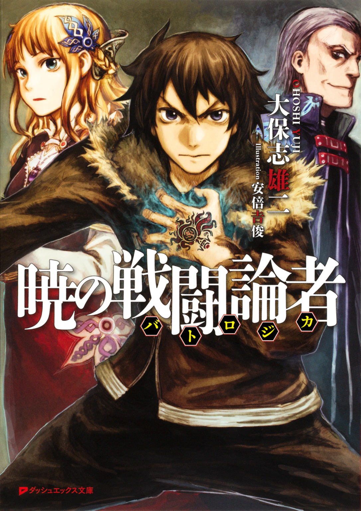
この本は縦書きでレイアウトされています。
また、ご覧になる機種により、表示の差が認められることがあります。
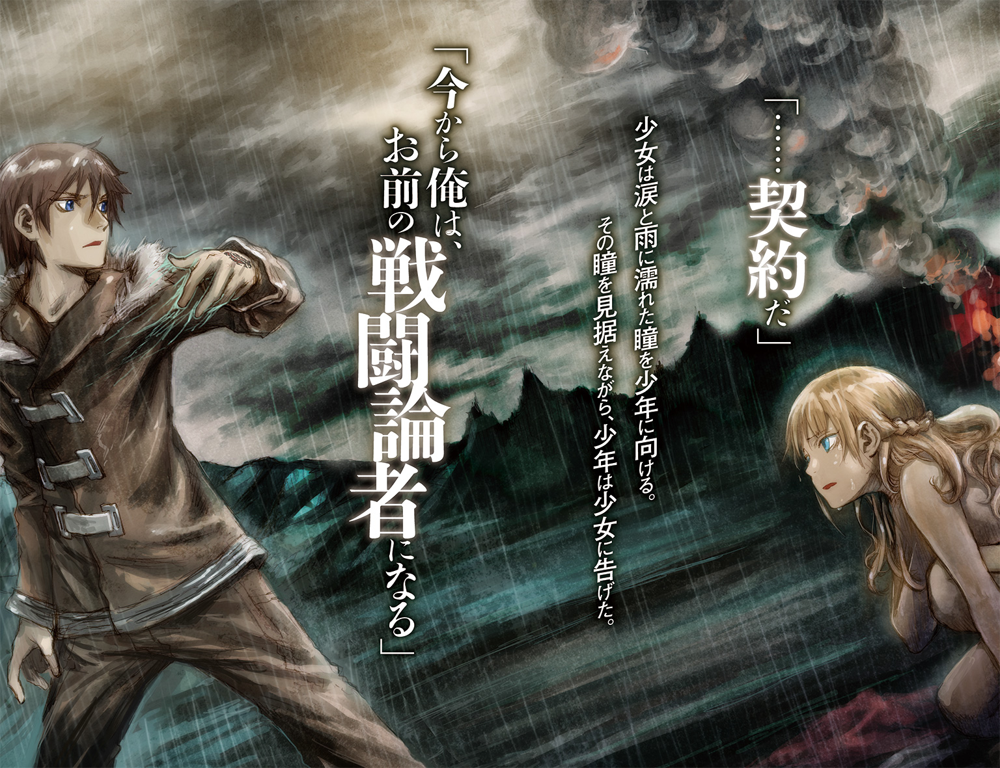
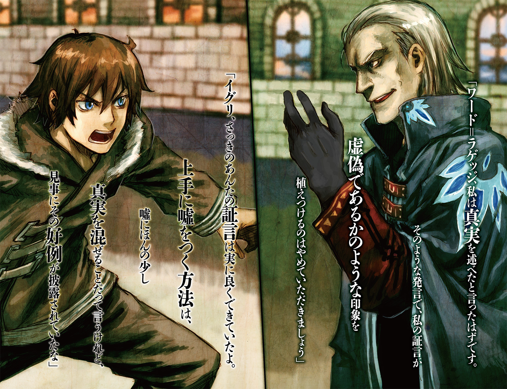
 ダッシュエックス文庫DIGITAL
ダッシュエックス文庫DIGITAL
暁の戦闘論者
大保志雄二
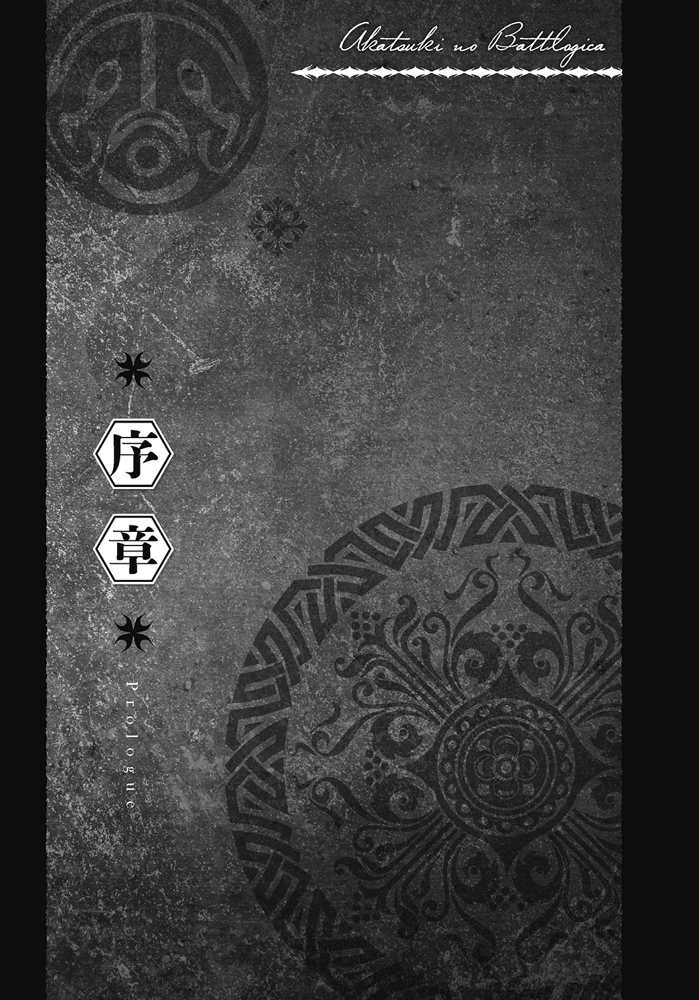
ポツ、ポツ............ポツ、ポツ......。
薄曇りの空から落ちてきた雨粒は、すぐさま豪雨となって夜の闇に包まれた森に降り注ぐ。先ほどの爆音と引けをとらない雨音が、周囲に響き渡る。
「うっ、ううっ......」
地面に膝をつき、泣き崩れている少女。
一糸纏わぬ姿である。
彼女の真っ白な裸体にも、無数の雨粒が容赦なく叩きつけられる。
か細い泣き声は、瞬く間に雨音にかき消されてしまう。
すると、傍らに立って少女を黙って眺めていた少年が不意に言った。
「......契約だ」
少女は涙と雨に濡れた瞳を少年に向ける。
その瞳を見据えながら、少年は少女に告げた。
「今から俺は、お前の戦闘論者になる」
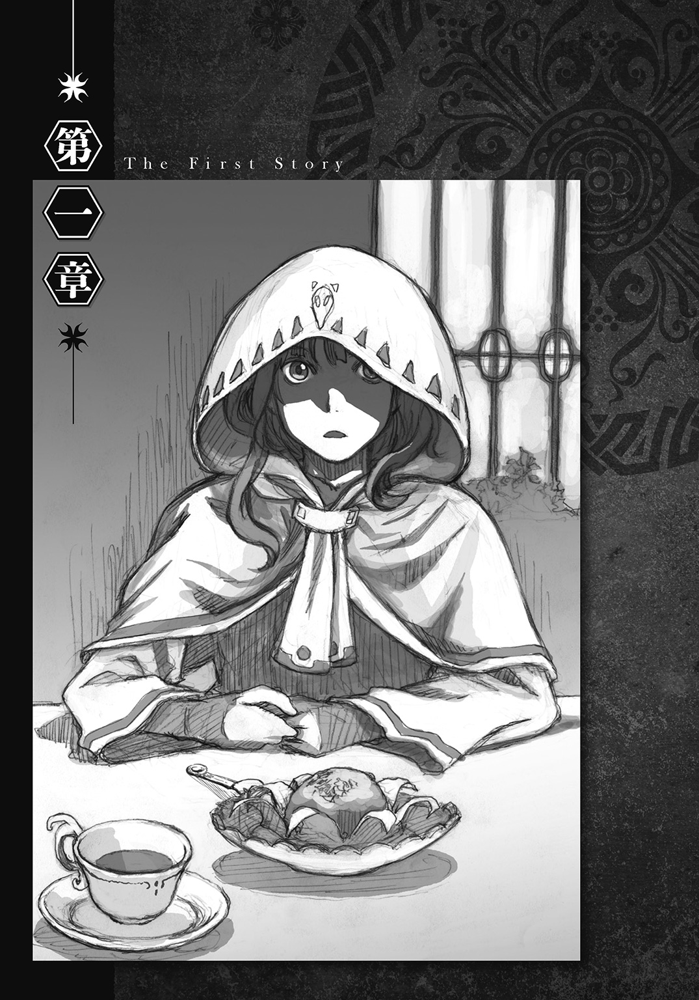
１
「納得できないわ！」
高い声が市場に響く。中央のスペース、リンゴがうずたかく積まれた屋台から発せられた声だった。何事かと集まった人々で、たちまちその屋台に人垣ができる。
「リンゴ一つで七〇〇〇ルード？ いくら何でも高過ぎるわよ！」
声の主は一人の少女だった。フードを被っているため表情はよく分からないが、声の調子と震えている両肩から、彼女が憤慨しているのは明らかだった。
「そう言われてもねえ、お嬢ちゃん。ウチのは国外から仕入れてきた特級品でね、王室にだって献上できるくらいの上物なんだ」
そんな少女に対し、屋台の親父はねちっこい口調で言った。
「お嬢ちゃんが口をつけちゃったんだから、もうそれは売り物にならないんだ。だから引き取ってもらうしかないんだけどねえ？」
「それは、味見してみないかって聞かれたから......」
「ああ、確かに味見するかいとは言ったさ。だが、そのリンゴを味見してもいいだなんて、一言でも言ったかい？」
「でも、味見しないかと言われてリンゴを手渡されたら、誰だって......」
「おいおい、特級品を丸々一個味見させるわけないだろう」
少女が反論しようとすると、屋台の親父は最後まで聞かずに言い返す。
「味見しないかって言ったのは『こっち』だよ」
そう言いながら、親父はリンゴを積んだ台の裏から小さな皿を取り出す。皿の上には、小指の先ほどにカットされ、串に刺さったリンゴがいくつも乗せられていた。
「そんなっ......！」
今になって初めて目にした小皿に対し、少女はそう口にするのがやっとだった。
「そういうわけだから、お嬢ちゃんがダメにしちまった、そのリンゴの代金を払ってもらいたいんだけどねえ？」
ここまでくれば、現場を見ていなくても何が起こったのかは簡単に予想がついた。
少女は単純な手にまんまと引っ掛かってしまったのだ。
「......ごめんなさい。持ち合わせがないわ」
フードの少女は俯いたまま、両手をギュッと握り締めながら言った。
「ほう、そうかい。じゃあお嬢ちゃんの親御さんに支払ってもらうとしようかねえ」
それを聞いて少女はビクッと身体を震わせる。
「お、親............？ ええっと......あの......親は......その.........」
「ああ？ 何だい、聞こえないな？」
「きゃっ！」
親父の大声に少女が身体を固くすると、やられちまったなあお嬢ちゃん、親父その辺にしといてやれよといった野次が周りから発せられる。
「ううっ......」
すっかり打ちのめされてしまった少女は、遂にその場にうずくまってしまう。
「仕方ねえなあ。おい誰か、このお嬢ちゃんがどこの子か知らないか？」
一方、屋台の親父は周りの野次など全く意に介せずにそう言うと、地面にぺたりと座り込んだ少女のフードに手をかけようとする。
「ちょっ......やめてよ！」
親父の手が頭に触れると、少女は片手でしっかりとフードを押さえて頭を左右に振る。
「こら、手間をかけさすんじゃねえ。さあ、顔を見せるんだ！」
「ダメ、ダメなのっ！ お願い、やめて！」
少女が悲鳴に近い声を上げた時だった。
人垣の中から一つの影がすっと抜き出てきたかと思うと、真っ直ぐにフードの少女へ歩み寄り、彼女の手からリンゴを取り上げる。少女はハッとして新たに出現した人影を見上げる。
人影の正体は、全身を安そうなマントでくるんだ少年だった。
どういう訳か左手にだけ革の手袋を嵌めている。
「へえ、これが一個七○○○ルードの特級リンゴ......」
マントの少年はそう言うと、リンゴを一口齧る。
「あ？ 誰だ、お前？」
突然現れた闖入者に、屋台の親父は警戒した口調で問いかける。だが、少年は何も答えずにリンゴをもう一口齧ると顔をしかめて言った。
「うわ、これで七○○○ルードだって？ 俺なら五〇でも買わないぜ？」
「うるせえ、ウチの品物にケチつけてんじゃねえ。何だ坊主、この子の知り合いか？」
「え？ いや、顔を見てないから断言はできねえけど、まあ初対面だろうな」
少年は、ちらりと少女に視線を向けてから言った。
「何せ、俺はさっきこの城下町に着いたばかりだからさ」
「てめえ旅の者か？」
「ああ、そうさ」
少年は屈託のない笑みを親父に向ける。
「城に用があるんだが、予定より早く着いたから市場を見学していたんだ」
「城に用事？」
親父は少年を上から下まで眺め回す。
このストベルシア王国において、城に用事のある人間は三つに大別される。
一つめは兵士や世話係といった城に勤務している者、二つめは他国からの使者や来賓である。旅の者という返答から、城勤めでないことは明らかである。加えて、少年は独りきりで誰も連れてはいない。使者やどこかの国の王子でないのもこれまた明白だ。
これで残る可能性は一つに絞られた。
「ひょっとして傭兵志願か？ そういや、また募集がかかっていたな」
「傭兵......まあ雇われたっていう点じゃ似ているな」
「そうか。だが坊主、てめえ戦争やるにしちゃあ、随分となよっちい身体だな」
少年は、あまり筋肉のついていないすらりとした身体をしていた。
「ああ、それは俺が肉体労働担当じゃないからさ」
「すると、軍師か参謀志望か？ そんなに頭良さそうにゃ見えねえけどな」
「ハハハ、言ってくれるぜ。ところでオッサン、そろそろ俺にも質問させてくれないか？」
「何だ？」
少年は笑顔で言った。
「オッサン、あんた本当はリンゴ売りじゃないよな？」
「なっ......」
屋台の親父はギョッとしたが、すぐに表情を元に戻す。
「な、な、何を言いだすかと思ったら......何だテメエ、俺の商売のやり方にケチつけようってのか？ 仕入れたリンゴをいくらで売ろうが、俺の勝手だろうが」
「いや、俺が言いたいのはそういうことじゃない。オッサンがどんな方法でリンゴを売ろうと、それはあんたの商売のテクニックさ。リンゴ売りじゃないとまでは言わねえよ」
「ほお、じゃあ教えてくれよ。リンゴ売りでなけりゃ、俺は何者だ？」
「砲兵だろ？」
少年は間髪をいれずに聞き返す。
「最低でも二〇年は勤め上げたベテラン級。年齢からすると、部隊長あたりか？」
完全に虚を衝かれて、屋台の親父は目を白黒させる。
「おい、何を根拠にそんなことを......お、俺は大砲を触ったことなんか一度だってねえよ」
降って湧いた予想外の展開。群衆の中からざわめきが生じるが、そんな周囲の反応をよそに、少年はにこやかに話を続ける。
「だったら聞くけどな、オッサンはこのリンゴの品種が分かるのか？」
「あ、ああ当たり前じゃねえか......自分の売り物が何かくらい、知っているに決まってらあ......ウチのリンゴは、イワキナ産のモニタって品種だ」
「おお、正解。よく知っていたな、オッサン。それじゃあさらに聞くけど、リンゴがモニタだと知っていながら、どうしてそんなリンゴの積み方をしているんだ？」
尋ねながら、少年は積み上げられたリンゴの山に視線を移す。
「モニタは傷みやすくて有名な品種だ。こんなふうにリンゴ同士を直に接触させて積み上げちまうと、下から半分......いや、三分の二は、もう完全に売り物にならなくなっちまう。女の子がダメにしたリンゴなんか、気にしている場合じゃないぜ？」
説明を聞いた群衆の間から、ほうという声が漏れる。
「俺はいろんな国の市場でリンゴの屋台を見てきたが、どんな小国の屋台でだって、モニタをこんなふうに積んだりはしていなかったぜ？」
「そ、それは......じ、実を言うとだな、モニタを扱いだしたのは割と最近でよ......そんなこととは知らずについ......」
屋台の親父がしどろもどろで返答すると、少年は言った。
「へえ、そうか。それで一個七〇〇〇ルードなんて、とんでもねえ値段がついていたのか。それじゃあ次の質問だ。オッサン、あんたの爪に詰まっているその黒い物は何だ？」
親父はビクッと身体を震わせると、自分の両手の爪を見る。少年の指摘した通り、彼の指先には、どの爪の間にもうっすらと黒いスジが引かれていた。
「火薬カスだよな、それ。砲兵隊は、火薬が触れるようになってようやく一人前扱いしてもらえる。爪に引かれてある黒線は、長年大砲を扱ってきたベテランの証だよな？」
「うっ......」
「リンゴの積み方とオッサンの爪を見たら一目で分かったぜ？ 砲兵隊長がリンゴ売りの真似をしていることにな」
反論する術を失い、黙ったまま自分を睨みつける親父に、少年はさらに畳みかける。
「教えてくれないか？ オッサンはどうしてリンゴ売りのフリなんて......」
少年が続きを言おうとした時だった。
「うるせえ、てめえにゃ関係のねえことだ！」
屋台の親父は突然そう叫んだかと思うと、少年に向かって殴りかかった。
「あっ！」
握り拳が顔面を直撃し、少年が地面に倒れると、フードの少女が短い悲鳴を上げる。
「ちょっ......大丈夫？」
駆け寄った少女が触れようとすると、それを制するかのように、少年はパッと起き上がる。
「ふう。軍隊仕込みのいいパンチだな、オッサン」
顔の左半分が見事に腫れ上がっているが、少年は飄々と親父に告げる。
「坊主、少しお喋りが過ぎたな。これ以上は恥をかきたくねえだろ？ さっさとずらかりな」
「いいや、こっちの質問はまだ終わってねえぜ」
凄んだ声で警告されても、少年は引き下がらなかった。
「オッサン。あんたがリンゴ売りに化けていたのは、ひょっとしてこの女の子が原因か？」
「えっ？」
突然話題にされて、少女は戸惑いを露にする。
「オッサンが使ったのは、子供騙しの使い古された手だ。世間知らずのお嬢様を騙す方法としちゃあ、変わった点はない。でもな、人垣ができてもやめなかったのは、どう考えても変だ」
「顔のもう半分も男前にしてほしいのか？」
「自分の店が客を騙す店だと宣伝する商売人がどこにいるんだよ？ 女の子を苛め続けるよりも先に、野次馬を解散させるのが普通の対応だろ？」
これ以上は喋るなと言わんばかりに、親父は再び拳を固める。
「そうしなかったってことは、何か理由があるってことだ。人が集まってくれた方が都合のいい理由が。だとすると、オッサンの目的はリンゴ代をせしめることじゃなく、この子を......」
「それ以上無駄口を叩くんじゃねえよ！」
親父が再び殴りかかる。すると、少年はカウンターを合わせるかのように小声で言った。
「―――カ・ルール第十三条、―――者は、己の生命に危険を及ぼした相手に対し、一度だけに限り、己の正体を明かさず己の力を行使しても罪には問われない」
右ストレートが再び少年の顔面に迫っていくのを見て、少女は思わず顔を背ける。
ところが、その数秒後。
「――――ど、どうなってやがる......？」
「......？」
場面にそぐわないセリフが聞こえ、少女は不思議に思って背けた顔を戻す。
「えっ......ええっ？」
途端に彼女の目は点になった。少年の鼻先すれすれで、親父の拳がピタリと止まっていたのだ。見えない鎖に繫ぎ止められているかのように、パンチを放った姿勢のままで、屋台の親父は身体を固まらせている。
「な、なぜだ......体が動かねえ......てめえ、俺に何しやがった......？」
「おっと、そういやリンゴの代金がまだだったな」
質問には答えずに、少年は懐から一〇〇〇ルード紙幣を七枚取り出すと小さく丸める。
「ほら、オッサン。七〇〇〇ルードだ」
微動だにしない親父の胸ポケットに、少年が丸めた紙幣を押し込んだ時だった。
「身体が動かないのはな、俺がオッサンに動くなって命令を下したからさ」
親父の耳元で、少年は素早く囁く。
「な、何だと......お、俺に催眠術でもかけやがったのか......？」
「いいや、もっと質の悪い『力』だ。何せ、俺がオッサンの身体を操れるのは......」
少年は一呼吸置いてから言った。
「俺の説明を聞いて、オッサンが納得したせいだからな」
「すっ......するとてめえ......」
屋台の親父は両目を見開く。
「まさか......バ、ババ......バトロジカか！」
「御名答！」
笑顔で少年が返答するのと同時だった。
あたかも見えない手に突き飛ばされたかのように、親父の身体は背中から屋台に突っ込んだ。
２
「バトロジカ......」
「バトロジカだと......」
少年の正体が判明すると、取り囲んでいた人垣の雰囲気が一変する。
「ああ、それも流浪のな」
そう答えた後で、続いて少年は思い出したように付け加えた。
「そういやモニタの積み方がおかしい理由を説明した時、あんたらも納得していたっけ？」
それを聞いた途端、人々は顔をサッと青ざめたかと思うと、あっという間にその場から立ち去る。残ったのは半壊の屋台と目を回した親父、そしてフードの少女だけとなった。
「はあ......相変わらず抜群の効果だな――――うん？ 何だ、まだいたのか？」
フードの下から自分を見つめる視線に気づくと、少年は少女の方を向く。
「あっ、あの......その、たっ、助けてくれて......」
向かい合う少年に、少女が礼を言おうとした時だった。
「しかし馬鹿だなあ、お前。今時あんな手に引っ掛かるか、普通？」
その言葉で、少女のこめかみがピクリと引きつる。
「――――何ですって？」
「独りでうろつくのは、もう少し利口になってからの方がいいと思うぜ、じゃあな」
言いながら立ち去ろうとする少年を、少女は尖った声で呼び止める。
「ちょっと待ちなさいよ！ あんた、何か勘違いしてない？」
「勘違い？」
「ええ、そうよ。私、一度でも口にしたかしら？ 助けてほしいって言葉を」
「......ああ？」
少年は信じられないものを見るような目つきで少女を眺める。
「お前......それがピンチを救ってもらった恩人に向かって言うセリフか？」
「ほうら、やっぱり勘違いしていたわね。あんなの、別にピンチでも何でもなかったわ」
「あ、あのなあっ......！」
思わず言い返そうとするが、それは叶わなかった。
「いたぞ、あのガキだ！」
甲冑を纏った兵士が二人、彼らに迫ってきたからである。
「やっべ......もう来たか」
少年は慌てて逃げ出そうとするが、フードの少女がそれを遮る。
「待ちなさいよ、まだ話が終わってないわ！」
「いや、おい、あれ見ろよ。喧嘩している場合じゃ......」
「こっちよ！」
素早く少年の左手を引くと、少女はすぐ手前の細い通りへ飛び込む。
「えっ？」
手袋越しに柔らかな手の感触が伝わるのを感じながら、少年は意外そうに尋ねる。
「助けてくれるのか？」
「ええ、感謝しなさい」
「あ、ああ。ありが......」
つんのめりそうになるのを堪えながら、今度は少年の方が礼を言おうとした時だった。
「ちょっと、もっとしっかり走りなさいよ！」
再び少女が金切り声を上げる。
「追いつかれたらどうするのよ？ 男のくせにとっろいわね！」
「............しねえ......絶対に感謝なんかしねえ......」
少年はボソリと呟いてから少女の手をほどくと、彼女と歩調を合わせる。
「―――それであんた、旅の者って言っていたけど」
さらに細い通りに入ったところで、少女はスピードを落とさずに口を開く。
「ストベルシアに何しに来たのよ？ ええっと......確か、バトロジカって名前なんだっけ？」
「違う。バトロジカは俺の名前じゃねえ」
少女の横に並ぶと同時に、少年は訂正を入れる。
「ワード。俺の名前はワードだ」
「あら、そうなの？ じゃあ、バトロジカっていうのは何なのよ？」
「本っ当に何も知らないんだな。学校で友達から聞いたりしなかったか？」
ワードが呆れた顔で聞くと、少女は少し口ごもりながら返答する。
「わ、私、行ったことないのよ、学校......勉強は、家庭教師の方々から教わってるの」
「へえ、家庭教師の方々ね」
ワードは頷きながら言葉を返す。
「かなりいいとこのお嬢様なんだな。どうりであんなカビの生えた手に引っ掛かるわけだ」
「う、うるさいわね！ そんなことより、早くバトロジカが何なのか教えなさいよ」
少女に急かされると、ワードは走りながら説明する。
「バトロジカは、俺の職業を表す俗称だよ。他にも『雄弁なる戦士』とか、『論理を纏いし者』なんて呼ばれ方もするけどな」
「俗称？ だったら、正式な職業名は何て言うのよ？」
「戦闘論者」
ワードが端的に答えると、少女は首を傾げる。
「戦闘論者......初めて聞く言葉だわ。それってどんな仕事をする人なの？」
「そうだな......一番多いのは、きな臭い国での要人警護。一種の用心棒だな」
「用心棒？ でもあんた、自分の仕事は肉体労働じゃないって......」
「用心棒っていっても、別に暴力や刃物から雇い主を守る訳じゃねえんだ。戦闘論者は、敵の戦闘論者の攻撃から雇い主を守るのさ」
「何だか分かりづらいわね」
「おっと、そうか。先に戦闘論者の力の説明をするべきだったな............あれ？」
一旦会話を中断すると、ワードは不安そうな声で少女に確認する。
「いいのか？ 前、行き止まりだぞ？」
進行方向の先には、扉が取りつけられていた。金属製の頑丈そうな扉で、体当たりで破壊するのは明らかに不可能だ。
「心配しなくていいわ」
少女は得意げに言うと少しだけ足を速めて、ワードより先に扉まで到着する。
「あの扉、いつも鍵が掛かってないのよ」
言いながら、少女はノブを回す。すると、扉がガチャリという音を響かせる。
「えっ、噓！」
何度もノブを回すが、扉は開かない。完全に向こう側から施錠されていた。
「やだっ、どうして......こんな時に限って！」
「あらかじめ塞いでおいたみたいだな。俺たちを挟み撃ちにするつもりだ」
追いついたワードが後ろを振り返りながら告げる。
「見ろよ、二人いたはずの兵隊が一人になっている」
その言葉で少女も背後を振り向く。ワードの言った通り、向かってくる兵士は一人しかいなかった。二人の所までは、残り一分ほどで追いつくだろう。
「きっともう一人は、この扉の向こうで待ち構えているはずだ。俺たちを追い込んだ後で、鍵を開ける手筈なんだろうな」
「ああ、もうどうしよう......このままじゃ、私捕まっちゃうじゃない......」
少女の焦り声を聞いたワードは疑問に思う。
「え？ 何でだよ、あいつらが追っているのは俺だろ？」
「そうよ。だけど、捕まるのは私なの」
「どうしてだ？」
「........................」
「シュークリーム」
無言の返事を受け取ると、ワードは唐突に少女に告げる。
「え？」
何を言われたのか分からず、少女は思わず聞き返す。
「実は楽しみにしていたんだよ。この国の高級洋菓子店で売っている、世界一美味しいって言われているシュークリームを食べるのを......」
「それが何？」
「でもそのシュークリーム、常連しか買えないんだろ？」
「ああ、そうね。材料の関係で一日に限られた個数しか作れないから、シュークリームだけはそういう決まりになっているのよ」
「そいつを知って諦めていたんだが、お前......いや、あんたいいとこのお嬢さんなんだろ？ だったら、その店の常連だったりしないか？」
「創業以来のお得意様よ」
「おお！」
ワードは目を輝かせる。
「だったら、そのシュークリームを手に入れてくれないか？ そうしてくれるなら、この場は俺が上手く切り抜ける」
それを聞くと、少女はすぐに返答する。
「取引ってわけね......いいわ、乗ってあげる」
「よし、約束したぜ」
嬉しそうな声で言うと、ワードは扉と少女を背にして兵士と対峙する。
「おい。一緒に来てもらうぞ、バトロジカ」
褐色の肌をした兵士は足を止めると、強い口調でワードに命令する。
「ただのバトロジカじゃないぜ、俺は流浪のバトロジカだ」
「だからどうした？」
兵士はワードを鼻で笑う。
「流浪だと言えば、俺がビビるとでも思ったか？」
「いいや、確認したかったんだ」
軽快な口調を崩さずにそう言うと、ワードは細い通りをゆっくりと進んで兵士に近づく。
「ところでさ、ものは相談なんだけどよ......」
そして口元を手で覆うと、ワードは兵士に言った。
「二万ルード払うから、ここは見逃してもらえないかな？」
「......てめえ、俺を嘗めているのか？」
兵士はワードの胸ぐらをグイッと摑む。
「そんなケチな買収に俺が応じると思って、わざわざ近づいてきてくれたのか？」
「やっぱダメか？」
「傭兵だと思って安く見るんじゃねえよ。二百万積もうが、てめえを逃すわけにはいかねえな」
「そうか、交渉決裂だな。だったら手を離してくれねえか？」
ワードは相手の目を見つめて言った。
「ウガル＝シナグプタ」
「なっ......」
兵士は絶句しながらワードを見つめ返す。その瞳には、怯えの色が宿っていた。
「なぜだ......てめえ、なぜ俺の名前を知っている！」
ワードは澄ました顔で言った。
「言っただろ、ただのバトロジカじゃないって。実は俺はな、寿命の半分と引き換えに見た相手の名前が分かる目を死神から......」
「ふざけるな！」
ウガルは歯ぎしりしながらワードの襟首を絞め上げる。
「痛い痛い痛い。分かった、説明する」
ワードは苦しそうにしながら解説を始める。
「手掛かりにしたのは三つ、あんたの肌の色と瞳の色と話し方だよ。肌の色から南の出身なのは明白、加えて語頭よりも語尾にアクセントを置いた話し方は、中央大陸南西部で育ったことを表している。そこまで分かれば、後は勝率の高い『賭け』に挑むだけだった」
「賭け......だと......？」
「ああ。あんたの瞳の色は肌と同じ褐色だ。つまりハーフやクォーターじゃなく、生粋のココア人の両親から生まれている。大陸南西部で育った生粋のココア人と言えば、九割がタリズ国の出身だろ？ だから、俺は自分からあんたに近づいたんだ」
「何だと？」
「タリズには、ある伝統的な風習がある。生まれた子供の左の鎖骨に、母国語で子供の名前を入れ墨するっていう風習がな」
ウガルはハッとして自分の胸元に目をやる。
「そういうことか......」
甲冑の下に着込んだ帷子の隙間からは、鎖骨の下に彫られた自分の名前が覗いていた。
「だが......なぜだ？ 何でてめえはわざわざ捕まりに来てまで、俺の名前を知ろうとした？」
「なぜ？ そりゃ決まっているだろ」
ワードは口元に笑みを浮かべて答える。
「あんたを納得させるためだよ」
「うおあっ......！」
ウガルは自分の犯した過ちを思い知らされる。
「しっ......しまった！」
「バトロジカ・ルール第五条」
ワードは胸ぐらを摑まれたまま告げる。
「流浪の戦闘論者は、己の正体を明かした相手に対し、己の力を行使することができる」
それを聞いたウガルは、膝からゆっくりと崩れ落ちる。
「ちっ......くしょう......め......」
そして悔しそうに吐き捨てながらワードの拘束を呆気なく解くと、ウガルは、白目をむいて地面に横たわり、そのまま動かなくなってしまった。
「終わったぜ」
時間にして二分少々。あっさりと苦境を打開したワードは、少女に顔を向ける。
「あ、あんた......今何したの？」
目の前で起きたことを理解できずに、少女は息を飲みながらワードに尋ねる。
「うん？ ああ、そういや力の説明の途中だったな......屋台のオッサンが二度目に俺を殴ろうとした後、どうなったかは覚えているよな？」
「え？ ええ......とっても不思議な光景だったわ」
少女の頭の中で、身を固まらせたまま屋台に突っ込んだ親父の姿が再生される。
「あれが戦闘論者の持つ『特別な力』なんだよ」
「どういうこと？」
「屋台のオッサンは、俺が披露した二つの説明――『リンゴ売りでないことを見抜いた理由』と『砲兵だと見抜いた理由』を聞いて『納得』しただろ？ だから俺は、『動くな』っていう命令と『後ろに吹っ飛べ』っていう、二つの命令を下すことができた。そして今回は、兵隊に『名前を言い当てた理由』を聞かせて『納得』させたことで、『気を失え』っていう命令を実行させた」
「要するにあんたの解説は、戦闘論者の力を使うための布石だったってわけね」
少女はワードの言いたいことを理解すると、続けて言った。
「それじゃあまさか、戦闘論者の持つ『特別な力』っていうのは......」
「そうだ」
ワードは一度頷くと言った。
「戦闘論者は『説得した相手を操ることができる力』を持っているんだ」
そして、さらに説明する。
「ただし、その力には回数と時間に制限がある。命令できる回数は『成功した説得一度につき一回』、しかもその命令は、『説得してから二十四時間以内』にしないといけねえんだ。二十四時間を過ぎると、説得した相手への命令は受けつけられなくなっちまう」
「知らなかった............」
あまりに驚いたため、少女は次の言葉を発するまでに十数秒を要する。
「そんなことのできる人間が、この世界にいたなんて......」
「ホント広いよな、世界って」
おどけた調子で言うと、ワードはウガルを跨いで、来た道を戻り始める。
「ま、後の続きはシュークリームを食べながらにしようぜ」
３
「この店よ」
フードの少女の案内で、ワードは待望のパティスリーを訪れる。
「中で食べることもできるから、ついでにお茶も飲ませてあげるわ」
先ほどの騒ぎは店の人間には知られていなかったらしく、少女が常連の証である店のカードを提示すると、オーダーはすんなりと通った。
「美味い......！」
運ばれてきたシュークリームを口に入れると、ワードは満面に笑みを浮かべる。
「当然よ。ここのシュークリーム、卵もミルクも小麦粉も砂糖も、ストベルシアが誇る最高級の国産品が使われているんだもの」
「いやあ、確かに世界一って言われるだけのことはあるな......」
「へえ、あんた甘い物が好きなのね」
そう聞かれると、ワードは真面目な顔で言った。
「ああ、心の底から愛している」
それから数分後。
「さて、聞かせてもらうわよ。あんたの力、一体どういう仕組みになっているの？」
シュークリームを食べ終えると、フードの少女は真っ先に尋ねる。
「今のところ、『意志に作用する力』ってこと以外は、明確な仕組みは分かっちゃいねえんだ」
「もっと分かりやすく説明してくれない？」
「ええっとだな......相手の意志を強制的に上書きする力で、命令を実行させていると考えられているんだ」
ワードは言葉を選びながら説明を始める。
「市場での命令を例にすると、オッサンが動けなくなったのは、オッサンの『身体を動かす』っていう本来の意志が、『身体を動かさない』っていう意志に上書きされたからなのさ」
「意志って言っても、『今日の夕飯はあれが食べたい』とか、『お金持ちになりたい』とか、大小いろいろあるじゃない。その力は、どんな意志でも上書きできるの？」
「下せる命令の持続時間と規模は、納得させた程度に比例するようになっている」
「分かりやすく説明しなさいってば」
「要するに、どれだけ相手を上手に説得できたかで強制力が変わる仕組みなんだよ」
少女の指摘を受けると、ワードは急いで言い換える。
「深く納得させればさせるほど、下した命令の持続時間は長くなるし、命令できる内容の規模も大きくなる。人生観を変えるほどの強い説得に成功すれば、どんなに強固な意志であっても上書きは可能だ。戦闘論者が死んだ後でさえ命令は持続するし、『自害しろ』と命令するだけで相手の生命を奪うことだってできる......どうだ、伝わったか？」
「最初からそう言いなさ――――うん？ ちょっと待って」
ワードの顔の殴られた痕を見た少女は、はたと気づく。
「だったら、どうして最初の攻撃を止めなかったのよ？ 初めて暴力を振るわれたのは、あっちがあんたの説明に納得した後からだったわよね？」
「それは俺が『流浪』の戦闘論者だからなんだが......その説明をするには、先に歴史的な背景から説明しないといけねえな」
そう言うとワードは左手の手袋を外し、少女に手の甲を向ける。
「戦闘論者は、常に一定の割合でこの世界に生まれてくる。俗に『バトロジカ紋』と呼ばれている、左手の甲に刻まれた独特の紋様と一緒にな」
その左手には、少女がこれまで見たことのない赤黒い模様が浮かび上がっていた。
「戦闘論者には言葉を交わすだけで相手を思い通りにできる力がある。だから、戦闘論者は生まれながらの嫌われ者だ。普通の人間なら、そんな相手とは関わり合いになりたくない」
「普通じゃなくて悪かったわね」
「話の腰を折るなよ」
ワードは不満気に言い返してから説明を再開する。
「そういう訳で昔の戦闘論者たちは、自分たちの存在を受け入れてもらうためにルールを作る必要があった」
「ルール？ 何についてのルールよ？」
「戦闘論者の力を制限するためのルールさ。そうしないと、操られることを恐れる人々に襲われて、戦闘論者は文字通り『問答無用』で殺される危険があった」
手袋を嵌め直すと、ワードは声を落としてから言った。
「左手に紋様のある、生まれたばかりの赤ん坊も含めてだ」
「ちょっと......まさか............」
少女が言葉を濁すと、ワードは首を縦に振る。
「大昔は、各地でそんな悲劇が実際に起きたらしい。そうした背景もあって、今から五十年ほど前の戦闘論者たちは、まず団結して協会を設立した。そして次に、『戦闘論者の力の使用に関する規約』、通称『バトロジカ・ルール』を制定し、自分たちの力の使用に厳しい制限を加えた、『契約制度』を定めたことで、ようやく戦闘論者は世界に存在を認めてもらえたんだ」
「契約制度？」
「自分と契約を交わした人間、『契約者』の許可がないと、戦闘論者は自分の力を使っちゃいけないっていう取り決めのことだ」
ワードは、さらに踏み込んだ説明に入る。
「例えば、俺が誰かを契約者にする。すると、もう俺は自分の意志で力を使えなくなっちまう。俺の持つ戦闘論者の力を使える権利は、契約者が有しているからだ。力を使いたければ、契約者から許可をもらう必要があるんだ」
「それじゃあ私があんたと契約すれば、私は戦闘論者の力を使うことができるのね......」
少女の反応が、これまでとは微かに変化する。
「そうだ。ただし、代償も一緒についてくるぜ？ 契約者は、戦闘論者の力が原因で生じた結果の責任を負わなくちゃいけねえんだ」
「力の行使には責任を伴うってわけね」
少女はすぐに返答する。
「それに、そうしておけば戦闘論者の力が悪用されるのを防ぐことにも繫がるものね」
「良くできているだろ？ 戦闘論者の一番多い仕事が用心棒なのは、契約制度のおかげで、誰もが公平に力を使える仕組みが整ったからなのさ」
「でも......その取り決めだと、もしも戦闘論者が自分の契約者を操ってしまったら、今度は戦闘論者の方が、力を悪用した責任を契約者に押しつけることができるんじゃない？」
「おっ、鋭いな」
「どう対処しているのよ？」
すっかり冷めた紅茶を飲み干しながら少女が尋ねると、ワードは言った。
「実は対処しなくても問題はない。なぜなら、戦闘論者と契約者の間で交わされる契約は、戦闘論者にとって強力な『枷』として作用する代物だからだ。契約者と定めた相手にだけは、戦闘論者は『本当に』自分の力を使えないし、同時に『本当に』契約者の許可を得ないと自分の力が使えなくなるのさ」
「だけど、あんたは二回とも、誰からも許可を取らずに力を使っていたわよね？」
「俺が『流浪』の戦闘論者だからさ」
新たに生じた疑問を少女が口にすると、ワードはそう言ってから次の説明に移る。
「契約制度が定められたことで、戦闘論者は二種類に分けられた。一方は契約者を持つ『堅気』の戦闘論者。そしてもう一方が、契約者を持たない『流浪』の戦闘論者だ」
「やっとその話題に繫がるわけね。つまり、誰の許可も取っていなかったのは、あんたが契約者を持たない流浪の戦闘論者だからなのね？」
「そういうことだ。嫌われ者に該当するのも、正確には流浪の戦闘論者の方だけだ。契約者がいないってことは、自分の一存で力を使えるってことだからな」
「バトロジカ・ルールは、流浪の戦闘論者については何も定めてないの？」
「いいや、当然定めてあるさ。だが、ルールの遵守は戦闘論者の自制心のみに委ねられているから、その気になれば破ることができる」
「なるほどね。あんたが流浪の戦闘論者だと分かった途端に、周りから人が消えた理由がやっと分かったわ」
ワードは少女の言葉に頷くと、二杯目のコーヒーをカップに注ぎながら説明を続ける。
「流浪の戦闘論者は複数の条件を満たさない限り、自分の力を使えないことになっている。条件の一つは、自分が『流浪』であると明かすことだ。俺が『流浪』であることを知っていた兵隊のウガルには最初から力を使えたが、オッサンにはそうはいかなかった。バトロジカ・ルール第三条『流浪の戦闘論者は、己の正体を明かしていない相手に対し、己の力を行使してはならない』。最初の攻撃を戦闘論者の力で防ぐと、俺は第三条に背く結果になった」
「防がなかったんじゃなくて、防げなかったってことね？」
「ああ。だが、二度目の攻撃には力を使っても構わなかった。バトロジカ・ルール第十三条『流浪の戦闘論者は、己の生命に危険を及ぼした相手に対し、一度だけに限り、己の正体を明かさず己の力を行使しても罪には問われない』。一度攻撃を受けた相手からさらに襲われた場合は、この第十三条が適用できるからな」
全ての説明を終えると、ワードは静かにカップを置く。
「さて、それじゃあ今度はこっちが聞かせてもらう番だ」
「何よ？」
ワードは取引を持ちかける直前に尋ねた質問を、もう一度少女に投げかける。
「兵隊が追っていたのは俺だったのに、どうして自分が捕まるなんて言ったんだ？」
「............」
少女は先ほどと同じく沈黙するが、ワードはじっと待つ。
「......分かったわよ、教えてあげるわ。実はね、私......」
しばらくして、少女がようやく口を開いた時だった。
二人のテーブルに、握り拳大の丸いものが、弧を描いて飛んできた。
「えっ？」
「おっ？」
その球体から火薬の匂いがすることに二人が気づいた時だった。
パパパパパン！
凄まじい炸裂音を店内に響かせながら、目の前で球体が弾け飛ぶ。
「うわあっ！」
「きゃっ！」
二人は思わず耳を塞いで屈み込む。するとその直後、入り口の扉がバタンと乱暴に開かれたかと思うと、槍を持った大勢の兵士たちが、二人のテーブルになだれ込んできた。
４
兵士たちはあっという間にテーブルを取り囲むと、持っていた槍をワードに突きつける。
「そろそろ来る頃だとは思っちゃいたが......まさか爆音火薬まで使うとは思わなかったぜ」
ワードが両手を挙げて降参の意を示すと、兵士の後ろから眼鏡をかけた男性が現れる。
「私は警務省長官のクロードという。国内のあらゆる治安維持を任されている者だ」
眼鏡の男は、射抜くようにワードを睨みつけながら告げる。
「騒ぎを起こしてくれたらしいな。城まで来てもらおうか」
「そりゃちょうど良かった。もう少ししたらお城へ行こうと思って......うおっと！」
その軽口は途中でやむこととなった。クロードの合図によって、ワードの喉元ギリギリまで槍の先端が延びたためである。
「おい、誰が喋っていいと言った？」
クロードの言葉で、空気が一気に張り詰める。
「今後こちらの許可なく口を開けば、二度とその下らん力を使えなくなると思え。いいな？」
あからさまに険を帯びたその命令口調に、ワードはおとなしく頷くしかなかった。
「グラッド副官」
続いてクロードの掛け声で、人の好さそうな顔をした男が現れる。グラッドはフードの少女を立ち上がらせると、テーブルから離れさせた。
「あっ......私、まだ話しておかないといけないことが......」
「申し訳ありませんが、緊急時のためお聞きしている時間がございません。速やかにここから立ち去っていただきます」
「ちょっと待ってよ......ああっ！」
クロードが全く耳を貸さなかったため、フードの少女は半ば引きずられるようにして外へ連れ出されてしまう。他の客や店の人間もとっくに退散していたので、店内に残っているのはワードと数人の兵士とクロードだけとなった。
「さて、城へ戻る前に、簡単な事情聴取だけ済ませておく。名前を言え」
クロードの鋭い視線が、再びワードに向けられる。
「ワード。ワード＝ラゲッジ」
「ラゲッジ......ここらでは聞かない名だな。出身はどこだ？」
「知らねえよ、俺は捨て子だからな。戦闘論者協会の北方支部に捨てられていたんだとよ」
「ならば、ラゲッジというのは？」
「俺の師匠のファミリーネームだ」
「城に立ち寄るつもりだと言っていたが、ストベルシアに来た目的はなんだ？」
「その師匠のお使いさ。『自分の代わりに王妃陛下に謁見して話を拝聴しろ』って言われている」
これを聞くとクロードは、片方の眉をしかめて表情を曇らせる。
「......続きは城で聞く」
それだけ言うとクロードはハンカチを取り出し、それを絞った雑巾のように丸めて棒状にする。そして、それをワードの口に押し込んでから、さらにロープで猿ぐつわまで嚙ませる。
「引っ立てろ」
（へえ......）
口封じを終えたクロードが先に店を出るのを眺めながら、ワードは相手が切れ者であることを思い知る。
（質問は簡潔で、こっちの回答に気になる情報が出てきても、それについては追及してこなかったな。兵隊たちも俺の『喉元』を槍で狙っていた。この長官、戦闘論者への対応の仕方を心得てやがる......）
二人の兵士に両腕を摑まれながらパティスリーを出ると、外は市場の時よりも人だかりができていた。両側が大勢の人間で固められた道の真ん中を、ワードは猿ぐつわをされたままで行進させられる。
「ちょっと、あんた！」
声がした方向に視線を向けると、見覚えのあるフードが目に映り込む。少女はワードに近づこうとするのだが、グラッド副官がそれを完全に阻止している。
「ちゃんと助けてあげるからおとなしくしているのよ、いいわね！」
（おいおい......世間知らずにもほどがあるだろ）
少女の張り上げた大声を聞くと、ワードは呆れ返る。
（一体どうやって助けるつもりだよ？ 署名運動でもしてくれるのか？）
そう思うと、ワードはもう会うことはねえよという意味を込めて、少女に手を振った。
５
ストベルシア王国は、中央大陸の北部、東方に突き出た半島に建国された一国家である。温暖な気候と豊富な自然に囲まれたその国土は、しばしば他国の侵略対象として狙われたことがあるものの、代々この国を治めてきたストベルシア王家の巧みな舵取りにより、これまで独立を貫き続けてきた。
国の統治は、絶対王政により行われており、王を補佐する十二人の国務大臣も、王家と縁のある者から選ばれることが多い。自然条件の良さから、国を維持する上で必要な穀物や家畜、産業製品の九〇パーセントを自国で賄っており、近隣諸国とも友好な関係を維持している治安の良い国である。
「市場で騒動を起こした流浪のバトロジカが捕まったそうだ」
十二人の国務大臣の一人であるマフィニは、自分の執務室にいるもう一人に言った。
「左様でございますか。バトロジカがこの国に来るとは、珍しいこともあるものです」
四十代後半の瘦せぎすの男がそう答える。
十年ほど前からマフィニの秘書官をしている、イグリという男である。
「お前の方には、何か変わった報告が届いてはいないか？」
「いえ、特には」
イグリは手元の報告書に目を落としながら答える。
「今朝の定例報告会で挙がった内容は、今晩は大雨になる可能性が高いという自然環境省からの報告、小麦の実りが前年度よりもいいという農務省からの報告、傭兵志願者の集まりが悪いという軍部省からの報告の三つでございます」
読み終えた報告書を丸めると、イグリは続けて言った。
「それでマフィニ様。そのバトロジカは、何の目的でこの国に来たと言っておりましたか？」
「城に用があると言っておったそうだ。バトロジカは傭兵に志願することがあるのか？」
「全くないというわけではございませんが、本当に城に用事があるのであれば、何か他の理由があると考えた方が良いかと思われます」
イグリは丁寧な口調で返す。
「ならば、自分の契約者でも探しに来たというのか？ こんなのどかな国に......大陸中部の国々を渡り歩けば、契約希望者には事欠かんであろうに」
面白くなさそうな表情でマフィニは窓の外を眺める。それは城の内側に面した壁に設けられた窓であり、渡り通路で繫がれた向かいの塔を見ることができた。
「余計な邪魔が入ったものだ」
マフィニは向かいの塔に焦点を合わせてから言った。その場所には、ワードが現在押し込められている取り調べ室がある。
「その点については、運が悪かったとしか言いようがございません。しかし、どうでしょうマフィニ様。いっそこの機会を利用して、あの『計画』を実行に移すというのは？」
イグリの瞳が妖しい光を帯びる。
「邪魔をした償いとして、流浪のバトロジカを『計画』の表向きの実行犯に仕立てるのです」
「そんなことができるのか？」
マフィニが興奮気味に尋ねる。
「はい、私に考えがあります」
イグリが続きを話そうとした時だった。執務室の扉がノックされて、兵士が入室してくる。
「マフィニ国務大臣。午後の会議の準備が整いましたので、お迎えに上がりました」
「ああ、ありがとう。すぐに向かうとしよう」
素早く会話を中断すると、マフィニは兵士を慈しむかのような笑顔を向けて言った。
６
五時間にも及ぶ厳しい取り調べが終わると、ワードは所持品を全て没収された上で、城の地下牢に閉じ込められた。
「なあ。少し市場を賑やかしただけで、ここまでする必要はねえんじゃないか？」
ワードは愚痴をこぼすが、見張りの兵士は何も答えない。「戦闘論者とは一切口をきくな」と、クロードから固く言い含められていたからである。
（ふう、ダメか......）
何を話しかけても無反応なことを悟ると、ワードはベッドとは名ばかりの、壁から突き出た木製の板に身体を横たえる。
（それにしても、おかしな取り調べだったな......）
することがなくなったワードは、先ほどまでの取り調べの様子を思い返す。
（不可解なのは三つ......）
取り調べを受けていてまずおかしいと感じたのは、戦闘論者への対応が完璧だったことだ。
（ここへ来る前に文献で少し調べたが、ストベルシアは国内の情勢が安定している国だ。王政が上手く機能していて、十二人の国務大臣たちとの連携も上手くいっている。だから、地位の高い連中が「上客」になるとは考えづらい......）
ここで言う「上客」とは、「多額の報酬を支払ってくれる契約者」のことである。これに当てはまる人物像としては、「出世争いに熱を上げている将校」や、「凶悪な盗賊団が潜む危険区域を移動しなければならない大富豪の商人」等が挙げられる。
前者は、ライバルが戦闘論者と契約して自分の言動を操作するのではないかという不安から、また、ここ一番でライバルを蹴落とすための切り札として、莫大な契約料と引き換えに、自分の言いなりとなって働く戦闘論者を常に欲している。
後者の場合は、一個小隊規模の手下を従える大盗賊団ともなると、盗賊団の首領が戦闘論者と契約を交わしている場合があり、そうした盗賊団は罰則規定に当たることを承知の上で、商品を奪うだけに飽き足らず、戦闘論者の力で商売や取引に関わる極秘情報まで奪ってしまう。そのため、商人たちは長旅の際は一時的に戦闘論者と契約し、秘密を喋ることができないよう自分自身に戦闘論者の力をかけさせることで秘密を死守するのである。
こうした「上客」の存在する国は戦闘論者の入国を厳重に警戒しており、それ故に戦闘論者への対応もこなれている。しかし、それは国内外の情勢が極めて危うい大陸中部の所在国での話であり、ストベルシアのような辺境の小国が中部の国々と同レベルの対応をとれていることに、ワードは強い違和感を覚えたのだ。
（対応は不自然なくらい完璧だった。はじめは、あのクロードって長官が優秀なせいだと思っていたが、それだけじゃ説明がつかねえ。あの対応は、明らかに協会が作ったガイドラインに基づいていた......つまり、協会の派遣する指導員から指導を受けたってことだ）
協会に支払う指導料は、決してクロード個人の裁量で支払える額ではない。つまり指導員を招いたという事実は、その必要性が乏しいにもかかわらず、ストベルシア王国が国家レベルの戦闘論者対策を取っていることを意味している。
（二つめは王妃陛下の件......）
取り調べ中、ワードは何度も王妃への取り次ぎを頼んだのだが、相手側からの返答は全て「聞かれたこと以外のことは喋るな」の一点張りだった。
（王妃殿下に報告が行けば、俺が噓を言っていないことはすぐに判明したはずだ。なのに、城の連中は全く耳を貸さないで、頑なに俺の要求を無視し続けた）
その結果、ワードは市場での騒動について三〇回以上も説明させられることになったのだった。
（そして三つめが......）
そうやってワードが考え始めてから、小一時間ほどが経過した時だった。
「バトロジカ、出ろ」
「え？」
いきなり命令口調で言われたかと思うと、牢の扉がガシャンと開かれる。
「もう解放してくれるのか？」
ベッドから起き上がると、ワードの目にクロードの姿が映る。
「俺の処遇は、明日の朝に緊急会議を開いて決めるとか言ってなかったっけ？」
「それは変更になった」
クロードの表情は明らかに不機嫌だった。
「そりゃまたどうして？」
「ついてくれば分かる。さっさと支度をしろ」
不思議に思いながらも、ワードは没収された装備品を受け取る。それらを身につけ終えると、クロードは不機嫌な表情のままワードに言った。
「お前は国王陛下と謁見することを許された。失礼のないように振る舞え」
ワードは、ますますわけが分からなくなる。
「いや、俺が用事のあるのは、王様じゃなくてお妃様の方なんだが......」
「いいから黙ってついてこい」
クロードは怒気のこもった声でそう言うと、牢に背を向けて歩きだす。
ワードが連れていかれた先は謁見室だった。
しわ一つない真っ赤なカーペットが床一面に敷かれており、部屋の奥の一段上がった場所には玉座が備えつけられていた。その奥にも扉が設置されているのが見える。
「これより陛下がお見えになる。粗相のないようにしろ」
ワードが指示された位置にひざまずいたのを確認すると、クロードは自分も同じ姿勢をとる。
「ストベルシア国王、御入室！」
ほどなくして、兵士のよく通る声が室内に響く。ワードの耳に、玉座の奥に見えていた扉が開く音が聞こえ、衣擦れの音がそれに続く。
「一同、面を上げよ」
重厚な声に従ってワードが顔を上げると、目の前にはこの国の最高権力者、ストベルシア王の姿があった。
「客人よ、我が国によくぞいらした」
「ワード＝ラゲッジでございます」
「客人」という言葉に違和感を覚えながらも、ワードは場の流れを読んで言葉を返す。
「御目見えでき光栄です、陛下」
それを聞くと、ストベルシア王は口調を柔らかくして言った。
「堅苦しい挨拶はよい。ワード殿、そなたには礼を言うぞ」
「も、勿体ないお言葉、痛み入ります」
戸惑いながらワードが答えると、王は笑いながら言った。
「市場で騙されそうになっていた令嬢を救っていただいたそうだな。そなたの助けた令嬢は、実は我が娘の友人でな。娘もぜひ直接お礼が言いたいと申しておる」
（そういうことか！）
ようやくワードは事の次第が飲み込める。
（あのフード女、この国のお姫様と友達だったのか！）
「身に余る光栄です、陛下」
合点のいったワードは恭しく一礼する。
「うむ。ミシェル、こちらへ来なさい」
ストベルシア王が奥の扉に向かって声をかけると、控えていた王女は答えて言った。
「私の友人を助けていただき、本当にありがとうございました」
その「声」を聞いた瞬間、ワードは思わず目を見開く。
「お初にお目にかかります」
聞き覚えのある声がワードに告げる。
（ああ......確かに、顔を見るのは初めてだな......）
肩の力が一気に抜けるのを感じながら、ワードは現れた王女を見つめる。
「ストベルシア王国第一王女、ミシェル＝オルグリット＝ストベルシアと申します」
市場で出会った時とは打って変わり、フードの少女は清楚なドレスに身を包んでいた。
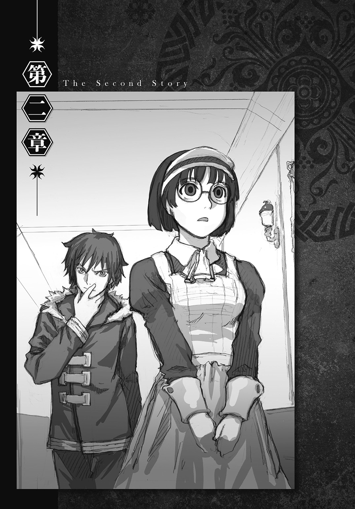
１
「ワード様、お召し換えの準備が整っているのです。御案内させていただくのです」
ストベルシア王とミシェルが退室すると、自分より年下と思われる小柄な世話係の案内で、ワードは衣裳部屋へ連れていかれることとなった。
ワード、ストベルシア王、ミシェルの三人だけの晩餐会に出席するためである。
おかっぱ頭で大きな丸眼鏡をかけた世話係は、巻尺と踏み台を巧みに操りながら、手際良くワードの採寸を済ませると、その後で人懐っこい様子を振り撒きながら言った。
「ミシェル殿下の危ないところを助けてくださり、どうもありがとうなのです」
「うん？ 勘違いしているぜ、メイドさん」
ワードはおやと思いながら世話係に告げる。
「俺が助けたのはお姫様じゃなくて、お友達の方だぜ？」
「お隠しにならなくても結構なのです。殿下から話は聞いているのです」
世話係は笑いながらそう言うと、ワードに礼服を手渡す。
「何だ、そういうことか」
「どうやってミシェル殿下をお救いしてくださったのですか？」
「ああ、それはな――――」
ワードは市場での騒動を簡単に説明する。この他愛ない雑談が、後に自分を窮地から救うことに役立つとは、この時のワードは微塵も思っていなかった。
身だしなみを終えたワードは、小綺麗な姿になって衣裳部屋から出る。
「あれ？」
世話係が開けてくれた扉を出ると、廊下でクロードが待ち構えていた。
「今度は何だ、長官？」
「晩餐会の席には、私も同席することにした」
クロードは相変わらず簡潔に答える。
「ああ、なるほど。俺が国王陛下やお姫様に戦闘論者の力を使わないか見張るってわけか」
その言葉には何も答えずに、クロードは無言で歩きだす。
「いいか。国王陛下や王女殿下からこの国に来た目的を尋ねられたら、観光で来たと答えろ」
しばらくして世話係の姿が見えなくなると、クロードは不意に言葉を発する。
「お前が晩餐に招かれたのは、飽くまでも王女殿下の御友人をお助けしたからだ。お前の『本来の用件』とは無関係ということを忘れるな」
「王妃陛下に会いに来たことは、黙っておかないといけないんだな？」
「そうだ。ミシェル殿下がお前のことを陛下にお伝えしなければ、この招待は実現しなかった。殿下の御厚意で得た席に乗じて、余計なことを話すのはやめろ」
「どうして王妃陛下の話が『余計なこと』になるんだよ？」
ワードは言い返す。
「あんたは王妃陛下のことになるとやけに口が重くなるが、いったい何を隠しているんだ？」
「説明する必要はない」
それ以上は何の回答も得られなかったので、ワードは落ち着かない気持ちのままで晩餐会の会場に到着する。ワードが席に着くと、クロードはその席の真後ろに直立した。
「ところでワード様は、これまでどういった国々を回っていらしたのですか？」
食後の歓談になると、ミシェルの無邪気な声がワードに向けられた。
「主に大陸の中部から南西部の国々を転々としてきました。キャラバンと一時的に契約して、砂漠の横断に参加したりすることが多かったですよ、王女殿下」
「まあ。戦闘論者というお仕事は、そういった方々にも需要があるのですね」
「ほう、ミシェル。そなた、バトロジカの存在を知っておったのか？」
どこか白々しさの漂う二人の会話に、ストベルシア王が加わる。
「も、もちろんですわ。いくら世事に疎い私だって、それくらいのことは存じておりますのよ」
「そうかそうか、ミシェルは博識だな」
ストベルシア王がくつろいだ表情を娘に向けると、ワードは心の中で呟く。
（へえ、国王陛下も娘の前じゃ子煩悩な父親か......王政が上手く機能するかどうかを左右するのは、何よりも頂点に立つ人間の資質だけど、この王様なら上手くいくはずだ......）
出会ってから一時間に満たないにもかかわらず、この国の王に対し、ワードは既に畏敬と親しみを感じていた。
「ワード殿、私からも一つ良いかな？」
「何でしょう、陛下？」
「そなたはいろいろな国々を見てきたと言われたが、それらの国々と比べて、我が国はどう映っておる？ 忌憚のない意見を聞かせていただきたい」
（おっ、いい機会だ）
そう思ったワードは、最初にこの国が他の国と比べて治安のいいこと、自然条件のいいこと等をひとしきり褒めちぎると、その後でふと思いついたかのように、聞きたかったことを切り出す。
「それと、この国は戦闘論者に対しても十分な対策を取っていると感じました」
「ほう」
「先ほど取り調べを受けていて思ったのですが、ストベルシア王国は戦闘論者協会に、ガイドラインによる指導を依頼したことがあるのでしょうか？」
「ふむ......」
ストベルシア王は顎に手を軽く当てる。
「ここ数年、大陸中部の紛争が激化傾向にあったため、傭兵の募集は多めにかけておったが、そのような指導まで頼んだことはなかったはずだ......間違いないか、クロード？」
「はい、おっしゃる通りです陛下。そのような指導を依頼したことはございません」
ワードの背後で、クロードが直立のまま王に返答する。
「だそうだ、ワード殿。クロードは若いが、この国の警務省長官を務めておる。彼がそう言うのであれば間違いない」
「そうですか。すると対策が優れていたのは、こちらの長官殿が優秀だからでしょうね」
もちろんそれだけではないことは分かり切っていた。だが、ワードは深くは追及せずに、早々に話題を切り上げる。
（ああ、怖え怖え......）
ガイドラインのことを質問したと同時に、背後から物凄い殺気を浴びせられたためである。
九時半を過ぎたあたりで、晩餐会が無難にお開きになると、ワードは賓客用の客室に足を踏み入れる。城に一泊することとなったのだ。
「ふう。さてっ......と、どうしようかな？」
元の服に着替え直して上等のベッドに横になると、ワードは今後の予定を思案する。
『朝になったらおとなしく城を出ろ。『土産』を渡すよう、門番に言付けておく』
会場を出る直前、クロードに耳打ちされた文句が頭をよぎる。
（まさか口止め料まで用意してくれるとはね......）
本来であれば地下牢で一晩を明かす予定だったのだから、現在の待遇は破格の扱いである。
しかし、ワードの胸中は不満で満ちていた。この国に来てから感じた複数の疑問が、いずれも解決していなかったからである。
（協会に指導は依頼していない、か。ますます分からなくなってきたな......かと言って、外国人の俺がこれ以上突っ込んだことを聞くわけにはいかねえよな。どっかの国の密偵か何かだと疑われたら面倒だ......）
ワードは漫然と考えを巡らす。
（向こうが俺に金まで渡して黙っていろって言うんだから、よっぽどの事情があることは間違いない......だったら、王妃陛下との謁見は諦めて、一旦出直す方が利口か......）
そう決断した時だった。客室の扉がコンコンとノックされた。
（うん？）
誰だろうと思うと同時に、危険な国々を渡り歩いた習慣が「刺客」の二文字を突きつける。
（......いや、それはねえな。今の俺は賓客で、ここは城の中だ。俺に何かあれば国の名誉に関わるからな。メイドさんが飲み物でも持ってきてくれたのかな？）
ワードはそう思い直しながら扉を開ける。だが予想に反し、来室者は世話係ではなかった。
「来てあげたわよ」
扉の前にいたのはミシェルだった。
２
「お、王女殿下！」
ワードは呆気にとられて少女を見つめる。
「......あんたからそう呼ばれると、やっぱり気持ち悪いわね。私のことはお姫様って呼びなさい」
ミシェルは客室に入ると、素早く扉を閉める。
「こんな時間に何しに来た？」
「話し相手になってあげに来たのよ」
そう答えながら、ミシェルは客室に備えつけてあるソファにちょこんと腰を下ろす。
「ねえよ、別に話すことなんか......それに、何でその格好なんだよ？」
ミシェルは晩餐会の時のドレス姿ではなく、市場で会った時と同じ服装をしていた。例のフードがついた肩掛けも、きちんと身につけている。
「ああ、これ？ 一番動きやすい服だから、部屋を抜け出す時はいつもこの格好なのよ」
「いつも？ 一人で城下町をうろついたのは、今日が初めてじゃなかったのか？」
「当たり前じゃない」
ミシェルはけろりと答える。
「一度や二度抜け出したくらいで、市場の細い路地がどうなっているかまで分かるわけないでしょ？」
「お姫様が寝室を抜け出したのがばれたら、大変なことにならねえのか？」
「すぐに戻れば大丈夫よ」
「つまり大変なことになるんだな......だったらすぐに帰れ」
「帰れ？ あんた、お忍びで訪ねてきたお姫様に何て口きいているのよ、ばちが当たるわよ？」
（こりゃあ話を聞かない間は、帰ってくれそうにねえな......）
少女が全く引き下がるつもりがないのが分かると、ワードは追い返すのを諦めて、用件を聞くことにする。
「――で？ 俺にどんな話があって来たんだ？」
「うーん......話というよりもお願いごとね」
「どんなお願いだ？」
「あんた、私と契約しなさい」
「......何だって？」
ワードは自分の耳を疑う。
「いないんでしょ、契約者？ だったら私と契約して、私の戦闘論者になりなさい」
「......あのな、お姫様。戦闘論者との契約は、揉め事が絶えない環境にいる奴のすることだ」
ソファに腰を下ろすと、ワードはミシェルと向かい合う。
「この国は大陸中部の国々と違って治安はいいし、どういうわけか知らねえが戦闘論者の対策もきっちり取られている。俺と契約する必要がどこにある？ 気まぐれでものを言ってんじゃ......」
「気まぐれで言っているんじゃないわ！」
ミシェルは強い口調で言うと、膝の上で両手をギュッと握る。
「私には......あんたの力がどうしても必要なの」
「戦闘論者の力がか？」
「そうよ。あんたは、自分の言葉で納得させた相手を意のままにできるのよね？」
「ああ」
「だったらその力で、あんたが説得した相手に、真実だけを語らせることもできるわよね？」
「――――確かにそれは可能だ」
ワードは少し間を置いてから答える。
「厳密には、相手がどれくらいその真実を語りたくないかも関係するんだが、『真実の暴露』は規模の小さい命令内容だ。だから相手の説得に成功さえすれば、まず確実に真実を喋らせることができる――――けどな」
ここでワードは注釈を入れる。
「俺が明らかにできるのは、その相手が真実だと思っている内容だ。戦闘論者の力で語らせた『真実』が、必ずしも実際に起こった『事実』と一致しているとは限らないぜ？」
これは例えば、「リンゴは野菜である」と心の底から信じている相手に対し、ワードが戦闘論者の力を用いて『真実』を言わせたとしても、その相手が「リンゴは果物である」という『事実』を口にするわけではないことを意味している。
「構わないわ。私の聞きたい内容に対して、意図的に噓を告げることができなければいいの」
ミシェルは即答する。その言い方には、強い意志が込められていた。
「いったい、何を企んでいるんだ？」
ワードが尋ねると、ミシェルは真剣な口調で答える。
「真相を......明らかにしたいのよ」
「何の真相だ？」
「私のお母様がどうして亡くなったのか......それについての真相よ」
「王妃陛下が亡くなった？」
ワードは愕然とする。
「ちょっ......ちょっと待て。それっていつの話だ、ここ数日の間に起きたことか？」
「もう三年も前になるわ」
「まさか！」
思わずワードは大声を出す。
「本当よ。発表を差し控えているから、あんたが知らないのは当然よ。友好国の方々にも、現在お母様は病床にあるため、王妃の公務をこなせないでいると伝えてあるわ」
「三年間も王妃陛下の崩御を公表していないだって？ どうしてだよ？」
少女は静かに首を振る。
「分からない......だから知りたいのよ、どうしてお母様の死を隠蔽しているのかを――見て」
ミシェルは首に巻いているロケットペンダントを外すと、中を開いてワードに手渡す。
ロケットには、穏やかな笑みを浮かべた貴婦人の写真が入れられていた。
「お母様――ストベルシア王国王妃、メリッサ＝モンゴメリ＝ストベルシアよ。最後にお顔を拝見したのは、両手に白い手袋をして、たくさんのお花でいっぱいの棺の中だったわ......」
（そうか......）
ミシェルが遠い目をしながら告げると、ワードはハッとする。
（だからクロード長官は、王妃陛下のことになると口が重かったのか......）
それに気づくと、ワードは詳しい事情を知るために情報収集を開始する。
「死因は聞かされていないのか？」
「持病の悪化としか......確かにお母様は、昔から御身体の具合が良くはなかったわ。だけど病気で亡くなったのなら、そう公表しないのはどうして？」
「医者は何て言っているんだ？ 持病があったのなら、専属の御殿医がいるはずだろ？」
ミシェルは再び首を振る。
「お母様を診てくださっていたお医者様なら、ストベルシアにはもういないわ。お母様が亡くなるとすぐに、お父様が暇をお与えになったの」
「持病の悪化を見抜けなかった責任をとらされたってことか......？」
「素直に考えるとそうね。でもそうじゃなくて、何か他に隠された事情がある気がするの」
「どうしてそう思うんだ？」
「交代で来られたお医者様に、お母様の診療記録を見たいと頼んだ時に言われたのよ。記録は、前の御殿医が全部破棄していましたって」
「なるほどな......それなら本当に持病の悪化で亡くなったのか疑いたくもなるな」
「これで分かったでしょ？ 私に力を貸しなさい」
言い方こそ命令口調ではあったが、少女の表情には哀願が混じっていた。
「真相を知っている人物に心当たりはあるのか？」
「国王であるお父様、それに十二人の国務大臣だったら、何か知っているはずよ」
ワードがロケットを返しながら尋ねると、ミシェルは受け取りながら答える。
「ふうん、そうか」
「引き受けてくれるわね？」
聞かれてワードはきっぱりと答える。
「いいや、断る」
「どうしてよ！」
「理由がないのが理由だ」
甲高い声を上げる少女に、ワードはゆっくりとした口調で説明する。
「俺にはお姫様の手助けをするための差し迫った理由がない。ただでさえ嫌われ者な俺たち戦闘論者はな、この世の誰よりも『賢く』生きなきゃいけねえんだ。国王陛下や大臣みたいなお偉方を相手に、戦闘論者の力を使うなんて危険な振る舞いはできねえな」
「力を使った責任は、契約者である私が取るはずでしょ？」
「ルールの上ではそうでも、周りの連中はそう受け取っちゃくれねえよ。俺がお姫様を上手く騙して契約させたと思うに決まっている。それに知っているのか？ 戦闘論者と契約するのに必要な契約料の額がいくらなのか」
「もちろん報酬は支払うわよ。それ以外にも、何か欲しいものがあれば言ってちょうだい」
「ダメだな」
冷たい調子でワードは答える。
「それは国王陛下の持ち物だろ？ お姫様だけの権限で渡せる代物じゃねえよな？」
「そ、それは......そう......だけど......」
たじろぐミシェルに、ワードはさらに言った。
「それとな、国王陛下や国務大臣たちが真相を隠したのは、きっと『今はまだ聞かせるべきではない』と判断したからだ。『その時』が来れば、黙っていても教えてくれるはずだぜ？」
「私は『その時』じゃなく、『今すぐ』に真相が知りたいのよ！」
「だったら戦闘論者の力なんて邪道な手段に頼らずに、陛下や大臣の気持ちが変わるまで、自分の思いを訴え続けりゃいいのさ」
ワードは極めつけの言葉をミシェルに告げる。
「説得した相手に真実を語らせる力なら、お姫様にだって備わっている」
「............っ！」
何も言い返せずに俯くと、ミシェルは悔しそうに黙り込む。
「納得したか？」
「――――一つ聞かせて」
俯いたままで、ミシェルがぽつりと発言する。
「どうしてお父様や大臣たちは、私に真相を話すべきではないって考えたのかしら？」
「ああ、それはな」
何気ない口調でワードは返答する。
「お姫様が今思っている通りの理由だよ」
それを聞くと、ミシェルは肩を震わせる。
「そう......やっぱりお父様たちにしてみれば、私は世間知らずの子供でしかないのね......」
少女はソファに片手をつきながら、がっくりとうなだれる。
「自分では自分のことをどう思っているんだ？」
「聞かなくても分かっているでしょ......私はまだまだ子供よ」
ミシェルの目に涙が浮かぶ。
「それくらい、十分に理解しているわよ......でも......それでも......私......お父様の役に立ちたいのよ......お母様がもしも謎の死を遂げたのなら、私がその原因を突き止めて、お父様の憂いを取り除いてあげたいのよ......」
言い終えると同時に、両目から涙が溢れる。
「でも......そうしたくても......やっぱり私は甘やかされて育ったお姫様で......それが私に対する周りの評価で......自分でもそれは分かっていて......それが......それがたまらなく嫌で......」
「焦ることはねえよ」
ワードは静かに言った。
「一人前になるっていうのは、時間のかかるイベントだ」
「利いたふうなこと言ってんじゃないわよ」
「......悪い。今のは失言だった」
「プッ、馬鹿ね......本気に受け取らないでよ」
ワードの謝罪に吹き出すと、少女の胸に温かいものが流れ込んだ。
「はあ......確かにちょっと焦っていたみたいね......」
しばらくして気持ちが落ち着くと、ミシェルはハンカチで涙を拭く。彼女がワードの客室を訪れてから、一時間近くが経過していた。
「何だかすっきりしたわ。一人前になった私を認めさせて真実を語らせる......その通りだわ」
迷いのふっきれた表情で言うと、ミシェルはソファから腰を上げて扉に向かう。
「ああ、それが陛下や大臣たちを『納得』させるための最短ルートだと思うぜ」
そう言うとワードも立ち上がり、扉の前までミシェルを送る。
その時だった。二人の接近に合わせたかのように、扉から再びノックの音が響く。
「え？」
ワードとミシェルは互いに顔を見合わせたまま数秒停止するが、次の瞬間、ワードが慌ててベッドを指差すと、ミシェルはベッドの脚と床の隙間に飛び込む。
「ちょっ......ちょっと待ってくれ、今開ける」
扉からミシェルの姿が見えないことを確認してから、ワードはノブを回す。
「ワード様。お休み中のところ、失礼するのです」
現れたのは見覚えのある世話係だった。晩餐会の前に衣裳部屋でワードの着替えを手伝った、おかっぱ頭で丸眼鏡の少女である。
「いや、別に構わねえぜ。何か用事かい？」
すると世話係は言った。
「ミシェル殿下がお呼びなのです。私と一緒に来ていただきたいのです」
３
「............何だって？」
「ミシェル殿下がワード様をお呼びなのです。応接室まで御案内させていただくのです」
ワードが尋ね返すと、世話係は同じ口調で淡々と告げる。
「――分かった。準備をするから、少し待っていてくれ」
平静を装って返答すると、ワードは一旦扉を閉める。
「聞こえていたか？」
「ええ......でも私、あんたを呼ぶよう頼んでなんかいないわよ」
ベッドに声をかけると、、脚の間からミシェルが不思議そうな表情を見せる。
「今のメイドさんが誰だったか分かるか？」
「あの話し方はハンナね。主に私の身の回りの世話をしてもらっている子よ」
「お姫様が時々部屋を抜け出していることを、彼女は知っているのか？」
「知っているわ。部屋にいないのがばれそうになると、適当にごまかしてもらっているの」
「するとさっきのは、ここにお姫様がいることを知った上での発言だったのか？」
「いいえ、今回だけはあの子にも内緒よ。男性の部屋に独りで行くなんて言われたら、いくらおとなしいハンナでも止めないはずないもの」
「分かった」
状況を把握し終えると、ワードは自分が次にどう行動すべきか考察に入る。
（要するにハンナちゃんは、噓をついてまで、俺を部屋から連れ出そうとしているのか......何が目的かは知らねえが、本来なら乗るべきじゃねえ誘いだ。悪い結果になるのは目に見えている......が、今の俺には、それよりも回避しないといけねえ最悪の結果がある......）
考えながら、ワードはちらりとミシェルに目をやる。
（そうだ、何より最悪なのは、寝室から姿を消したお姫様がここにいるのがばれることだ。戦闘論者の力で連れ出したなんて疑われたら、俺にはそうじゃないことを証明する術がない......お姫様が自分の意志で来たと言ったところで、力を使ってそう言わせたと思われるだけだ......）
続いて、ワードは別の観点からも考察する。
（それに、俺の部屋に来た理由をお姫様が話すのもまずい......それはつまり、「ストベルシアが王妃陛下の崩御を隠蔽している」っていう最重要国家機密を俺が知ったことを明かすことだからだ......だからまず必要な作業は、お姫様をここから脱出させて寝室に返すこと......）
ワードの視線がミシェルから扉へ移る。
（このままハンナちゃんに扉の前にいられちまうと、お姫様を戻せない......だが、俺が誘いに乗れば状況は打開できる......たとえ罠だとしても、ハンナちゃんと二人でいる間は危害を加えられることはねえだろうし、彼女が俺をやばそうな所に誘導しようとした時は、適当に難癖をつけて引き返させれば、最悪の事態に陥ることだけはぎりぎり回避できるはず......）
ワードは結論を出す。
（お姫様を寝室に返すことを最優先に動く――それが現時点での最善策だ！）
そう決めると、ワードはミシェルに言った。
「よし、俺はなるべく時間を稼ぎながら応接室に向かう。だからハンナちゃんが俺を案内している隙に、お姫様は急いで寝室に戻っておいてくれ」
それに同意したミシェルが再びベッドの下に潜んだのを確認すると、ワードは扉を開ける。
「メイドさん、聞いてもいいか？」
ハンナの後をついて歩いていたワードは、不思議に思って尋ねた。
「応接室っていうのは、よっぽど奥まった所にあるんだな？」
客室を出てから、かれこれもう五分以上は歩かされているのだが、目的地に辿り着く気配はまるでない。
（思った通り罠だった？ いや、でもそれにしては......）
もしも罠であれば、自分は城の「外」へ誘導される――そう思っていたのに、ハンナはむしろ城の「奥」へと案内している。そのため、ワードは結論を下しかねていた。
「申し訳ありませんなのです、ワード様。もう少しで到着しますのです」
前を向いたまま答えるハンナ。その様子を眺めていると、ワードに新たな疑問が浮かぶ。
（初めて会った時とは感じが違うな......衣裳部屋だと、もっと愛想が良かったんだがな......）
大きな謎を二つ抱えながらワードが角を曲がると、上の階に向かう階段が姿を見せる。その手擦りには、ストベルシア王家の紋章が刻まれていた。
（あれ？ ひょっとしてこの階段......いや、まさかな......）
紋章を見て浮かんだ「ある考え」。それを否定しながら、ワードはハンナに従って階段を昇る。
「待て！ ちょっと待ってくれ、メイドさん！」
しかし、昇った先の絨毯にも紋章が描かれていることに気づくと、ワードは急いで声をかける。
「本当にこっちでいいのか？ ストベルシアでは紋章が描かれている階段や通路は、王族の人間が私室として利用している場所への経路だって文献で読んだんだが......」
ワードが三つめの謎を手にした時だった。
「お待たせしたのです、ワード様」
ハンナは立ち止まると、目の前にある扉を開ける。
「――おいおい」
中の様子が目に入ると、ワードは自分の考えが正しかったことを確信する。
室内の照明はランプが一つきりだったが、中央に備えつけられているのが天蓋のついた可愛らしいベッドであることは疑いようがない。そして何より、ベッドのすぐ隣で床にペタリと座り込んでいるミシェルの後ろ姿。ワードが連れてこられたのは、どう考えても王女の寝室だった。
「......どういうことだ、メイドさん？ 案内先は応接室だったはずだぜ？」
ワードは警戒しながら、振り向かせようとしてハンナの肩へ手を置く。すると次の瞬間、ハンナはワードの手を摑むと、そのまま力任せにワードを寝室へ引っ張り込む。
「早くお入りくださいなのです、ワード様」
「どわっ！」
頭から寝室に飛び込んだワードは、床に思い切り額をぶつける。
「ってて.........こりゃまた随分と上等なおもてなしだな」
「え？ あ、あれ......？ あんた......どうして......」
ここで騒ぎに気づき、ミシェルがかすれた声を出しながらワードに振り向く。ミシェルはフードを身につけた格好のままだった。
「いや、俺にも何が何だか............どうした、お姫様？」
ワードは少女の異変に気づく。
寝室に侵入されたのを驚いたにしては、ミシェルの顔はあまりにも青ざめていた。ずっと座り込んだままだったのも、どうやら腰が抜けていたためらしい。
「あ......あ、あれ......」
「何？ ベッドがどうか............――――――なっ！」
ミシェルの指差す方を見た途端、ワードは言葉を失うと同時に、異変が他にも生じていたことを思い知る。
「私......ついさっき戻ってきて......急いで着替えようと思って明るくしたら......」
暗がりに慣れた目でよく見ると、ミシェルのベッドはズタズタに切り裂かれていた。
シーツや上等の掛け布団は言うまでもなく、枕やベッド本体、布団の上に畳んで置かれていたと思しき寝間着やナイトキャップ――ありとあらゆるものが、鋭利な刃物で何度も切りつけられており、高級な寝具は無残な姿に変わり果てていた。
「こりゃひでえな。誰がこんなことを......」
ワードが両目をベッドに釘付けにしながら呟く。すると、背後でカチャリと金属音が響いた。
その音に反応して振り向いたワードは、すぐに表情を硬くする。
「どういうことか説明してくれないか？」
金属音の正体は、ハンナが扉に鍵を掛けた音だった。
「そんな物を隠し持っていた理由も含めてだ」
そして無表情でこちらを向く彼女の手には、先の尖った短剣が握られていた。
「寝室の惨状に気づいて俺に助けを求めた――――なんて言い訳は、もちろんなしだぜ？」
張り詰めた空気が室内を満たし、相手を敵だと認めたワードが襲撃に備えて身構える。
それに呼応するかのように、ハンナは大きく息を吸い込む。
その直後だった。世話係は、ワードとミシェルが全く予想だにしなかった行動に出た。
「きゃああああああああああああああああああああああああああああああああああ！」
ハンナは絹を裂くような悲鳴を上げてから短剣を両手で握り直すと、その切っ先を何と、自分の喉元に突きつけたのだ。
「ハン......ナ......？」
ミシェルの口から乾いた声が漏れる。
少女は気づいた。そのままハンナが前のめりに倒れ込めば、短剣が彼女の喉を貫くことに。それが非力な女性が短剣を用いて自らの命を絶つための、最も確実な方法であることに。
「え？ ちょっ......あなた、何を......？」
気づいてしまったことが災いし、混乱したミシェルは何も考えられなくなってしまう。
（悲鳴を上げたのは、おそらく城内の人間をここに集めるためか......）
一方、そんなミシェルとは対照的に、ワードは自らの頭脳を高速で回転させる。
（寝室に俺とお姫様を閉じ込めてから、人を集めた後で自ら命を絶つ......それがハンナちゃんの企み......だが、何のために？ メイドを殺害し、王女を襲った犯人に俺を仕立てるため？）
ワードはその思いつきをすぐに捨て去る。
（そんな馬鹿な......自分の命を引き換えにしてまで、俺を陥れる理由がどこにある？ それにお姫様の証言があれば、俺の無実は証明される。戦闘論者の力で都合のいい証言をさせたと誤解されるのを見越しているのか？ いや、まさか......その程度の誤解が解かれないまま、人の死んだ事件が片づくわけがないことくらい、ハンナちゃんだって分かっているはず............いや、待てよ？）
ここまで考えを進めた時だった。
（ちょっと待て......俺がお姫様に無実を証言してもらえるのは、お姫様が口をきける状態だから......つまり生きているからだ。それじゃあもしも、口をきけない状態だったとしたら......お姫様が寝室を抜け出していなかったとしたら......）
その着想が、ワードを数秒で真相へ導くこととなる。
（そうか......ハンナちゃんの行動は、彼女の意志によるものじゃない！）
ワードがそう確信した時だった。
ハンナは鋭い剣先を喉に突きつけたまま、ゆっくりと顔から倒れ込んだ。
４
ドスッという鈍い音を立てて、小柄な世話係は全身を床に叩きつける。
「ハ......ンナ......ああ......あ............」
頭のてっぺんをこちらに向けたままピクリとも動かないハンナを見て、ミシェルはあまりのショックに悲鳴を上げることすらできずにいた。
「落ち着け！ 落ち着くんだ、お姫様」
がくがくと震えているミシェルの手を取ると、ワードは立ち上がらせようと試みる。
「ハ......ハン......ハン......ナが......ハンナ......が......」
ミシェルは何とかよろよろと立ち上がるが、唇が痙攣していてまともに話せない。
「ハンナちゃんなら心配しなくていい、ほら見ろ」
ミシェルが動けることが分かると、ワードは続いてハンナを抱き上げて喉元を見せる。気を失ってはいたものの、世話係の喉には一つの刺し傷もついていなかった。
「剣ならあそこだ」
その言葉通り、短剣はハンナの倒れた場所から少し離れた位置に突き刺さっていた。
「そっか......倒れる直前に剣を放したのね」
ハンナの無事が分かると、蒼白だったミシェルに幾分か血の気が戻る。
「違う。放したんじゃない、俺が放させたのさ」
「あんたが？」
聞き返されると、ワードはハンナをベッドに横たえながら言った。
「ああ、実はハンナちゃんとは衣裳部屋で一度会っていてな。その時に、俺がどうやってお姫様を助けたかを話してあったのさ。オッサンを追い詰めたことや追手の兵隊を振り切ったことを説明すると、ハンナちゃんは何回も楽しそうに納得してくれた。そのおかげで剣を放させることができたんだ、戦闘論者の力を使ってな」
「ああ、なるほどね」
ミシェルの顔がぱっと明るくなる。
「流浪であることを明かさないままハンナちゃんに力を使ったことについても、今回はお咎めなしだ。バトロジカ・ルール第七条に、『流浪の戦闘論者は、人命救助及びその他の人道的理由に基づいて妥当であると判断される場合に限り、己の正体を明かさずに己の力を行使しても罪には問われない』って明記されているからな」
「思ったよりやるじゃないの、あんた。見直したわ」
「いいや、喜ぶのはまだ早いぜ」
少女の賞賛に、ワードは顔をしかめて答える。
「ハンナちゃんの悲鳴を聞きつけて、これから城の連中が山ほどやってくる......そいつらをどうにかやり過ごして、ここから抜け出す必要があるからな」
「それだったら心配しなくても、私がみんなに説明してあげるわよ」
「いいのか、見たままを話しちまっても？」
「どういう意味......あっ......」
ミシェルは手を口に当ててハンナを見る。
「そういうことさ」
床に突き刺さっていた短剣を引き抜き、その刃先を見つめながらワードは言った。
「ベッドを切り裂いたのはハンナちゃんだ。短剣を忍ばせてお姫様の寝室にいたとなれば、彼女は良くて終身刑、最悪の場合は、せっかく助けた生命がパアになる」
「だっ......だったらできるだけ軽い罪で済むよう、私からお父様に口添えするから......」
「いや、ハンナちゃんは全くの無罪だ。『計画』に利用されただけだからな」
ワードが短剣を懐にしまいながら、そう答えた時だった。
「王女殿下！ 何事ですか！」
兵士の太い声がこだまし、扉のノブを激しく回す音がそれに続く。
「そらきた」
「『計画』......？ ハンナが何の『計画』に利用されたっていうのよ？」
ワードは素早く告げる。
「お姫様を暗殺して、俺をその犯人に仕立て上げる計画さ」
それから五分後。扉が叩き壊され、ミシェルの寝室に大勢の人間が押し寄せた。
「消えた？」
執務室に戻ったマフィニが、怪訝な顔でイグリを見つめる。
職務の性質上、マフィニは他の大臣よりも城を空けることが多く、そのため彼が異常を耳にしたのは、寝室の扉が壊されてから数時間後のこととなった。
「はい。王女殿下の寝室から悲鳴が聞こえたので衛兵らが駆けつけたところ、寝室の扉には鍵が掛けられており、やむなく扉を破壊して入ってみると、中にいたのは気を失ったメイドが独りきりだったとのことです」
「そのメイドは何と言っておる？」
「何も覚えていないとだけ。悲鳴を上げたことすら覚えておりませんでした。医師の診立てでは、どうやら強いショックのために、気を失う直前の記憶が抜け落ちているのだろうと」
「バトロジカの姿が消えていたのが判明したのはいつじゃ？」
「殿下の消失が判明したのとほぼ同じ時です」
「それは素早いことじゃな」
「クロード長官がすぐに確認したためです。バトロジカの客室はもぬけの空だったそうです」
イグリは続けて報告する。
「そして寝室の壁には、殿下の筆跡による『伝言』が残されていたそうです」
「伝言？ 何と書いてあったのじゃ？」
「『心配しないでください、私は必ず無事に戻ります』と。インクの乾き具合から考えて、衛兵らが寝室に飛び込む直前に書かれたものとのことです。無論、殿下と同時に行方をくらませたバトロジカに、そう書くよう『操られた』可能性がありますので、探索は現在も続けられています」
「そうか......それでイグリ、これからどうするつもりじゃ？」
マフィニは鼻をフンと鳴らすと、「本題」に入る。
「当初の予定とは、かなり異なった事態になっておるようじゃが？」
「一度実行に移した以上、計画はこのまま続行いたします」
「このまま続けても問題はないのじゃな？」
「ございません。王女殿下には、確実にこの世から消えていただきます」
無表情のままでイグリが返答する。
「そもそも、どうしてメイドはしくじったのじゃ？」
「王女殿下が寝室を抜け出していたためと思われます。あのメイドは殿下と最も親しかったので、よもや彼女にも無断で寝室を空けるとは、全く思いもよりませんでした」
イグリは不機嫌な表情でそう言うが、すぐに顔を戻す。
「どうして寝室を抜け出していたのかは分かっておるのか？」
「バトロジカの客室に向かったためでしょう。そう考えれば今夜に限り、どうしてメイドに何も告げずに寝室を抜け出したのか、説明がつきますので」
「そういうことか......全く、あの年頃の娘は、我々が思いもよらん行動を取りよるな」
溜息を吐くマフィニに、イグリは説明を続ける。
「殿下とバトロジカがどのような話をしたのか詳細までは分かりかねますが、おそらく現在、二人は行動を共にしているはずでございます」
「ほう、どうしてそう言えるのじゃ？」
「メイドには『ベッドを切り裂け』、『バトロジカを寝室に誘導せよ』、『鍵を掛けよ』、『悲鳴を上げよ』、そして『短剣で自害せよ』という五つの命令を、順番に実行するよう力をかけておきました。それにもかかわらずメイドが無事でいるのは、最後の命令が妨害されたからです。現在のストベルシアでそのような真似ができる人間は、バトロジカ以外にはおりません。バトロジカが己の力を行使して、メイドに新たな命令を実行させたのです」
イグリは自分の推理を淡々と披露する。
「そして新たに命令が下されたタイミングは、『悲鳴を上げよ』という命令が実行されてから、『短剣で自害せよ』という命令を実行し終えるまでの、わずか十数秒の間――それはつまり、衛兵らが寝室に駆けつけた時、確かにバトロジカは、施錠された室内にいたということです。また、本人の筆跡による伝言が残されていたことから、殿下が室内にいたことも明白です。すると、二人は扉を壊すのに要した時間――わずか五分の間に、同時に姿を消したことになります」
「消えたのが同時だからといって、二人が今も一緒におるとは限らんじゃろう？」
「いえ、一緒にいるはずです。なぜなら、捜索が開始されてから数時間が経過した今になっても、二人の行方が判明していないからです」
「分からんな。二人とも行方不明であることが、どうして一緒におる理由になるのじゃ？」
「もしも殿下が現在お独りなのであれば、保護を求めて我々の前に姿を見せるはずです。行方をくらましておく必要がないにもかかわらず、殿下が姿をお見せにならない理由として考えられるのは二つ。バトロジカの逃亡を手伝わされているからか、あるいは余計な入れ知恵をされて、姿を現さぬよう説得されたからです」
「なるほど......どちらの理由にしても、殿下はバトロジカと一緒におるというわけじゃな」
マフィニは大きく頷くと、続けて言った。
「しかしイグリ、こうは考えられぬか？ 今になっても姿を見せんのは、殿下がバトロジカによって既に『始末』されており、もうこの世にはいないためではないか......とな」
それはマフィニだけでなく、現在城を捜索中の誰もが抱いている『最悪の可能性』だった。
「それはございません、マフィニ様」
だが、イグリはその可能性をあっさりと否定する。
「今の状況下で、バトロジカが殿下を始末する必然性は全くございません。また、たとえ殺害する必要が生じたとしても、『犯人が自分でしかあり得ない状況』で殺害するような愚行は決していたしません。それは、血塗られた歴史の再来に繫がりますので」
「そうか......まあお主がそう言うのであれば、そうなのであろうな」
「バトロジカは世界で最も嫌悪される存在でございます。ですから、この世界の誰よりも『賢く』生きねばならないのです」
「ということは、殿下は余計な入れ知恵をされておるのか......面倒なことになったのう」
「いえいえマフィニ様、御心配には及びません」
表情を曇らせたマフィニに、イグリは宥めるように告げる。
「次にバトロジカがどう動くかは、既に見当がついておりますので」
イグリはそう言うと、黒い手袋を嵌めた左手を軽く動かす。
彼が人前でその手袋を外したことは、この国に来てから一度もない。
５
ミシェルの捜索が開始されてから五時間が経過した。
夜が更けて濃さを増した暗闇の中を、たくさんのランプの灯りが忙しなく飛び交っている。
「......ったく、いつまでこんなことしねえといけねえんだ？」
飛び交う灯りの一つを手にしたアドマンは、欠伸を嚙み殺しながら小声で呟く。
「手掛かりになるような物を探せっつってもよぉ......一体何を見つけりゃいいんだか......」
そんなふうに愚痴をこぼし続けていると、突然アドマンの背後から声がかかる。
「御苦労様です、アドマン隊長」
振り向くと目の前にいたのは、彼が最も苦手とする相手だった。
「こ、これはイグリ秘書官殿......なぜこのような所に......？」
アドマンの背中を緊張が走る。
「ええ、実はあなたにお渡ししたい物がありましてねえ」
イグリが懐からオレンジ大の球体を取り出すと、アドマンはそれを恐る恐る受け取る。
「な、何ですか、これは......？」
「狼煙です。もしも隊長が王女殿下を発見されましたら、球についているこのボタンを押していただきたいのです。これを押すと、球の中に封じ込めてある煙が空に上がる仕掛けになっています。それを見れば、私は殿下が見つかったことが分かります」
「し、しかし、このような物をくださっても、果たして使う機会があるかどうか......」
「御自分を過小評価するものではありません」
イグリはアドマンの両目を覗き込むように見つめる。
「あなたなら、きっと殿下を見つけ出すことができる――――そう思ったからこそ、私はこれをお渡しするのです」
「は、はあ......分かりました。このアドマン、必ずや王女殿下を見つけて御覧に入れます」
その返事を聞くと、イグリは満足そうに頷く。
「その意気です、隊長。もしも王女殿下を見つけ出して狼煙を上げてくだされば、あなたへの貸しは半分にして差し上げましょう」
「ほ、本当ですかい？ そりゃあ、ありがたい話で......」
「ただし、よろしいですか？ ボタンを押すのは、きちんと御自分の目で王女殿下の安否を確認した時です。確認もせずに、例えば、他者からの情報を鵜呑みにしてこのボタンを押す――そのような真似は、決してなさらないでくださいね？」
「はっ！ りょっ、了解しました！」
アドマンはイグリの説明に納得する。
「それでは、私は失礼します。期待していますよ、アドマン隊長」
そう言うと、イグリは足音を一切立てずに去っていった。
（けっ。相変わらず得体の知れねえ野郎だぜ......）
イグリが見えなくなってしばらくしても、アドマンの心臓は早鐘のように脈打っていた。
（クソ......あいつに借金さえしてなけりゃ、関わり合うこともなかったのによ......）
球体を軍服の奥にしまいながら不満を漏らしていると、今度は彼のもとに部下がやってきた。
「隊長、クロード長官がお呼びです。対策本部のテントまで来てほしいとのことです」
テントにアドマンを招き入れると、クロードはすぐに言った。
「アドマン隊長。突然で悪いのだが、頼まれてほしいことがある」
「何でしょうか？」
「これはまだ口外しないでもらいたいのだが、実は王女殿下がバラク山で見つかった」
それを聞いてアドマンは思わずビクッとする。
「えっ、あっ、そ、そ......れは、良かったであります」
「それがそうとも言えんのだ、アドマン隊長」
「......と申しますと......まさか......殿下は............その......」
クロードは首を横に振る。
「いや、そうではない。生命に別状がないことは確認されている。しかし、かなりひどいケガをなさっておられて、発見場所から動かすことができないのだ」
「そ、それはお気の毒なことで......それで、私に頼みたいことというのは......？」
「今後の対応について指示を出さねばならんので、私はテントを離れることができない。だから私の代わりに、殿下の所へ必要な物資を届けにいってほしいのだ」
（こ......こりゃツイてるぜ！）
アドマンは心の中でそう言ってから、嬉しそうに敬礼する。
「了解しました。ただちに現場に向かわせていただきます！」
物資の入った鞄を受け取りテントを出ると、一人の兵士がアドマンに駆け寄る。
「隊長、現場まで案内します」
先を行く兵士の背中を追いながら、アドマンはにやけた顔になる。
（これでイグリへの借金は完済できる額になった......あいつのケチな下働きをするのも、これが最後ってわけだ）
それからしばらくして、アドマンはバラク山の麓に辿り着く。
バラク山は城の後方にそびえ立っており、ストベルシア王国における天然の城壁としての役目を果たしている山である。この山の四季折々の風景は、他国からの賓客をもてなすための絶景として頻繁に利用されていた。
そして入山してから十数分後、アドマンは簡素な山小屋へ到着する。
「王女殿下はここにおられます。早く中へ」
兵士からそう言われて、アドマンが小屋の扉を開けようとした時だった。
「悪いな、オッサン」
「あ？」
聞き覚えのある言い回しだと思うと同時に、後頭部に鈍い衝撃が走る。前のめりになったアドマンが扉に頰を押し当てた時、彼の視界は既に暗闇で覆われていた。
目を覚ますと、アドマンは両手と両足をロープで縛られ、椅子に座らされていた。
「おっ、気がついたな」
「なっ！」
声がした方を向いたアドマンは、ワードの姿を認めると最初に大声で言った。
「て、てめえ......あの時のバトロジカ！」
「また会ったな、リンゴ売りのオッサン。ほら、やっぱり砲兵隊長だったじゃねえか」
「ど、どうして、てめえがここに......」
アドマンは激しく暴れる。両足が椅子の脚に括りつけられているので、椅子が一緒になってガタガタと音を立てる。
「いるのは当たり前さ。オッサンをここまで案内したのは俺だからな」
「何？ ......そうか、俺をここに連れてきた兵士は......」
アドマンが憎々しげにワードを睨む。
「ああ、俺の変装だ。オッサンがリンゴ売りに化けていたのと一緒さ」
ワードは傍にあった椅子に、背もたれを腹側にして跨ると、アドマンと向かい合う。
「てめえ、俺をどうする気だ」
なおもアドマンが激しく暴れると、ワードは彼の両肩を軽く握る。
「そう暴れないでくれよ。俺はただ、あんたと昼間の話の続きがしたいだけさ」
「話だと......こっちはてめえと話すことなんざ......」
（げっ......！）
アドマンは威勢良く暴れ続けていたが、「あること」に気づくと動きを止める。
（しまった......今こいつから変装していたと説明されて、納得しちまった......）
「こっちは質問に答えてもらいたいだけなんだ、協力してくれないか？」
（協力してくれないか？ すっとぼけた言い方しやがって......その気になりゃ、無理矢理にでも聞き出せるってわけか......）
そう邪推したアドマンは渋々頷く。
「ありがとう。助かるよ、オッサン――いや、隊長か」
思い違いが生じていたことを知らないワードは、アドマンに心から感謝する。
「ちっ......それで何だ、質問ってのは？」
「隊長。あんたはフードの少女が、ミシェル王女の変装だって知っていたよな？」
「うっ......」
のっけから核心を衝いた質問をぶつけられ、アドマンはアタフタしながら答える。
「あ......ああ、知っていたぜ。だが別に俺だけじゃねえ、王女殿下が時々城下町にお出でなさるのを知っていた奴は、俺の他にも大勢いる」
「少し噓が混じっているな。知っている人間はいただろうけど、『大勢』じゃないはずだ。そうじゃないと、隊長がやろうとしていたことの説明がつかない」
「俺がリンゴ売りをやっていた理由が分かっているのか？」
「ああ。俺が邪魔をしなかったらどうなっていたかを考えれば、すぐに見当がついた」
アドマンが尋ねると、ワードは説明を始める。
「あのまま事が進めば、ミシェル王女はフードを脱がされて素顔を晒され、公衆の面前で大恥をかいた。つまり隊長の目的は、恥をかかせることで王女殿下の人気を下げることだった。王族の人気の下落は、王室の権威の弱体化に繫がる。この国は絶対王政だから、王室の権威が下がることはすなわち、この国の評判を下げることと等しい」
「何を言いだすかと思ったら......王女殿下が市場をうろついていたのがばれたくらいで、この国がどうこうなるわけねえだろうが」
説明を聞いたアドマンは、露骨に呆れた態度を示す。
「それはどうかな？ 醜聞は国内だけじゃなく、ストベルシア王国が外交している国々にも広まる。処理の仕方を間違えれば、そんな些細な内容が、この国の行く末に響く重大な火種になることだって、十分あり得る」
「戯言にしか聞こえねえな。それに俺は革命家じゃねえ、ストベルシアを転覆させる気なんざ、これっぽっちもねえよ」
「ああ、そうだな。隊長にそんなことをする理由はどこにもない。だから隊長の行動は、俺が今言ったことと同じことを考えた人間に命令されたからってことになる」
ワードは真面目な顔でアドマンに告げる。
「この国の王室に悪意を抱いている、どこかの誰かさんの命令でな」
６
「要するにバトロジカ。てめえは、俺が革命家の手先になっているって言いてえのか？」
「違うのか？ だったら何でリンゴを売っていたか説明してくれよ」
「店番を頼まれたから引き受けただけだ。非番の日のいい小遣い稼ぎになると思ってな」
アドマンが鼻で笑いながら答える。
「へえ、気の利いた言い訳をするじゃねえか。それじゃあ引っ掛けたのが王女殿下だったのは、単なる偶然や気まぐれだったってことか？」
「そういうこった。ちょいとからかってやったのさ。後で話のネタにもなるしよ」
「確かに酒の席でなら、上等の肴になるだろうな。だが王家の人間にしてみれば、王女殿下の赤っ恥は面白くない醜聞だ。隊長の背後にいる誰かさんはな、そんな小さな醜聞を火種としていくつも用意しておき、タイミングを見計らってまとめて一気に燃え上がらせることで、最終的に王政を崩壊させる――そんな遠大な計画を目論んでいたのさ」
「突拍子がねぇにもほどがあるぜ」
アドマンはせせら笑いながら言い返す。
「それじゃあ何か？ 今回の王女殿下の失踪も、その誰かさんとやらが一枚嚙んでいるのか？」
「いい勘しているぜ、隊長。その通りだ」
「けっ、てめえで殿下を攫っておいて何言ってやがる」
「それは違う、俺は嵌められたんだ。しかも誘拐犯どころか、暗殺者にされるところだった」
「暗殺者だあ？ 矛盾しているな、バトロジカ。計画の内容は暗殺なんて大それたものじゃなく、醜聞集めだったはずだろうが」
「言ったはずだぜ？ 誰かさんは、遠大な計画を目論んで『いた』ってな」
アドマンの反論に、ワードは静かに言葉を返す。
「俺がこの国に来たことで、計画は切り替わったのさ。『王女殿下を暗殺してその罪を俺になすりつける』っていう、大規模かつ大胆な計画にな」
ワードは後ろを向くと、隣の部屋と繫がっている扉に声をかける。
「入ってくれ」
その呼びかけで扉が開くと、アドマンは心臓を鷲摑みにされたかのような声を出す。
「ミッ......ミミ、ミシェル王女殿下......！」
隣の部屋から登場したミシェルが、無言で二人の間に立つ。
「ここから先はお姫様の証言がないと、とても信じてもらえそうにないからな――――ってあれ？ どうした、何か顔が赤くないか？」
彼女の異変に気づいたワードに尋ねられると、ミシェルは声を震わせながら言った。
「し......知っていた......のね......私の......変装だったこと......し、しかも......ずっと前から......恥ずかしい......そうとも知らずに、私......ばれていないと思って......ああ......」
言いながらミシェルはどんどん真っ赤になり、遂には自分の顔を両手で覆う。
「誰も気づいていないと思って......得意気に......」
「あのなあ、お姫様。今はそんなこと気にしている場合じゃねえだろ」
ワードは呆気に取られながら口を挟む。
「変装がばれていたことの何が、そんなに恥ずかしいっていうんだよ？」
「だって、会話した人全員に聞いちゃったのよ私......『王女様って可愛いと思わない？』って」
「......それは恥ずかしいな」
「うるさいわね！」
「ぐがっ......」
ワードの腹に鉄拳を食らわすと、続いてミシェルはジトッとした目線をアドマンに向ける。
「アドマン隊長。隊長の目には、さぞや私は道化に見えていたことでしょうね？」
「め、めめ、滅相もない、王女殿下......」
アドマンはしどろもどろで言葉を返す。
「決してそのようなことは......わ、私はその、言う通りにすれば借金を棒引きにしてやると言われて仕方なく............あ......」
（し......しまった......認めちまった......！）
その「自白」で、場の空気が一気に緩む。
「やれやれ......敵わねえな、全く」
ワードは殴られた部位を押さえながら苦笑すると、アドマンに質問する。
「隊長。王女殿下の前なら、さっきみたく暴れたりはしねえよな？」
「......ああ」
「だったら暴れるために使っていたエネルギーは、俺の話を聞くために使ってくれ」
ワードはそう言ってアドマンの縄を解いて椅子から解放すると、五時間前に起きた出来事の説明に移る。
ハンナの自害を阻止したところまで聞き終えると、アドマンが言った。
「今回の騒動を引き起こしたのは、そのハンナって世話係だったのか......」
「いいえ、あの子は犯人じゃないわ......ハンナは今どうしているの？」
ミシェルは勘違いを正してから、心配そうに尋ねる。
「意識は取り戻したんですが、何も覚えていなかったんで診察を受けているそうですぜ」
それを聞くと、少女は安堵の表情を浮かべる。
「そう、無事に目が覚めたのね。良かった......」
「ですが殿下、世話係が犯人じゃねえなら他に誰が......それにバトロジカ、今の話だと、城の連中が寝室に着いた時も、てめえは中にいたみてえだが、どうやって消えたんだ？」
「秘密の抜け道を使ったのさ」
「どういう意味だ？」
「そのままの意味よ。聞いたことないかしら？ 外敵に城内まで攻め込まれた時の備えとして、王族の私室には『外部と通じる秘密の抜け道』が作られているって」
ミシェルの返答を聞くと、アドマンは目を丸くする。
「あ......あの噂は本当だったんですかい？」
「まあね。そして抜け道の出口は、城の裏手――このバラク山と繫がっているのよ」
「クロード長官はそのことを......ちょっと待て、そういや俺がここへ来ることになったのは......」
「ええ。警務省担当の国務大臣と長官だけは抜け道の存在を知らされているから、クロードは知っていたの。私たちが山小屋に入ったら、既に中で待っていたわ」
「長官もグルってわけですかい......よく信用してもらえたな、バトロジカ」
「最初のうちは、俺がお姫様を操っているんじゃないか疑っていたけどな。お姫様が壁に書いておいた『伝言』のおかげで信用してもらえたんだ」
「あの『伝言』は、抜け道を使ったことを伝えるための暗号なの」
ミシェルが補足する。
「私が操られて抜け道を教えたのだとしたら、暗号まで残したりはしないでしょ？」
「ははあ、なるほど......でも、どうして殿下まで寝室を抜け出したんですかい？ バトロジカはともかく、殿下まで姿を消す必要はなかったでしょうに」
「いいや、あのまま独りで留まっていたら、お姫様は殺されていたかもしれなかった」
ワードはアドマンの言葉を否定する。
「誰にだよ？」
「隊長やハンナちゃんみたく、誰かさんの手駒にされた刺客にさ。寝室に駆けつけた人間の中に『寝室から王女殿下が顔を見せたら襲いかかれ』なんて命令を下された、別の刺客が混じっている危険があったんだ。つまり、お姫様も一緒に寝室から抜け出す必要があったのは、黒幕の正体が戦闘論者だからなんだ」
「何だと？」
発言の内容を理解するのに、アドマンは数秒を要する。
「そんなはずはねえ。この国を訪れたバトロジカは、てめえが初めてのはずだ」
「それが違うんだ、隊長。根拠はハンナちゃんの行動だ」
そう前置きすると、ワードは自分の推理を披露する。
「今回の暗殺計画は、『ベッドを切り裂け』という命令を実行させることで、寝ているお姫様をベッドごと刺し殺す手筈になっていた。しかし、お姫様は今夜に限って、ハンナちゃんにも内緒で寝室を抜け出していた。暗殺計画は最初の段階で失敗した。それなのに、ハンナちゃんは計画を中止せずに俺を寝室まで誘導した。これは彼女に下された命令が、一度実行に移されると途中で取り消せなくなっていたからだ。ハンナちゃんは、戦闘論者の力で暗殺の実行犯に仕立てられていたのさ」
アドマンに詰め寄りながら、ワードは徐々に口調を強くする。
「黒幕の戦闘論者は、本気で王女殿下を殺す気だ。そいつの正体を突き止めるための手掛かりを、隊長は握っている。借金している相手が誰か教えてくれないか？」
「――――――――それだけは言えねえな」
その要求に対し、数秒の沈黙の後でアドマンは言った。
「俺の借金相手は薄気味悪い野郎でな、裏切る気にはなれねえ」
「隊長から正体を聞いたことは、もちろん黙っておくぜ？」
「いいや、ばれる。そいつはものすげえ地獄耳でな、どんな些細なことでもたちまち知られちまう。加えて、手に入れた情報を思い通りに利用する手腕にも長けてやがるんだ」
イグリに借金を負うことになった経緯が、まさにその典型例と言えた。
アドマンは元々、専門の金貸しに借金をしていた。しかし、知らない間に証文の所有権がイグリに移されていたため、アドマンはイグリに頭が上がらない身になってしまったのだ。
「そうか......隊長と黒幕の間には、まだ二、三人ほど仲介者がいると思っていたが、おそらくそいつが黒幕本人だ......頼む、名前を言ってもらえねえか？」
「無理だ」
アドマンは、またも拒否する。
「俺をこき使っているのは、殿下を暗殺しようだなんてイカれた考えを持った野郎なんだろう？ そんな奴が正体をばらされたことを知ったら、俺のことを生かしちゃおかねえはずだ」
「身の安全はクロードに保障させるわ。それでも無理？」
「勘弁してください、殿下。言っちゃあ悪いが、奴はクロード長官よりも役者が上でさあ」
申し訳なさそうにしながらも、アドマンはミシェルからの申し出をもきっぱりとはねつける。
『決して私の名前を他人の前で口にしないでください』
それが初めて顔を合わせた時に、アドマンがイグリから受けた最初の「命令」だった。
そう言われた時の表情――異様な圧力が込められていたイグリの表情を、アドマンは今でも鮮明に覚えており、そのためこの命令に背くつもりなど毛頭なかった。
「これで最後だ、隊長。どうしても無理かな？」
「しつこいぜ」
「そうか......だったら仕方ねえな」
三度めの懇願も徒労に終わったワードが吐いた言葉で、アドマンは捨鉢な気分になる。
（へっ、結局こうなるんじゃねえか......）
しかし、ワードはアドマンのそんな変化に全く気づかずに、入り口を示しながら言った。
「迷惑かけたな、隊長。戻ってくれていいぜ」
アドマンは思わず目を剝く。
「な、何......？ お、おいちょっと待てよ、バトロジカ。ここまでやっといて引き下がるのか？」
「喋っちまうと隊長の生命が危ねえんだ、無理強いはできねえよ」
「できねえ？ バトロジカの力を使えば、後ろにいるのが誰か吐かせるくらい、簡単だろうが！」
「バトロジカ・ルール第一条『戦闘論者は私利私欲のために、己の力を行使してはならない』。そのやり方はルール違反になるんだよ。それに戦闘論者の力で聞き出した後で、もしも隊長が本当に生命を落としちまったら、俺は一生寝覚めの悪い思いをしないといけねえしな」
「俺から正体を聞き出さねえと、殿下が殺されるかもしれねえんだぞ？ 俺の心配よりも、殿下の生命を優先しようとは思わねえのかよ？」
続けざまに質問を浴びせてくるアドマンに、ワードは首を横に振って答える。
「お姫様は俺の契約者じゃない。俺が協力しているのは、お姫様を守りたいからでも守る契約を交わしているからでもなく、そうしないと俺自身が濡れ衣を着せられる羽目になるからだ」
「待て待て。てめえの保身までかかっているなら、なおさらどんな手を使ってでも、俺から聞き出す必要があるだろうが？」
「逆さ、隊長」
ワードはすぐに切り返す。
「俺にも関係があるから、なおさら隊長だけに貧乏くじを引かせるような真似はしたくないんだ。その点はお姫様だって同じ気持ちのはずだ」
「ええ、そうよ」
ミシェルの同意が続く。
「アドマン隊長。私は国民の生命を犠牲にしてまで、自分が助かろうとは思わないわ」
（マジかよ......）
アドマンは大きく揺さぶられる。
「あなたのことを悪く思ったり、恨んだりは決してしない。だから気にしないで」
その言葉通り、ミシェルの表情には、蔑む様子もなじる様子もまるでなかった。
それがアドマンの決意を固めた。
「......俺に命令しているのは、国務大臣付きの秘書官だ」
「いいのか、隊長？ それを言っちまうと......」
「うるせえ！ 独り言に横から口を挟むんじゃねえよ」
一喝してワードを黙らせると、アドマンは固まりたての決意を実行に移す。
「その秘書官の名前はな......」
しかし、イグリの名を明かそうとした時だった。
「......ぐっ！ げ......え......げほっ......」
「どうしたの！」
突然アドマンの全身が小刻みに震え始めるのを見て、ミシェルが急いで駆け寄る。
（声が......声が出せねえ......な、何だ、こりゃ......）
「まさか......隊長、その秘書官から『自分のことを告げるな』って意味の忠告を受けたか？」
アドマンは激しく痙攣しながらも何とか首を振って、ワードに肯定の意志を伝える。
「間違いない......『禁句』だ」
ワードが呟くと、続いて新たな変化が起きる。
アドマンが懐に手を入れて、イグリから渡された球体を取り出したのだ。
（こ、今度は......身体が......勝手に......どうな......ってやがる......）
意志とは無関係に、アドマンの指が一直線に球体のボタンへと向かう。
（イ......イグリ......の......野郎............め......）
そしてボタンを押した途端、アドマンの意識は一気に遠くなった。
７
吸い寄せられるかのように、アドマンが背中から床に倒れる。
「隊長！」
ワードはアドマンを抱き起こすと、素早く心音と呼吸を確認する。
「――大丈夫だ、心臓も肺も動いている。気絶しているだけだ」
「な、何が起きたのよ......？」
ミシェルが深刻そうに尋ねると、ワードは言った。
「黒幕の戦闘論者――秘書官とやらの仕業だ......隊長に『禁句』を仕込んでいたんだ」
「何よ、それ？」
「説明は後だ、居場所がばれちまった」
ワードは、アドマンの手から転がり落ちた球体を見ながらミシェルに告げる。
「さっき隊長が作動させたのは煙玉だ。専用のレンズでしか見えない煙が出るタイプのな」
「それじゃあ......」
「ああ、すぐにここを出ていかねえと......野宿になるから食糧とテントが要るな......お姫様、悪いが食糧の準備を頼む」
「了解、任せておいて」
七、八分ほどかけて、二人は手早く荷物をまとめる。
「......うん？」
準備が整い、先にミシェルを外へ出したワードが、何気なく煙玉を眺めた時だった。
「何だ、こりゃ？」
ワードは煙玉の表面に彫られていた溝から、紙の切れ端がはみ出ていることに気づく。
（ボタンを押すと、煙と一緒に出てくる仕掛けになっていたのか......）
そう思いながら引き抜くと、その紙の裏には文字が並んでいた。
「これは......！」
ワードは顔を強張らせる。十センチほどの長さの紙にはたった一行、こう書かれてあった。
『ボタンが押されてから半時間後。王女殿下は、その身に仕掛けられた罠で生命を落とす』
素早く煙玉を拾い上げると、ワードは球体の表面をくまなく調べ上げる。
真ん中で外れる構造になっていることが分かると、ワードは紙が挟まっていた溝に沿って、煙玉を軽く捻る。すると嚙み合わせが外れて、煙玉は同じ大きさの二つの半球に分離する。一方の半球の分離面を見ると、そこには十二個の数字が刻まれた文字盤がはめ込まれていた。
（時計......いや、時限装置だ）
短針は「Ⅵ」、長針は「Ⅱ」の位置にあり、秒針は一秒ごとに無機質な音を立てている。
（長針が短針と重なると罠が作動する仕掛けか......あのボタンには煙を出すだけじゃなく、お姫様に仕掛けておいた罠を起動させる役目もあったのか......）
ワードの脳細胞が一気に活性化する。
（ボタンが押されたのが約十分前だから、残された時間は二〇分......文字盤の数字とも合致するな......ここまで凝った真似をするからには、ハッタリじゃないと考えるべきだ......時限装置を破壊しても実行が取り消されるとは限らないから、罠の方を取り外す必要がある......罠......いったいどんな......いや、それを考えるのは後か......まずはここから離れるのが先だ！）
「ちょっと、何をモタモタしているのよ？」
ワードが一向に小屋から出てこないので、痺れを切らせたミシェルが声をかける。
「......お姫様、これを見てくれ」
罠が何かを見破るためには、ミシェルの協力が不可欠。
そう考えた結果、ワードは紙に書かれた文言をミシェルの目に触れさせる。
「そんなっ......！」
状況を把握すると、ミシェルの顔が恐怖で引きつる。
「落ち着け、大丈夫だ。いいか、これから俺たちがやるべきことを順番に説明するぞ」
ワードはミシェルの両肩をしっかり摑みながら言った。
「最初にやることは、ここから離れることだ。ある程度距離を稼いだら、次は仕掛けられている罠が何かを見破る。分かったな？」
言い終えてから、ワードはテントと食料を背負うと、続いて両手でミシェルを抱え上げる。
「えっ、ちょっ......あんた......」
「喋るな、舌嚙むぞ」
顔を赤らめながら取り乱した声を上げるミシェルに、ワードは真剣な表情を向ける。
「............命令してんじゃないわよ、バカ」
ミシェルは小声で呟くと、ワードの首に両腕を回して身体を安定させる。
「俺が走っている間、お姫様は仕掛けられている罠が何なのか、心当たりを探ってくれ」
唇をぎゅっと嚙みしめた少女が小さく頷く。それを確認すると、ワードは一度大きく深呼吸した後で、夜の森を全力で駆けだした。
十分後。ワードはミシェルと背中の荷物を降ろすと、そのまま地面に大の字に倒れる。
「はあ、はあ......こんなことなら、もう一つ食っときゃよかったぜ......シュー......クリー......ム」
「Ⅳ」の位置にある長針を眺めながら、ワードは必死で息を整える。
「でもまあ......これくらい......離れておけば......ひとまず......見つかる心配はねえか......」
ワードは呼吸が戻るとすぐに身体を起こす。
「それで......どうだ？ 何か心当たりはあったか？」
「それが何もないのよ」
ワードの問いに、ミシェルは弱々しく首を振りながら言った。
「そもそも私、秘書官たちとは顔を合わせる機会すらほとんどなくて......」
「そうか。だったら服や身体に何か付けられていないか、詳しく調べるしかねえな」
「――――え？」
「下着も含めて、着ている物を全部脱いでくれ............うがっ！」
ミシェルは無言でワードの顔面に正拳突きを叩き込む。
「痛ってえな、いきなり何すんだよ！」
「あっ、あ、あんた......今、じ、自分が何言ったか、わ、わわ、分かってんの？」
耳の先まで真っ赤にしながら、少女は抱え上げられた時の倍以上に上ずった声を上げる。
「気持ちは分かるが、恥ずかしがっている場合じゃねえだろ！」
「嫌っ、嫌よ！ 嫌、嫌、絶対嫌！ 信じられない！」
「自分の生命が懸かっているんだぞ！」
「近寄らないでよ、変態！」
「それだったら安心しろ。俺はお姫様の下着や裸よりも、カスタードパイのダークチェリーを眺めていた方がよっぽど興奮する」
「近寄らないでよ、ド変態！」
両頰を真っ赤にしながら、ミシェルは涙目でワードを睨みつける。
「ああ、もう......腹を括れよ、お姫様。これ貸してやるから」
説得が無理だと悟ると、ワードは脱いだマントをミシェルに押しつけるように手渡す。
「脱ぎ終わったら、つけていた物は全部まとめて俺に渡してくれ」
「匂い嗅いだら殺すわよ？」
「しねえよ！」
「ううぅう......もう最低」
ミシェルは泣く泣くワードの言う通りにする。
しかし、身につけていた衣類からは何も発見されなかった。少女の髪や白い裸身も注意深く検めたが、やはり罠と思しきものは一切見当たらない。
（どういうことだ......なぜ何も見つからない......？）
長針は、既に「Ⅴ」の位置を過ぎている。
（あと五分もしないうちに、お姫様に仕掛けられている「何か」が起動する......時限式で小型でも生命を奪える代物......考えられるのは猛毒のついた発射針......あるいは仕掛け火薬か.........あれ？ 秘書官は、俺の入国に乗じて暗殺計画に切り替えたんだよな？）
ワードは、マントにくるまったミシェルにちらりと視線を向ける。
（だったら計画を切り替えたのは、俺がこの国に来た時――「今日の昼以降」から......晩餐会の後に罠を仕掛けたとしても、準備に使えた時間は半時間もない......もしも俺が秘書官で、そんな限られた時間で罠を仕掛けることになったら、罠は現場の「寝室」か「寝間着」にでも仕込む......どうして「山の中」で、「フード」を着ている今のお姫様に罠が仕掛けられている？）
長針と短針の角度が、じりじりと詰まっていく。
（それはつまり......何を着ていようが、どこにいようが、罠は常に一緒に......）
秒針が最後の周回に差しかかった時だった。
「そうか............そういうことか......」
真相を突き止めたワードの顔が、怒りで歪む。
「な、何......あんた、どうしたのよ？」
明らかに雰囲気の異なるワードが迫ってくるのを見て、驚きを隠せないミシェル。
そんな彼女にワードはおもむろに手を伸ばすと、少女から『ある物』を取り外す。
「えっ......何......あっ......」
その手が握り締めている『物』に気づくと、ミシェルも真相に辿り着く。
ワードの思考が流れ込んだかのように。
「噓......」
少女は理解した。自分を殺すために仕掛けられていた罠が「何」であったのかを。
（まさか......そんな.....................嫌......嫌............嫌..................）
ワードは上体を反らすと、右腕を大きく後ろに引く。
（嫌あ......！）
長針と短針がピッタリ重なる直前だった。
「クソ野郎が！」
怒声を上げながら、ワードは握り締めていた物―――メリッサ王妃の写真が入ったロケットペンダントを、思いっきり前方に放り投げた。
「いやあああああああああっ！ お母様あああああああああああああああああああっ！」
ロケットはどんどん小さくなっていき、遂には少女の目では捉え切れなくなる。
その二秒後。
前方の森でチカッと光が瞬いた次の瞬間、辺り一帯に爆音が鳴り響いた。
８
「どうし......て......」
少女は腰から地面に崩れ落ちる。
「いつの間に......火薬......を......？」
「最初から仕込まれていたんだ......」
爆音の余韻に包まれながら、ワードは悲しげな顔で解説する。
「寝室を抜け出して以降、お姫様は俺以外の誰からも触れられていなかった......罠を仕掛けられる機会は全くなかった......だから俺は気づけたんだ......罠が、ずっと以前から仕掛けられていたことに......そして、それが仕掛けてあるのは、お姫様が『いつ』、『どこに』いても......こんな真夜中に、初めて訪れた山小屋にいたとしても、必ず身につけていて決して手離さない物......つまり......」
「あのロケットはね......お母様の形見の品だったの......」
少女は、座り込んだままでワードの説明を遮る。
「お母様が亡くなった時、遺品は全部内密に処分されることになってね......でも、私はどうしてもお母様の持ち物を手元に置いておきたくてね......最後のお別れの時......白い手袋をして、たくさんのお花に囲まれたお母様の胸元に、ロケットがあるのに気づいてね......それで私ね......」
「おい、気をしっかり持て！」
危険な空気を感じたワードは、少女の意識を呼び戻そうとする。
しかしその呼び声は、少女の虚ろな瞳に何の変化ももたらさなかった。
「......私......お城に戻るわ......」
少女はとてもか細い声で告げる。
「馬鹿言え！ 今独りで出ていったら、標的になりに行くのと同じだろうが！」
「別に構わないわよ......」
少女は焦点の合わない目をワードに向ける。
「そんなに私が邪魔なら......こんなやり方までして、私をこの世から消したいのなら......私なんか......ええ......私なんか......いなくなってしまえばいいのよ......」
「二度も生き延びて助かった生命じゃねえか、ここで諦めてどうする？」
「いいえ、違うわ......」
少女は言った。
「私は二度も死に損なったのよ」
パンという乾いた音が響き、マントのずり落ちる音がそれに続く。
「ふざけたこと言ってんじゃねえよ......」
頰に赤みが差すと同時に、少女の首がゆっくりとうなだれる。
ポツリ。
そして、その赤くなった頰に一滴の雨粒が落ちてくる。
ポツ、ポツ............ポツ、ポツ......。
薄曇りの空から落ちてきた雨粒は、すぐさま豪雨となって夜の闇に包まれた森に降り注ぐ。先ほどの爆音と引けを取らない雨音が、周囲に響き渡る。
「うっ、ううっ......」
生まれたままの姿の少女。
その髪が、涙で濡れた顔が、剝き出しの両肩が、丸みを帯びた乳房が無数の雨粒に叩きつけられ、その泣き声が盛大な雨音にかき消される。
それは永遠に続くのではないかと思うほど、辛く悲しい光景だった。
――――だが、少年の発した一言。
「......契約だ」
その一声が、少女の涙を止める。
「今から俺は、お前の戦闘論者になる」
激しい雨音の中でも、少年の声は、はっきりと少女の耳に届いていた。
雨の勢いが弱まったのを見計らって急いでテントを組み立てると、ワードはミシェルを中に入れる。荷物の間に挟んでおいたのが幸いし、脱いだ衣類はほとんど濡れていなかったため、ミシェルはマントで身体を拭くと、着ていた物を元通り身につける。
「入ってきていいわよ」
許可が下りると、ワードもテントに入る。それからミシェルに契約の手順を簡単に説明すると、最後にこう締め括った。
「戦闘論者との契約で大事なのは、形式よりも『意志』なんだ。早い話が、契約者であるという自覚さえ持てれば、それだけでお姫様は、俺と契約を交わしたことになる。契約の儀式は、その自覚を補助する程度の役割だと思ってくれ」
「それにしても今になって契約しようだなんて、どういう風の吹き回しよ。あんた言ったじゃない？ 対価として自分の権限で渡せるものを持っていないから、私との契約は断るって」
ミシェルに問い質されて、ワードは言葉に詰まる。
「えーっと、それは......だな......」
可哀想に思って力を貸してやりたくなったから――――そう正直に告げれば、今度はミシェルの方が、自分との契約を拒否するかもしれないと思ったからである。
「ほ、ほら、あの時と今とじゃ状況が違うだろ？ 今の俺には、契約自体が立派な対価なんだ」
本心を告げたくない一心から、ワードは特急でもっともらしい理屈を拵える。
「堅気の戦闘論者になれば、俺は契約者であるお姫様にだけは自分の力を使えない。そのことが、俺が『王女殿下を操ってはいない』ことを示す、何よりの客観的な証明になるんだよ」
「ああ......今の状況であんたの立場だと、確かにそうしておくのが一番いいわね」
「な、そういうことだ。だから、さっさと契約の儀式を済ませてしまおうぜ？」
ミシェルがあっさり納得してくれたことに安堵しながら、ワードは手袋を外す。
「さあ、俺のバトロジカ紋に手を置いてくれ」
ミシェルの指が左手に触れると、ワードは厳格な口調で問いかける。
「我は何者か？」
これを受けて、ミシェルは先ほど教えられたばかりの「誓いの言葉」を口にする。
「汝は戦闘論者、ワード＝ラゲッジ。ミシェル＝オルグリット＝ストベルシアを唯一の契約者とする、雄弁なる戦士である」
「重ねて問う、汝は何者か？」
「我はミシェル＝オルグリット＝ストベルシア。ワード＝ラゲッジが持つ力の全てを依託されし者であり、同時にその力が生んだ結果の責任の全てを負いし者である――――......んっ！」
言い終えるのと同時に、ミシェルはバトロジカ紋から生じた電流のような衝撃が、指先を通じて自分に流れ込んでくるのを感じ取る。
「何、今の......」
「感じたな？ だったら、契約は完了した。自分の左手を開いてみな」
ミシェルは言われた通りにする。
「契約が完了した証だ」
手の平には、ワードのバトロジカ紋と全く同じ紋様が浮かび上がっていた。
「これで俺は、お姫様の許可がないと自分の力を一切使えない。絶対に俺から離れないでくれ」
そう念を押すと、続けてワードは言った。
「さて、それじゃあ今後の作戦を立てることにするか。でもその前に、せめて黒幕がどの大臣の秘書官なのかくらいは特定しておきたいところなんだが......」
ワードが首を捻ると、ミシェルが発言する。
「そのことについてなら、私、一つ思い出したことがあるわ。お母様の首からロケットを外した時なんだけどね......実はその時、国務大臣の一人にそれを見られていたのよ」
「つまり......その大臣は、お姫様にとってロケットがどういうものなのかを知っている―――決して手離さないものだと知っているってことか！」
ワードの瞳が輝く。
「間違いない、黒幕の秘書官の情報源はその大臣だ。何を担当している大臣に見られたんだ？」
「外務省担当の大臣よ......名前はマフィニ――――マフィニ国務大臣......」
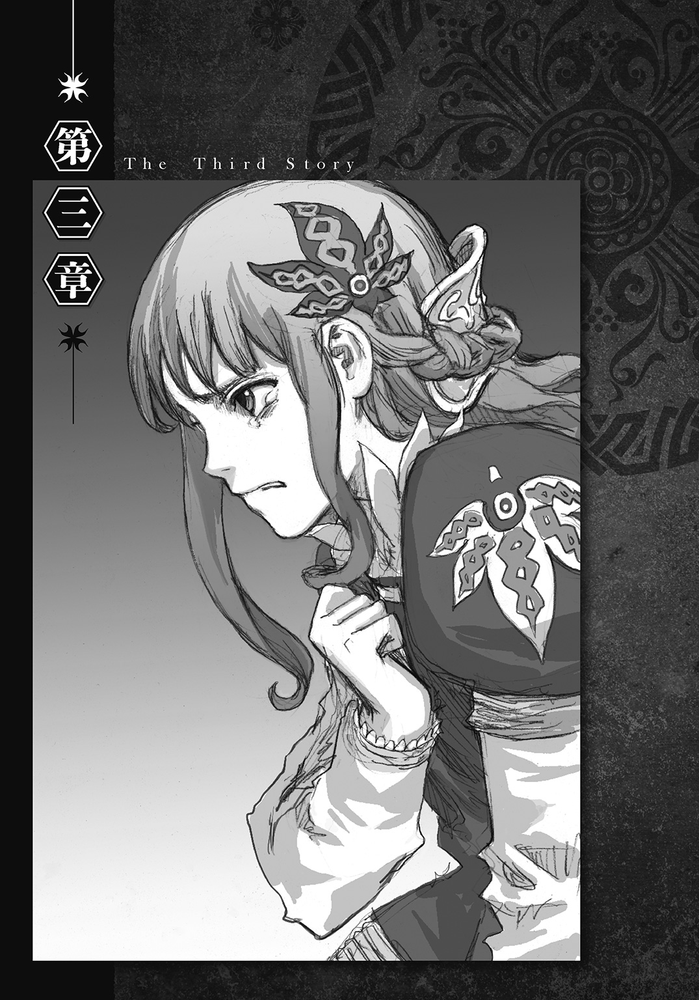
１
ミシェルの捜索が開始されてから、とうとう八時間が経過した。あと二時間もすれば、夜が明ける時刻になる。
兵士や城の人々の疲労はピークに達しており、予報通りに降った大雨が、その疲労に追い討ちをかけていた。雨は若干小降りにはなったものの、今もシトシトと降り続いており、屋外の捜索者たちの体力をジワジワと奪い続けている。そのような悪天候の下で、一向に収穫の得られない作業を続けなければならない――そんな苛酷な状況に、もはや誰もがうんざりしていた。
クロードは捜索隊の間に流れだした、そんなどんよりとした雰囲気を感じ取ってはいたが、それでもミシェルの捜索を打ち切ろうとはしなかった。山小屋でワードから頼まれた「協力」の内容が、「市場でリンゴ売りになりすましていた砲兵隊長を呼びつけること」ともう一つ、「ワードから合図があるまでは、捜索を打ち切らないこと」だったからである。
（暗殺者の正体が城にいる人間だろうがそうでなかろうが、捜索が続いている間は好き勝手に動くことができないので足止めになる......か、確かにな。城にいる者が暗殺者であれば、そいつは捜索を勝手にやめることはできないし、怪しい動きをすれば目立つ......暗殺者が城の外にいる者であっても、大勢の人間の目があるせいで、目撃を恐れて動けない......）
しかし、現状を維持できる時間にも限りがあり、その限界点が目前まで迫っている。
新たな動きが生じたのは、ちょうどそんな時だった。
「クロード長官。長官宛てに書状が来てます」
捜査本部に、手紙を手にしたグラッド副官がやってきたのだ。
クロードは書状を受け取ると、封を開く。
（......よし！）
中身はワードからのメッセージだった。
「グラッド副官、私はこれから陛下へ定時報告へ向かう。私が戻るまで、代わりに現状を維持しておいてくれ」
早口でそう命じると、クロードは再び捜査本部を発った。
その同時刻、マフィニの執務室。
「王女殿下の居場所が分かったというのは本当か、イグリ？」
「はい。予想した通り、バトロジカは私の『駒』と接触いたしました」
緊急会議から戻ったマフィニにイグリが報告する。
「殿下を発見したら合図を送るよう命じておいたところ、バラク山から狼煙が上がったのを確認しました。私だけが見える特殊な狼煙ですので、我々以外にこのことを知る者はまだおりません」
「しかしイグリ。殿下の捜索がまだ続いておるせいで、今のままでは自由に動くことができん」
マフィニは神経質そうに言った。
国内が緊急事態下にある場合、国務大臣は執務室に待機しておくことになっている。そのため、国外での仕事を終えて帰国したマフィニは、ミシェルの失踪を知らされてからそれ以降、部屋から一歩も出られない状態でいた。
「この状況を何とかせんことには、居場所が分かってもどうすることもできんではないか」
「御心配はいりません」
不平を漏らすマフィニに、イグリは落ち着き払って言った。
「既にもう、王女殿下はこの世から姿を消していると思われます」
「そっ......それは本当か、イグリ！」
「ええ。狼煙が上がったことは、時限装置の起動も意味します。その装置は、起動してから半時間が過ぎると、殿下の持ち物に取りつけておいた仕掛け火薬を起爆させます」
「狼煙を確認したのはいつのことじゃ？」
「今から二時間前、マフィニ様が会議室に向かわれた直後でございます」
「何と......ならば、もう一時間半も前に、王女殿下は他界したというのか？」
「左様でございます。あとは御遺体が発見されたという報告が来るのを待っていれば良いかと」
「その時限装置とやらは、本当に殿下を死に至らしめたのか？」
マフィニが疑わしそうに聞くと、イグリは自信ありげに答える。
「誤作動は決してあり得ません。ボタンが押された時に、時限装置を中心とした半径一〇〇メートル以内に殿下がおりさえすれば、半時間後に必ず仕掛け火薬が起爆します」
「その『駒』とやらが裏切っておる可能性はないか？ バトロジカに説得されて、殿下の死を偽装する目的でボタンを押したのかもしれんぞ？」
「その可能性は事前に考慮しておりました。ですから、裏切った場合に備えて、『駒』には『禁句』を仕込んでおきました」
「何じゃ、その『禁句』というのは？」
「バトロジカの力のかけ方には様々な方法がございます。『禁句』は、『設定しておいた条件が満たされると命令が実行される』ように力をかける方法の一つでして、バトロジカの中でも限られた者しか使えない方法でございます」
マフィニの問いに、イグリはさらりと答える。
「納得させた『駒』に力をかける際に、私は『自分の名前』を『禁句』に設定した後で、『気を失え』と命令しておきました。この場合、命令はすぐには実行されません。実行に移されるのは、命令を下された相手が『禁句』を口にしようとした時や、耳にした時なのです。今回は、口にしようとした時に限り命令が下されるよう設定しておきましたので、『駒』は『私の名前』を誰かに伝えようとすると、意識を失うことになります」
「ほう、それは便利じゃな」
「それだけではありません。今回は『気を失え』という命令の他に、『球のボタンを押せ』という命令も同時に実行させるようにしておきました」
「どうやって一度に二つも命令をかけたのじゃ？」
「流浪のバトロジカよりも先に『駒』と接触しまして、『禁句』を口にしたら球のボタンを押せ』という、『状況を限定した命令』も下しておいたのでございます」
イグリがこの「状況を限定した命令」を下すことに成功したのは、アドマンが球体の説明を聞いて納得したためだった。
「つまり、たとえ裏切っておったとしても、その裏切りがきっかけとなって、『駒』は殿下の前でボタンを押すことになるのじゃな......ふうむ、上手くできておるのう」
「命令してから二十四時間以内にその状況が起きなければ取り消されてしまいますので、『状況を限定した命令』は、そうそう使える手ではないのですが、今回は流浪のバトロジカが非常に高い確率で『駒』と接触すると読んでおりましたので」
イグリはさらに詳しく説明する。
「しかも『禁句』による命令は、規模の小さな命令しか下せない代わりに、持続期間がとても長いという特徴がございます。この特徴を利用して、私は規模の小さな命令しか下せない『禁句』に『状況を限定した命令』を併用させることで、使い勝手の良い『駒』を長期にわたって温存しているのです」
「そうか。そこまで手を打っておるのなら、殿下は確実に――――......いや、待て。イグリ、まだ他の可能性が残っておるぞ！」
マフィニはせっつくように言った。
「お聞かせください、マフィニ様」
「バトロジカが装置を外した可能性じゃ。起爆まで半時間もあるのなら、装置に気づいたバトロジカが、殿下から仕掛け火薬を外してしまっておるかもしれんぞ？」
「確かに罠の存在は匂わせておきましたので、その可能性はあり得ることでございます。ですが心配には及びません。たとえそうなったとしても......」
イグリが、どこか楽しげな様子で続きを口にしようとした時だった。
執務室の扉が慌ただしくノックされ、二人の兵士が飛び込んでくる。
「マフィニ大臣、申し上げます！ 王女殿下の御遺体が発見されました！」
それを聞くと、イグリは口元をさりげなく手で覆う。口角が笑みで上がるのを抑え切れなかったためだった。
「クロード長官の御判断により、殿下が御遺体で発見されたことは、まだ国王陛下には伝えておりません。発見した者にも、口外せぬよう固く口止めがされております。御二方も、どうかこの事実を他に漏らすことのないよう、くれぐれもよろしくお願いします」
兵士の一方が緊迫した声で言うと、マフィニは神妙な顔を装って頷く。
「うむ、分かった。それで、殿下の亡骸はどうなっておるのじゃ？」
「はっ、密かに城内地下の礼拝堂に運び込んであります」
「この目で確認せんことには、何とも信じられん......すぐにでも向かうとしよう」
すると、もう一方の兵士がマフィニを押し止めるように言った。
「いえ。申し訳ありませんが、マフィニ大臣には、これからクロード長官の開く極秘会議に出席していただかなければなりません。御遺体の確認は、秘書官に代行させてください」
「そうですか。そういうことでしたら、礼拝堂へは私が行くことにいたしましょう。マフィニ様は、ただちに会議へ赴いてください」
こうして、イグリは地下の礼拝堂へ向かうこととなった。
「おや、私が一番乗りなのですか？」
礼拝堂に誰もいないことが分かると、イグリは違和感を抱きながら兵士に質問する。
「他の秘書官の方々はどうされているのです？」
「お偉方に一度に動かれてしまいますと、異変に感づく者が出る恐れがあるので、時間差で移動していただくようクロード長官から仰せつかっているのです」
「そうですか......」
取ってつけたような回答だと感じたものの、イグリは遺体の確認を優先することにする。
「御遺体はどちらにあるのでしょうか？」
「あそこです」
兵士は奥の祭壇を指差す。その祭壇の手前には木製の台が置かれており、人の形をした物体が、上から白い布を被せられて横たわっていた。
左右に並ぶ長椅子の列。その中央を貫く通路を台まで進むと、イグリは布を捲り上げる。
「......ほう」
布の下から現れたのは、人の形に見えるよう整えられたガラクタの山だった。
「そういうことですか」
イグリは瞬時に理解した。振り向くと、兵士が扉に鍵を掛け終えた姿が目に入る。
「私はまんまとしてやられたというわけですね？」
「ああ、寝室での礼だ。今度はこっちが閉じ込めさせてもらったよ」
そう答えながら兵士が兜を脱ぎ捨てると、ワードの不敵な表情がイグリに晒される。
「やっと会えたな、イグリ秘書官」
二人の戦闘論者は、互いに顔を見合わせた。
２
私室を訪れたクロードに、ストベルシア王は最初に言った。
「クロード。報告を聞く前に、先に確かめておきたいことがある」
「何でしょうか、陛下？」
「前回の報告では、寝室を抜け出したミシェルはワード殿と共に、黒幕の正体を突き止めるために行動を開始したと申しておったな？」
「はっ」
「その黒幕とは、もしやバトロジカか？」
「陛下！ どうしてそのことを......！」
クロードは驚きながら聞き返す。
前回の報告は今から三時間前、アドマンを山小屋に誘導する作戦を決行する直前に行われていた。その際にクロードは、ミシェルの無事や、ワードとミシェルが行動を共にしていることは伝えていたが、暗殺計画に巻き込まれていることや、その黒幕が戦闘論者であることは、一切報告していなかった。
「そうか......余に心配をかけさせまいとして、気を遣ったか」
ストベルシア王はフウッと大きく息を吐く。
「か......隠し立てをして申し訳ありませんでした、陛下」
クロードの謝罪に、王は静かに首を横に振る。
「責めてはおらん。責があるのは、以前からこの国で暗躍しておる悪しき者の存在を知っていながら、誰にも言わず独りで抱えていた余の方だ......それで、何か新しい報告はあるのか？」
「申し上げます、陛下。現在ミシェル殿下とワード＝ラゲッジは、黒幕の正体を突き止めることに成功し、礼拝堂で罠を仕掛けて黒幕を待ち構えております」
ワードから届いた書状の内容が打ち明けられると、ストベルシア王は衝撃を受ける。
「何と！ それは真か！」
「はい。敵のバトロジカは、自分が罠にかけられていることに気づいておりません。ですから、二人から次の報告が来るまで待機しておくことが、現状での最善策かと......」
「いや、ならん！ 今すぐ現場へ向かい、ワード殿とミシェルを連れ戻すのだ！」
「し、しかし......」
ストベルシア王の剣幕にたじろぎつつも、クロードは言葉を返す。
「畏れながら申し上げます、陛下。私の見たところ、あのワードという少年は人を食ったようなところはありますが、王女殿下に危害を加えないという点では信頼に足る人物です。加えて、かなり機転も利き、敵と渡り合うだけの実力も十分に持っていると思われますが......」
「敵の力を見誤ってはならん。この国に忍び込んでおる『悪魔』は、決して生易しくはない」
ストベルシア王はクロードを説き伏せると、声を鋭くする。
「良いか、クロード。そなたは一刻も早く二人と合流し、その身の安全を確保することに努めよ！」
「はっ、了解いたしました」
どうしてストベルシア王が、黒幕が戦闘論者であることを知っていたのか――その理由を尋ねる余裕すら与えられずに、クロードは私室を後にする。
「済まぬ、ミシェル......余にできるのはここまでだ......これ以上はしてはやれぬ......決してする訳にはいかぬのだ......」
再び独りになると、ストベルシア王は苦悶の表情でそう呟く。王の脳裏には三年前の情景――メリッサ王妃を失った、「あの時」の情景が思い起こされていた。
「こんな真似をしてくるということは、王女殿下はまだ生きておられるということですね？」
引っ掛けられたことなど全く意に介さないといった様子で、イグリはワードに落ち着いた口調で話しかける。
「ああ、お姫様ならここさ」
その返答と共に、扉から最も近い長椅子の物陰で身を潜めていたミシェルが立ち上がると、スッと通路と伝ってワードの前まで出る。
「なるほど、掠り傷一つございませんね。仕掛け火薬の罠はどうされたのですか？」
イグリは、品定めをするかのように目を細めながら尋ねる。
「起爆する直前に、俺がお姫様から外して放り投げた。煙玉に挟んであったヒントのおかげで、突き止めることができたよ」
「ククク......思っていたよりも頭が切れますね、流浪のバトロジカ」
「流浪じゃねえぜ。今の俺はあんたと同じ、堅気の戦闘論者さ。お姫様には俺の契約者になってもらった」
イグリの眉がぴくりと動く。
「ほう、上手く取り入りましたね。すると、マフィニ様が行かなければならないという極秘の会議とやらも、あなたの捏造というわけですね？」
「正解だ。大臣なら、今頃誰も来ない会議室に閉じ込められて独りきりでいるよ」
「見事に分断されてしまいましたね、これは困りました」
「そうなんだ、俺も大臣から話が聞けなくて困っているんだよ。だから大臣の代わりに、あんたの口から聞かせてくれ」
ワードは口調を変える。
「あんたの契約者、マフィニ大臣がお姫様の生命を狙う理由は何なんだ？」
「......そうすることが、この国のためだからですよ」
少しの沈黙を挟んだ後で、イグリはミシェルを見ながら告げる。
「どういうことかしら、イグリ秘書官？」
ミシェルが緊張した面持ちで尋ねると、イグリは静かに語りだす。
「王女殿下。殿下は今の世界の状況を御存知ですか？ 大陸中部の壮絶な覇権争いは、激化の一途を辿っています。たとえどれほど地理的に離れていようとも、ストベルシアが今以上にその流れに巻き込まれることになるのは、もはや必然といっていいでしょう」
「それくらいなら知っているわ。でもストベルシアには、独立を貫くだけの兵力と資源は十分備わっているはずよ」
「ええ、今のところは。環境が恵まれているため、この国は建国以来、一度も他国の侵入を許したことはありません。ですが、この国には一つ欠点があるのです」
「欠点？ 何のことよ？」
「政治形態ですよ。この国は、未だに絶対王政などというカビの生えた古臭い仕組みで動いています。それこそが欠点なのです。外交の任を請け負っている関係上、他国の現状に詳しかったマフィニ様は、その欠点をずっと憂いていたのです」
この時点で、イグリのミシェルに対する「攻撃」は既に始まっていた。しかし、「ある理由」から、ワードはそのことに気づけていなかった。
「マフィニ様は、国王陛下が現在お持ちの権限を大臣たちにある程度分散させ、現行の独裁体制を緩和させるべきだとお考えなのです。そして、陛下に何度もそのことを進言しておりました。ですが陛下は、マフィニ様の言うことを一度も聞き入れてはくださらなかったのです」
「それが今回の計画とどう結びつくっていうんだよ？ お姫様の暗殺に成功しても、大臣の権限が強くなったりはしないぜ？」
「そんなことはありません。王家の人間が暗殺されたという事実は、国民に王権への不信だけでなく、内政への不安も植えつけます。その不安に乗じて他国が攻め込んでくれば、それが大臣たちの地位を向上させる、千載一遇の好機になります」
「他国の侵入が好機だって？ どういうことだ？」
ワードはわけが分からずに聞き返す。
「分かりませんか？ ストベルシア王家の権威が揺らいでいる状況下で、国務大臣が主導となって他国の侵攻を撃退すれば、大臣たちは国民からの信頼を一気に得られます。その勢いに乗じて王政を廃止し、国務大臣らの合議を中心とする新しい国家体制へ移行する――そうなれば、この国は飛躍的に生まれ変わるのです」
「それじゃあアドマン隊長にリンゴ売りをやらせたのは、やっぱりクーデターのためだったってことかよ？ また随分と遠回りな計画を立てたな」
「それは国外の事情にも目を配りながら計画を進める必要があったからなのですが、まあ何を言っても、あなたにマフィニ様の考えは理解できないでしょう。あなたはストベルシアのことを何も知らない。昨日初めてこの国を訪れた部外者ですからね」
そう言った後で、イグリはワードからミシェルに視線を向ける。
「しかし王女殿下、あなた様は違います」
鋭い眼光をぶつけられ、ミシェルは身体を固くする。
「殿下はこの国に生まれ、この国でお育ちになられました。それなのに、この国に関する重大事を何も御存知でおられない」
「わ、私は......その......政については......」
「そうでしょう、お分かりにならないでしょうね。独裁者の娘として何不自由なく育った殿下にとっては、それに仕える人間が長きにわたって受け続けていた理不尽な仕打ちなど、関心を抱く価値すらないものでしょうからねえ」
ミシェルの顔が青ざめていく。
「私は......私は......」
（何だ......イグリは一体何を企んでいる？）
ワードには不可解だった。
ストベルシア王は、合理的思考、豊かな知識、適切な思慮分別に加えて、カリスマ性をも兼ね備えた、一国を治める王としての器に足る人物である――晩餐会での会談から、ワードはこの国の王をそう判断していた。そんなワードにしてみれば、イグリの言っていることはあまりに一方的な批判でしかなかった。
（この乱世の時代にあって、絶対王政を維持できている。そのこと自体が、ストベルシア王が名君であることの証明じゃねえか。主観的にも客観的にも、イグリの発言には説得力がまるでない........................だが......）
ワードは横目でミシェルを観察する。
少女は今にも倒れるのではないかと思うほど、真っ青になっていた。
（こうした討論に慣れていないせいで、お姫様は呑まれちまったみてえだな......これ以上イグリに話を続けさせるのはまずいか......）
ミシェルの精神状態を懸念したワードは、半ば強引に話に割って入ることにする。
「イグリ秘書官、言いたいことはだいたい分かった。続きは......」
しかし、イグリはワードの発言を完全に無視してミシェルに話し続ける。
「ミシェル王女殿下。残念ですが殿下が反論として何をおっしゃったところで、私の心には何も響きません。なぜなら殿下は......」
イグリがミシェルに止めの言葉を放つ。
「何も知らない世間知らずの小娘なのですから」
「――――――っ......！」
その言葉がミシェルの心を深く貫き、少女の顔から一気に血の気が引く。
「ククク......王女殿下」
イグリはその様子を満足そうに眺めてから言った。
「納得されましたね？」
そして、次の動作でミシェルへ襲いかかった。
３
「させるかよ！」
祭壇と入り口を繫ぐ中央の通路を一直線に駆けてくるイグリ。それを迎え撃つために、ワードはミシェルの盾になろうとする。
「お姫様、早く俺の後ろへ回れ！」
だが、ミシェルは通路の真ん中でじっとしていて、その場から全く動かない。そのため、ワードは他ならぬミシェルが邪魔で、イグリを迎撃する態勢に入れない。
「どうしたんだよ？ 早く......」
ミシェルの背後から覗き込むようにして、ワードが彼女の横顔を見た時だった。
「まさか......」
ワードは気がついた。ミシェルが動かないのではなく、動けないのだということに。
「よそ見は感心しませんね、若きバトロジカ」
ワードの注意が自分から外れた隙を利用して、イグリは一気に距離を詰めることに成功すると、ワードの腰を全力で蹴り飛ばす。
「ぐっ！」
その一撃でワードは扉の手前まで後退し、バランスを崩して床に座り込む。
「イグリ、てめえ......」
「止まりなさい！」
立ち上がったワードに、イグリが突き刺すように命令する。
「くっ......！」
ワードは従うしかなかった。固まったままのミシェルの喉元に、イグリの右手に握られたナイフが突きつけられていたためである。
（そんな......どういうことだ......なぜだ......？）
ワードは自分の足元がぐらつくのを感じる。
（コンプレックスを指摘することで強引に納得させて、戦闘論者の力でお姫様の身動きを封じただと......そんな馬鹿な......）
「あり得ねえ！」
追い詰められたワードは思わず叫ぶ。
「イグリ、なぜそんなことができる！」
礼拝堂にイグリを誘き寄せるにあたり、ワードは起こりうる可能性のある、あらゆる事態を想定しておいた。しかし、現実に目の前で起きた、今の事態だけは予期していなかった。
「今のお前は、契約者の許可がないと戦闘論者の力は使えないはずだ！」
なぜなら、その「あらゆる事態」は、どれも「イグリはマフィニの許可なくしては戦闘論者の力を使えない」という前提に基づいていたためだった。
ミシェルに力を使うためにイグリが布石を打っていたことに気づけなかったことや、何の警戒もせずにイグリに質問を重ねていたことも、その前提に起因していた。
契約者と分断されているイグリが戦闘論者の力を使えるとは、ワードは欠片も思っていなかったのである。
「ククク、いいでしょう。理由を教えて差し上げましょう」
イグリは可笑しそうに笑う。
「ワード......とか言いましたねえ、若きバトロジカ。この事態を招いたきっかけは、先ほどの会話でのあなたの失言ですよ」
「失言......？」
「ええ。私があなたを『流浪のバトロジカ』と呼んだら、あなたはこう返しましたね？ 今は私と『同じ』で、堅気の戦闘論者であると。ですから私は、殿下を納得させることにしたのです。あなたが愚かにも、私が契約を交わしている身だと思い込んでいることが分かりましたので」
「まさか......契約を交わしていないのか！」
ワードはギョッとする。
「ええ、私は流浪のバトロジカです」
「その告白がどういうことか、分かって言っているんだろうな？」
「もちろん分かっていますよ。バトロジカ・ルール第三条『流浪の戦闘論者は己の正体を明かしていない相手に対し、己の力を行使してはならない』――私が協会の訓練施設にいた頃は、毎朝暗唱させられていた文句でしたからねえ」
イグリは勝ち誇った表情をワードに向ける。
「マフィニ大臣は契約者じゃない......力が使えたのは、そんな単純な理由だったのか......」
「お行儀よくルールを守って生きているあなたには、少々難問だったようですねえ」
礼拝堂は、もはやイグリの独壇場と化していた。
「それにあのような小心者に、私が力の使用を譲渡するはずがないでしょう。あれはこの国でことを起こすために利用した、最初の『手駒』に過ぎません」
「イ......グリ......秘書......官......」
それを聞いたミシェルは、真っ白な顔のままイグリに話しかける。
「あな......た.........一体......いつ......ら......マ......フィニ......国......臣を......？」
「おや、これは素晴らしい。私が動くなと命令すれば、ほとんどの人間は口もきけなくなるのですが......立派な精神力をお持ちですね」
「私......質......問......答え......な......さい......」
ミシェルが苦しそうに言い返す。ワードには聞き取れないほどの、非常に小さい声だった。
「これは失礼しました。マフィニ大臣に力をかけたのは、私がこの国の秘書官になる以前からですよ。もう十年以上も前になりますかねえ、大陸中部に出向いていた大臣に近づいた私は、バトロジカの力を用いて、彼に自身を雇わせたのです」
「十......年以......上......も前......か......？」
「はい、殿下。ロケットに忍ばせた贈り物も大臣ではなく、私の発案によるものです」
「ま......さか......あ......な......は......お母......の死......にも......関わ......が......？」
「関わるも何も」
待ち望んでいた質問を得たイグリは、嬉しそうにミシェルに耳打ちする。
「メリッサ王妃殿下を殺したのは、この私です」
「―――――――――――――――！」
ミシェルの心は一瞬でかき乱される。
驚愕、疑念、悲哀、絶望によって生み出された、激しいショックが少女を襲う。
「おい、イグリ......てめえ今、何を喋った！」
ミシェルの激しい表情の変化に気づいて、ワードが怒声を上げる。すると、イグリは面倒くさそうに言った。
「うるさいですねえ。静かにしていてください」
「うっ......」
イグリが言葉を放った途端、ワードに強烈な睡魔が襲いかかる。立つことができなくなったワードは、その場に四つん這いになる。
「お姫......様......ダメだ......惑わされる......な......」
眠りに落ちる直前、ワードはうつ伏せの状態でミシェルにそう助言する。
しかし、その声はミシェルの耳には届いていなかった。
「......グリ......秘......書......」
少女の注意は、全てイグリに集中していた。
「そ......れは......本......当............」
ミシェルは続きを口にするのをやめる。
（ああ......本当......なんだわ......）
自分の瞳を真正面から受け止めるイグリの表情を見て、確信したためである。
（お母様は......お母様......は......）
イグリの発言が真実であることを。
（ゆ...............い.........ゆ......る......な......い）
ショックが過ぎ去った後の少女の全身が、強大なたった一つの感情で満たされる。
「わ.........」
イグリを凝視するミシェル。
片方の目から涙が伝わり、頰に一筋の線を引く。
「わ......わた......私......は......」
戦闘論者の力に抗いながら、ミシェルは懸命に声を絞り出す。
「ありがとうございます、王女殿下」
そんなミシェルに、イグリは感謝の言葉を述べる。
「納得していただけたようですね」
ミシェルは全身から声を出して言った。
「私......は......あな......たを......生涯......許......さ......ない......」
それが少女の口にした最後の言葉となった。
４
クロードはすぐに礼拝堂へ向かうつもりだったのだが、結局そうすることができなかった。疲労の限界にきていた捜索隊の一隊が、不注意から土砂崩れの被害に遭ってしまい、その対応に追われたからである。
そのため、彼が礼拝堂に到着したのはミシェルの捜索が開始されてから九時間後、ストベルシア王の私室を出てから半時間も過ぎた後だった。
礼拝堂の扉の前で、クロードは引き連れてきた五人の部下に命令する。
「先に私が一人で中に入る。十分が経過したら、お前たちも入ってきてくれ」
十分間のタイムラグは、中で待っているはずのワードと言葉を交わすための猶予だった。
だが、扉を開けたクロードに出迎えの言葉を告げたのは、ワードではなくイグリだった。
「おや、クロード長官。ちょうどいいところにお越しくださいましたね」
イグリ以外に声を出せた人間がいなかったためである。
「あなたは......確かマフィニ外務大臣の......」
右腕に何かを抱え、中央の通路に立っているイグリの姿が目に入ると、クロードはどうして礼拝堂に秘書官がいるのか疑問に思う。
「なっ......まさか......」
しかし、イグリが抱えているのがミシェルだと分かると、その疑問は吹き飛んでしまう。
「王女殿下！」
「お待ちください！」
クロードが近づこうとするのを制すると、イグリは芝居がかった調子で告げる。
「クロード長官、非常に悲しいお知らせがございます」
「何が......あったのです？ それに、秘書官のあなたがどうしてこのような場所に？」
「私がここに来たのは、兵士から呼び出しを受けたからでございます。クロード長官こそ、極秘の会議の方はもうお済みになられたのでしょうか？」
「極秘の会議？ 何のことでしょうか？」
返答を聞いたイグリは、クロードとワードの連携が不十分であることを確信する。
クロードは、「黒幕」がイグリを指していることを知らない。ワードから受け取った書状には、『礼拝堂で黒幕を仕留める』としか書かれていなかったためである。ワードが犯したその小さなミス、そしてミシェルの安否に全神経を向けてしまったことが仇となり、クロードは目の前のイグリが「敵」である可能性に気づけなかった。
その一方、イグリはクロードが自分の「敵」であることを容易に結論づける。極秘の会議を開いているはずのクロードが礼拝堂を訪れた事実から、ワードの協力者であることを即座に見抜いたのだ。
クロードはイグリを敵だと認識していないが、イグリはクロードを敵だと認識している――この状況が決め手となり、イグリはクロードよりも優位に立つ結果となる。
「おや、御存知ではない？ それでは、やはり私は嵌められたのですねえ」
「嵌められた？」
「ええ。王女殿下の御遺体が礼拝堂に密かに運び込まれたとの報告があり、確認のために来てほしいと言われましてね」
被害者を装うために、イグリは自分に起きたことをそのまま報告する。
「ですが、それは例の行方不明のバトロジカの罠だったのです。やはり王女殿下は、彼に誘拐されていたのです」
しかし、その報告がきっかけとなって、ここでクロードがイグリに疑いの目を向ける。
（もしや、こいつ......）
根拠の八割は、長年警務省長官を務めてきた者の直感という極めて乱暴な理由だった。だが、職務を通じて培ってきたその直感が滅多に外れないことを、クロードはよく知っていた。
（既にことを終えた黒幕が、身代わりとして無関係な秘書官を残していった可能性もある......だが、それにしては......）
そして、残り二割のうちの一割を支えていたのは、彼が経験則から得た独自の着眼点だった。
（この秘書官には「恐れ」がない......「シロであるが故の恐れ」......冤罪を被るかもしれないという危機感、不安感が......そして代わりに感じ取れるのが、それとは全く逆の「クロであるが故の余裕」......犯した罪が発覚した後の展開を事前に想定していたために、備えができていることから生まれる余裕......それに何より、陛下はおっしゃられた......）
根拠を構成する最後の一割は、ストベルシア王の言葉だった。
（相手は油断のならない「悪魔」だと......ならば......）
結論を下したクロードは慎重に返答する。
「その言葉、信じてもよろしいのですね？ 名前は確か......イグリ秘書官殿」
「私の言うことが信じていただけないのですか？」
イグリは微妙な変化を察すると、不服そうな声で言った。
「いえ、そういうわけではありません。失礼しました。後で詳しくお話を聞かせてもらいますので、今は何よりもまず、王女殿下をこちらに渡していただきましょう」
ミシェルは腰に回されたイグリの腕だけで支えられており、くの字に前のめりになっている。
（まさか......王女殿下は既に......）
イグリとの距離を縮めながら、クロードは嫌な汗が浮き出るのを自覚する。
「その前に一つだけよろしいでしょうか？」
クロードの放つ不穏な空気を感じ取ると、イグリは警戒しながら尋ねる。
「後にしてください。先に殿下をこちらへ」
「そう言わずにお聞きください、人手が必要なのです。王女殿下をお渡しする前に、数人で構いませんので、あなたの部下をここに呼んでいただくわけには参りませんか？」
「部下なら連れてきています。扉の外で五人待機させてあります」
「そうですか、それは安心しました」
イグリは本心から告げる。部下の目があるのなら、クロードは軽率な行動は取れない――どれだけ逆上しようとも、勢いに任せて自分を斬り捨てたりはしないと踏んだからである。
「それでは殿下はお任せすることにします」
胸中に思惑を秘めつつ、イグリは素直にミシェルを差し出す。
「王女殿下！」
クロードはミシェルを確保すると、少女の肩を揺さぶりながら呼びかける。
「殿下！ 殿下！」
すると三度目の呼びかけで、閉じていた瞼がゆっくりと開かれる。
（良かった......生きておられた......）
ミシェルが意識を取り戻すと、クロードは心から胸を撫で下ろす。ミシェルの方もクロードに気づくと、安心した表情を彼に向ける。
「何があったのですか、殿下？」
クロードの問いに答えようとして、ミシェルは唇を動かす。
するとその直後、少女の表情が俄に激変する。
「どうされました、王女殿下！」
ミシェルは口をパクパクさせてはいるが、何も語らない。
「御要望通り殿下はお渡ししましたので、話の続きをさせていただきますね。先ほど『非常に悲しいお知らせがある』と申し上げたのは、ミシェル王女殿下に関することなのです。おそらくバトロジカに誘拐されたショックのためでしょう......」
困惑するクロードにイグリは言った。
「どうやらミシェル殿下は、声が出なくなってしまわれたようなのです」
「失礼します」
クロードの入室から十分が経過したため、五人の兵士らが命令通り礼拝堂に入ってくる。彼らが真っ先に視線を向けたのは、クロードの傍らに佇む町娘の格好をした少女だった。
「おお、ミシェル王女殿下！」
そしてその少女がミシェルだと分かると、五人は歓声を上げようとする。
「御無事でし......た.........か............？」
ところが、実際に歓喜の声を発した者は誰一人いなかった。
「イグリ......貴様......」
憤怒の形相をしたクロードが、イグリを思い切り睨みつけていたためである。
沈着冷静を重んじ、「いかなる時も平常心で事に臨め」と自分たちに言い聞かせていたクロード。その彼が、これほどまでに感情を露呈している姿を、五人はこれまで見たことがなかった。
「ク、クロード長官......どうされたのですか......？ いったい、何が......」
兵士の一人がおずおずと発言した時だった。
「ああ、皆さん、お待ちしておりました！」
イグリが大仰な仕草で兵士たちに声をかける。
「さあ、早く王女殿下を誘拐したバトロジカを捕らえてください！」
イグリは、五人の視線を奥の祭壇に誘導する。それに従って兵士たちが注意を向けると、そこには兵士の格好をしたワードの姿があった。
「ワード＝ラゲッジ......！」
クロードも、ここで初めてワードの存在に気づく。ワードは、ガラクタが積まれていた木製の台に背中を預け、頭をカクンと下げた姿勢で座り込んでいた。
「下手人はあそこです！ さあ、早く！」
イグリに促されて、三人の兵士がすぐさま祭壇へ向かうと、ワードを取り囲む。
「死んでいるのか......？」
「いえ、どうやら眠っているだけのようです」
兵士の一人がワードの胸が上下しているのを確認すると、クロードに報告する。
「そうか......ならば、目を覚ます前に縛り上げておけ」
立場上、クロードはそう命令せざるを得なかった。
「畏まりました」
兵士は眠っているワードを後ろ手にしてから両手をロープで括り、猿ぐつわを嚙ます。
（大丈夫だ、まだ逆転の目は残っている......国王陛下は、ワード＝ラゲッジが王女殿下の味方であることを御存知でおられる......イグリがもっともらしいことをどれだけのたまおうが、陛下まで騙し切ることは決してできない......）
クロードは心の中で自分に言い聞かせる。
ワードの拘束が済むと、別の兵士がイグリの事情聴取を開始する。
「秘書官殿、お話を聞かせていただいてもよろしいでしょうか？」
「ええ、何でも聞いてください」
イグリは「用意しておいた経緯」を、十数分にわたって言葉巧みに説明する。その聴取が終わっても、ワードは結局目を覚まさなかった。
「クロード長官、バトロジカの処分はどうすれば良いでしょうか？」
「......もう一度地下牢に放り込んでおけ」
仕方なくクロードがそう指示するのを聞くと、ミシェルはギクッとする。
（それはダメ、クロード！）
ワードと引き離されることは、戦闘論者の力が使えなくなることを意味する。イグリに対抗する術が断たれるのを阻止するために、ミシェルはクロードを止めようとする。
しかし、何度試しても、少女は言葉を声にすることができない。腕を交差させてバツ印を作るといった、ジェスチャーによる伝達もできなくなっていた。
（......そうだわ！）
意志を伝えられないもどかしさに身を捩っていたミシェルは、フードのポケットから万年筆を取り出す。寝室で伝言を書いて以来、ずっと入れっ放しになっていたものだ。
（言葉や行動で伝えられないなら、文字で伝えればいいのよ！）
イグリが黒幕であることを記すために、ミシェルは自分の腕に万年筆の先を近づける。
（えっ......）
だが、一文字めを書こうとすると、右手はピタリと止まって動かなくなってしまった。
（そんな......筆談もできないなんて......）
「無駄ですよ、殿下」
ミシェルは飛び上がりそうになる。その呼びかけを聞くまで、自分のすぐ傍までイグリが接近していたことに、まるで気づけていなかったのだ。
「バトロジカの力は意志に作用する力です。二度目に殿下が納得してくださった際に、私は殿下に、私に不利な言動が一切できなくなるよう力をかけておきました」
イグリはミシェルに解説する。
「真相を伝えたいという本来の意志は、伝えたくないという意志へと上書きされます。声が出せないのは、今の殿下にとって真相を伝えたいという意志が、声を出したいという意志と密接に関与しているためなのです」
結局、ミシェルはワードが二人の兵士に抱えられて礼拝堂から退場するのを、手も足も出せずに黙って見ていることしかできなかった。
（これが戦闘論者の力......何て厄介な力なのよ......）
自分の無力を悟ると、ミシェルは思わず唇を嚙みしめる。
「そう悲観なさらなくても大丈夫ですよ、殿下。真相に関わる内容以外でしたら、筆談やジェスチャーによる意志疎通は可能なはずですからね」
言葉だけの慰めをミシェルにかけると、イグリは続いてクロードに慇懃な口調で告げる。
「クロード長官。そろそろ執務室に戻らせていただきたいのですが、よろしいでしょうか？」
「......ええ、お引き取りいただいて結構です」
「国王陛下への御報告はどうなさるおつもりですか？ 私の口から御説明を差し上げることになるのでしょうか？」
（バトロジカの貴様が陛下と直接口をきくだと？ ふざけるな！）
怒鳴りつけたくなるのを堪えながら、クロードは返答する。
「方針が決まり次第、連絡を差し上げます。それまでは、執務室に待機していてください」
「了解しました、それでは失礼します」
扉へ向かうイグリが目の前を通り過ぎると、ミシェルは悔しさで身を震わせる。
「ああ、一つ言い忘れていたことがございました」
礼拝堂を後にする直前だった。
イグリは「次の作業」の下準備のために、クロードに声をかける。
「バトロジカの計略によって、マフィニ大臣が会議室に幽閉されております。ただちに救出していただくよう、よろしくお願いします」
そう言うと、イグリは悠然と立ち去った。
５
波乱の一夜が終わりを迎え、ストベルシア王国に朝が訪れる。
「ん......」
ワード＝ラゲッジが地下牢で目を覚ましたのは、礼拝堂の件が一段落してから六時間後、時計の針が午前十一時を指した時だった。
（ここは.........ああ、そうか......俺はしくじったのか......）
頰に伝わる石畳の冷たさを自覚すると、ワードはもそもそと起き上がる。
（くっ......あちこち痛くて仕方ねえな......）
猿ぐつわと拘束は解かれていたのだが、縛られていた部位は、今も悲鳴を上げていた。
（畜生、眠らされたな......）
ワードが六時間も目覚めなかったのは偶然ではなく、イグリが力をかけたためだった。
（あの時、イグリから流浪の戦闘論者だと知らされるまで、結局俺は真相を見抜けなかった......イグリの説明に納得してしまった......奴はそれを利用して......）
顔をしかめながらも、ワードは思考を続ける。
（イグリが俺に下した命令は、シンプルに「眠れ」......あの説明には、俺を一晩眠らせるだけの強制力があったというわけか......そのせいで俺は行動の自由に加えて、お姫様と分断されたことで、戦闘論者の力までも失っちまった......）
現状を把握し終えると、ワードは前日も世話になった、粗末なベッドに再び横になる。
（イグリが戦闘論者の禁忌まで犯していたとはな......おかげで地下牢へ逆戻りだ......そういや、昨日もこうして寝そべりながら考えごとに耽っていたんだよな........................うん......？）
ワードは首を傾げる。
（そういえば、未だに分かってないな......この国の戦闘論者対策が徹底していた理由......それに王妃陛下の件にしても、取り次いでもらえない理由は判明したが、どうして亡くなったのかは不明のままだ......）
それに気づくと、ワードは昨日整理した疑問点を、再度一つずつ挙げていくことにする。
（三つめに変だと思ったのは......そうだ、師匠のことだ......）
ここでワードが師匠と呼んでいる人物は、かつての自分の教育係である。
左手に紋様を持った子供を授かった親には、戦闘論者協会から一つの義務を課せられる。協会の名簿に、子供の生年月日と氏名を登録するという義務である。その名簿は、協会が運営する訓練施設に子供を入所させるためのものであり、子供らは四歳の誕生日を迎えると同時に施設に入所し、一般教育と共に「戦闘論者として生きる上での心構え」も学ぶこととなるのだが、その間の彼らの親代わりとなる存在、それが教育係である。
（ここに来ることになったのは、師匠から王妃陛下の話を聞くように言われたから......師匠と王妃陛下の接点は何だ......過去に契約を交わした間柄？ いや、それだと、お姫様が戦闘論者について何も知らなかったのは不自然だ......アドマン隊長も、この国に来た戦闘論者は俺が一人めだって言っていたし......契約料のことを考えると、王妃陛下が結婚前に契約していたとも思えねえ......うーん、分からねえな............そうだ、分からないといえば......）
考えに行き詰まると、昨晩の事件に関する疑問点に思考が向かう。
（イグリの計画にも、分からない点が複数あったな......そもそも当初の計画では、イグリはお姫様の評判を落とすことで王族の権威を貶めて、絶対王政を崩壊させるつもりだった......「禁句」の使い手であるイグリは、戦闘論者の中でも潜在能力のかなり高い部類に入る......しかも、奴はハンナちゃんまで殺すつもりだった......「十分過ぎるほどの力」と「標的以外の生命も平気で奪う残忍性」があり、バトロジカ・ルールを破るほど、なり振りにも構っていない......そんな野郎が企てたにしては、やはり当初の計画はあまりにも悠長で手ぬるい......それにどうして......）
ワードはバラク山での出来事を思い返す。
（イグリは、どうして罠の存在を俺たちに教えたんだ？ 本気で目的を達成したいのなら、たとえ万が一であっても、暗殺の失敗に繫がるような要因は排除するはず......そして、それよりもさらに大きな謎が......イグリのしたことで、最も意味不明なのが......）
そこまで考えが進んだ時だった。地下牢の扉が開く音が響き、クロードが階段を降りてきた。
「クロード長官！」
ワードはベッドから起き上がると、鉄格子の前まで移動する。
「目が覚めていたか。ちょうど良かった」
「すまねえ、ドジ踏んじまった」
「バトロジカ、お前に聞きたいことがある」
「聞きたいことなら、俺の方にだって山ほど......」
「バトロジカがバトロジカと契約をするのはあり得ることか？」
ワードの発言を全く聞かずに、クロードは一方的に質問をぶつける。
「......何があった？」
「マフィニ大臣が自白した」
クロードは表情を険しくしながら言った。
「王女殿下の誘拐及び暗殺を計画した張本人は自分である、とな」
それを聞くと、ワードも表情を変える。
「違う！ 黒幕はマフィニ大臣じゃなくて......」
「秘書官のイグリだな？」
「気づいていたのか！」
「状況から考えてそうとしか思えん」
「そうか......イグリは責任を押しつける相手を、俺からマフィニ大臣に変更したんだな。大臣は、これからどうなるんだ？」
「裁判にかけられることになった。だが、今の状況下でマフィニ大臣の裁判が始まれば、イグリを永久に野放しにすることになる」
クロードは眉間にしわを寄せながら答える。
「永久？ どうしてだ？」
「ストベルシアでは、一度判決が確定した事件は二度と裁かれることはない」
「ああ、なるほど。そりゃまずいな......裁判が始まるのはいつだ？ 明日か？ 明後日か？」
「四時間後だ」
「今日かよ！」
ワードは驚きのあまり大声になる。
「そりゃまた随分と急ぎ足だな」
「マフィニ大臣の私室を捜索したら、暗殺計画に関する証拠書類が山のように見つかったのだ。容疑者の自白と物的証拠が揃っていて、事件の内容は王族の暗殺計画......他の国務大臣たちが裁判を急がせて、早急に事態を収拾したがるのは当然の成り行きだ」
クロードが苦い顔で告げる。
「裁判には、イグリも重要参考人の一人として法廷で証言することになっている。秘書官の弁舌とバトロジカの力があれば、黒を白と言いくるめることは十分可能だろう」
「お姫様の証言があっても、状況は覆らないのか？」
「殿下は声が出せなくなっている」
ワードが眠っていた間に起きた出来事を手短かに説明すると、クロードは続けて言った。
「イグリが首謀者であることは間違いない。だが、奴がバトロジカであることを確信しているのは、お前と私、そしてミシェル殿下の三人......しかし、一番発言力を持っている殿下から証言をいただくことはできない......このままだと、イグリが無罪を勝ち取る可能性は極めて高い」
「状況は、かなり切迫しているな......だけど、戦闘論者が戦闘論者と契約できるかどうかは、そのことにどう関わってくるんだ？」
気になっていたことをワードが尋ねると、クロードは困惑した表情で言った。
「犯行を自白した際、大臣は最初に言ったのだ......自分はバトロジカである、とな」
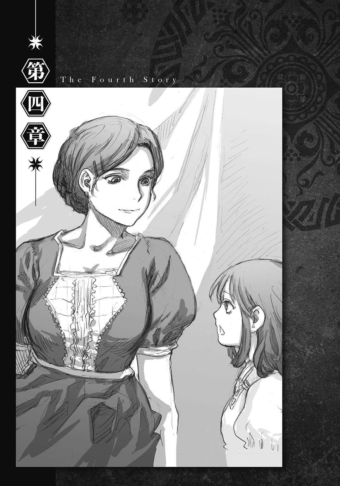
１
『私はバトロジカなのだ、クロード長官』
マフィニがこのセリフを口にしたのは、ミシェルの保護とワードの護送を済ませたクロードが、会議室の扉を開けてすぐのことだった。目が合うと同時にそう告げられたので、クロードは当初、自分が何を言われたのか理解できなかった。
「マフィニ大臣を犯人に仕立てるために、イグリがそう言わせたんだ。大臣を戦闘論者に仕立て上げておかないと、ハンナちゃんが操られていたことへの説明がつかなくなるからな......他にも何か言わなかったか？」
「さっきも言った通り、王女殿下の誘拐と暗殺計画を企んだことを告白した。あとは何を聞いても、その二つの内容しか口にしなかった。他の言葉を忘れたかのようにな......マフィニ大臣がバトロジカでないことを証明する方法はないのか？」
そう聞かれると、ワードはすぐに言った。
「左手を確認すればいい。大臣が本当に戦闘論者なら、バトロジカ紋があるはずだ」
「それなのだが......実は大臣の左手の皮膚は、もともと火傷の痕で爛れているのだ」
「何だって？」
「マフィニ大臣がまだ秘書官だった頃、派遣先の国で戦火に巻き込まれたことがあったらしく、それが原因で負った火傷とのことだ」
「何てこった......だったら、大臣が戦闘論者でないことを証明するのはかなり難しくなるぜ？」
「戦闘論者協会の名簿に、マフィニ大臣の名がないことを確認するというのはどうだ？」
「いや、名簿に名前のない、いわゆる『はぐれの戦闘論者』は割と存在するから、その方法は役に立たない」
「ではどうすればいい？ 大臣がバトロジカではないことを証明できなければ、イグリがバトロジカであることが明らかになったとしても、『自分は何も関与していない、力を使ったのは大臣だけだ』と、言い逃れをされるのではないか？」
「それの心配はしなくていい。イグリが戦闘論者であることを明らかにすれば、戦闘論者協会を動かすことができる。協会の権力と俺の証言があれば、そんな言い逃れは絶対に通らねえからな」
「では、イグリがこう言った場合はどうだ？」
クロードは続けて尋ねる。
「『確かに私はバトロジカで、王女殿下を暗殺するために力を使った。だが、力を使ったことの責任は契約者のマフィニ大臣が負うこと、私は罪には問われない』――――たとえイグリがバトロジカの力を用いたことを認めたとしても、大臣と契約を交わしていると主張すれば、イグリは無罪放免になってしまわないか？」
「ああ、それが心配で『戦闘論者が戦闘論者と契約できるかどうか』を知りたかったのか」
ようやくワードは、クロードの質問の意図を理解する。
「そうだ。戦闘論者同士でも契約が交わせるのであれば、イグリを取り逃がすことになる」
「大丈夫、答えはノーだ。戦闘論者と戦闘論者が契約することは禁じられている」
「おお！」
クロードは表情を明るくする。
「契約制度は、戦闘論者が自分たちを世界に認めてもらうために作られた仕組みだからな。だからマフィニ大臣が本当に戦闘論者で、イグリと契約を交わしていたとしたら、二人はルール違反で戦闘論者協会に裁かれる。それに今のイグリは、自分が戦闘論者であることを明かされた時点で破滅する。奴は戦闘論者の禁忌を犯したからな」
ワードは、イグリが流浪の戦闘論者であることを告げる。
「そうか――今の状況は、イグリにとっても安泰というわけではないのだな」
「ああ、つけ入る隙は残っている」
「助かったぞ、バトロジカ」
ワードの相槌に軽く頷くと、クロードは話を切り上げる。
「マフィニ大臣の裁判には、お前も重要参考人として呼ばれることになっている。次に会うのは法廷だ。窮屈だろうが、それまではここにいてくれ」
「え？ ちょっ、ちょっと待った。待ってくれ、クロード長官！」
クロードが鉄格子から遠ざかろうとしたので、ワードは慌てて引き止める。
「何だ？」
「それじゃあ俺は裁判が始まるまで、四時間もここで待っていないといけないのか？」
「当然だろう。お前は重要参考人であると同時に、表向きはミシェル王女殿下誘拐事件の容疑者なのだぞ？」
「いや、でもここは協力して、黒幕のイグリを二人で追い詰めるっていうのが、定番の流れってもんじゃないか？」
「勝手な理屈をこねるな」
クロードは冷ややかに言った。
「今の状況下で、私の権限を使ってお前の拘束を解くことはできん」
「そ、そりゃねえぜ......俺はてっきり出してもらえるとばかり......」
「最初に言ったはずだ。ここに来たのは、『聞きたいことがあるから』だと」
「それは確かにそうだが......そ、そうだ！」
踵を返して階段に向かおうとするクロードに、ワードは最後の抵抗を試みる。
「クロード長官、こういうのはどうだ？」
一方、その頃。
「ク......クク......クククク......」
部屋の主が連れ去られ、中にあったものの大半が持ち去られたマフィニの執務室。
殺風景なその空間で、イグリは一人、心の底から楽しそうに笑っていた。
「あと少し......あと少しで......私は『勝利』できる......」
頭の中でこれから取るべき行動を素早く整理し終えると、机の上の小瓶に右手を伸ばす。
「『勝利』を得られるのであれば、『これしきのこと』は取るに足らない......」
自分に言い聞かせるようにそう言うと、イグリは左手の手袋を脱ぎ捨てる。
「ええ、代償とすら言えないほどのささやかなことです......」
剝き出しになった左手の甲に浮かぶ、自身のバトロジカ紋。
それをめがけて、イグリは小瓶の中身を勢いよくぶちまける。
毒々しい色をした液体が皮膚へ染み込むと、室内に凄まじい異臭が立ち込める。
「クク......ククク............あと......少し......あと少しで......私は............」
左手を切断したくなるほどの激痛に襲われながらも、イグリは恍惚の笑みを浮かべ続けていた。
２
開廷予定時刻の三時間半前。
『お願い、ハンナ。しばらく独りにさせて』
ミシェルは便箋にそう書くと、ハンナに手渡す。
「畏まりましたのです。用事がございましたら、いつでもお呼びくださいなのです」
浮かない顔をしたハンナが退室して独りきりになると、ミシェルは頭を激しく左右に振る。
（ああ......何て愚かなのよ、私ってば......）
ミシェルはソファに横たわりながら、自分の不甲斐なさを嘆く。
（もうっ......何か手はないの？）
寝室の扉もベッドも壊されたため、ミシェルは急遽誂えられた仮部屋に入れられていた。テーブルの上には豪華な昼食とティーセットも用意されているのだが、食欲が湧いてくる気配はまるでない。
（何で動いてくれないのよ......）
ミシェルは恨めしそうに右手をじっと眺める。
礼拝堂を去ってからも、ミシェルは何度も真相を書き記そうとした。しかし、何十回、何百回と繰り返しても、イグリの正体や礼拝堂で起こったことを書こうとして右手に力を込めた途端、少女の右手はピタリと動かなくなってしまうのだった。
（私が真実を伝えないと、マフィニ大臣は絞首台に送られてしまう......それなのに何もできないで、イグリ秘書官の思惑通りに事が進むのを、黙って見ているしかないなんて......）
乱れた気持ちを落ち着かせようとして、ミシェルは胸元に手を伸ばす。
（ああ......そうだったわね............）
しかし、いつもならそこにあるはずのロケットは、今はもうない。
（お母様なら......）
改めてそれを思い知らされたことで、ミシェルの頭の中が亡き母親で満たされる。
（お母様が同じ立場なら、こんな時どうするかしら......？）
少女は、母親と過ごした幼い頃の記憶を手繰り寄せる。
王妃としての公務と公務の合間を縫って作られる、ほんのわずかの母子水入らずのひと時。
それは、当時のミシェルにとって何より大切な「特別な時間」だった。
『ミシェル。あんた、またやったんだって？』
ストベルシア王妃として振る舞っている時とは全く異なる、母親の砕けた物言い。
それを聞くと、幼いミシェルは気分が華やぐのを感じる。
『違うもん。またやったのは、アタシじゃなくて婆やの方だもん』
口を尖らせながら、ミシェルは母親に言い返す。
『婆やってばひどいの。アタシがお稽古休みたいって言っても、いっつもダメって言うの』
『だからって、仕返しに婆やの部屋に、三十匹もカエルを投げ込むのはもっとダメだろ......』
メリッサは大きく溜息を吐く。
『そんなやり方、誰に教わったんだよ？』
『お母様よ』
ミシェルは全く悪びれずに答える。
『アタシと同じくらいの頃、意地悪された子にそうしたって言っていたわ』
『あー......うん、なるほどね......確かに言ったな』
メリッサはばつの悪い表情になる。
『全く......いつもあれだけ猫被った姿を見せているってのに、そういうところばっか真似ちまうんだな......そんなにお稽古が嫌なのか？』
『ううん、嫌じゃないわ。どのお稽古も、とっても楽しいわ』
『うん？ だったらどうして......』
『アタシ、もっとお母様と一緒にいたいの』
ミシェルはメリッサの腕にしがみつく。
『だからお稽古の時間を、お母様と一緒にいるための時間にしようと思ったの。それなのに、何回お願いしてもダメだって言うんだもん』
『そういうことか......』
愛おしげにミシェルを見つめると、メリッサは両手で我が子を抱き寄せる。
『ごめんな......淋しい思いさせてばっかりで』
上等のシルクの手袋が、ミシェルの頰を包み込む。
『ミシェル、あんたの気持ちはよく分かったよ。でもな、私と一緒にいる時間が欲しいのなら、そのやり方はやっぱりダメだ』
『じゃあどうすればいいの？』
『婆やの言うことをよく聞いて、お稽古も休まずに続けるんだ。そうすりゃ、もう頼む必要なんかなくなる。婆やの方から、時間を作ろうかって提案してくるはずさ』
『婆やの方から？ 本当に？』
ミシェルは疑わしげにメリッサを見つめる。
『本当さ。どうしてかって言うとな、ミシェルが頑張っていることを婆やに認めさせれば、婆やは納得するからさ』
メリッサは続けて言った。
『ミシェル、世界は納得でできているんだ。だから、納得させた回数が多ければ多いほど、世界はお前に味方してくれる。そういうふうに世界はできている』
『......何だかよく分からない』
ミシェルは頰を膨らませて、「納得のいかない」顔をメリッサに向ける。
『ハハハ、ミシェルにはまだ難しかったか。よし、あんたがもう少し大きくなったら、もう一度言うことにするよ』
『王妃陛下、そろそろ御準備をしていただくようお願いします』
そこへ、話題の乳母が時間を告げにやってくる。
『おっと、もう時間か』
メリッサは名残惜しそうに、ミシェルの顔から両手を離す。
『いいな、ミシェル？ 騙されたと思って、私の言ったようにやってみな』
我が子の頭を優しく撫でながらそう言った後で、メリッサは乳母の方を向く。
『すぐに参ります。ミシェルには私からよく言い聞かせておきましたので、今後とも娘のことをよろしくお願いします』
乳母が二人の傍まで来る間に、メリッサは母親から王妃へと、完全に戻り終えていた。
（ああ、そっか......）
思い出から帰還したミシェルは、左手の平に浮かぶ、ワードのバトロジカ紋を見つめる。
（『説得した相手に真実を語らせる力なら、お姫様にだって備わっている』――――あいつからそう言われた時、ずっと以前にも同じようなことを言われた気がしたのは......）
少女の瞳が輝きを取り戻す。
（世界は納得でできている――――お母様なら、きっとこの言葉に立ち返る！）
ミシェルは心の奥底からエネルギーが沸き立つのを感じる。
（そうよ......そうだわ......落ち込んでいる暇なんてないわ......）
ソファから身を起こすと同時に、少女の気持ちがスパッと切り替わる。
（だけど、どんなに周りを『納得』させたくても、今の私は真実を伝えられない。だったら、他に何かできるか考えるのよ......）
ミシェルは契約者の証をギュッと握り込む。
（私には、力があるのだから......）
それから一時間が経過した頃だった。
「王女殿下、失礼します。クロード長官の代理で参りました」
グラッド副官がミシェルの仮部屋を訪れた。
３
ミシェルが母親との思い出に浸っていた頃、城内の地下にある軟禁部屋では、マフィニの呟く声が途切れることなく続いていた。
「わしは......わしはどうしてあんなことを......自分がバトロジカであるなどと......イグリの言う通りにするつもりじゃったのに......」
薄暗い部屋の中でうずくまりながら、マフィニはイグリから助言を受けた時のことを思い返す。
極秘の会議は一向に始まらず、他の出席者も現れない。
不審に思って会議室を出ようとしたら、いつの間にか扉に鍵が掛かっていて出られない。
慌てて大声を上げるが、誰もやってこない。
『マフィニ様、おられますか？』
イグリの声が聞こえたのは、心底マフィニが途方に暮れていた時だった。
『お、おお、イグリか！』
扉を挟んで向かい合った状態で、マフィニはイグリと言葉を交わす。
『何が......一体何が起こっておる？』
『これはバトロジカの罠です』
『何じゃと！ 罠とはどういうことだ？』
『王女殿下の遺体が見つかったという報告は、私とマフィニ様を分断させるために、バトロジカが仕掛けた罠だったのです』
『な、なるほど......ならばイグリ、わしはこれからどうすれば良いのじゃ？』
『これからクロード長官が鍵を開けに来ます。長官はマフィニ様がバトロジカであると思い込んでおり、問答無用で捕らえようとするはずです。ですから、口を塞がれるよりも先に、御自身が無実であるとお告げください。それが最善の対応でございます』
（――――その言葉に従い、わしは長官が来ると急いで弁解しようとした。それなのに口から出てきた言葉は......なぜじゃ、いったいなぜ......？）
この回想から分かるように、マフィニには自分がイグリの傀儡であるという自覚がない。なぜなら、イグリと契約の儀式を行った記憶を持っているからである。
しかし、それはイグリの戦闘論者の力で、そう思い込まされているに過ぎなかった。
当然バトロジカ・ルールにおいて禁忌とされている行為であるが、戦闘論者はその気になれば、記憶を上書きすることで「契約を交わした」と思い込ませることができる。そのため、戦闘論者と契約を交わす際は、厳密にはその契約を見届ける第三者、契約を交わした事実を客観的に証明できる人物の存在を必要とする。
この点についてだけを論じるならば、ワードとミシェルの契約も正当性を欠いている。しかし、たとえ第三者不在の下で交わされた契約であっても、戦闘論者協会はその契約を無効とはしない。せいぜい、第三者を交えて契約し直すよう薦める程度である。
それはなぜかというと、第三者を介入させて契約を交わすことは、「戦闘論者との契約を望む者であれば、最低限知っておくべき事項」の一つであり、第三者不在の下での契約は、「不都合が生じる危険を契約者側が十分承知した上で交わされた」と判断されるからである。
（まずい......まずいぞ......このままでは、わしは間違いなく死刑になる......）
自覚なき哀れな傀儡であるマフィニにも、これから開廷する裁判でどういう判決が下されるかは、簡単に想像できた。
（そもそも、わしはどうして王女殿下を暗殺するなどという大それたことを企てたのだ......今の地位にも国政にも、不満など一切なかったはずなのに......）
さらに、マフィニは暗殺計画を企てたのが自分ではないこと、「イグリに自分の企てであると思い込まされている」ことすらも知らない。
（くっ......どうして......どうしてこんなことになったのじゃ......）
弁解する術を奪われただけでなく偽りの記憶まで植えつけられ、マフィニは絶望の中で嘆くことしかできずにいた。
――――――――半時間後。
（......何じゃ？）
いつしか呟くのをやめ、茫然自失の状態となっていたマフィニは、部屋の外が騒がしいことに気づいて我を取り戻す。軟禁部屋の扉と城内を繫いでいる細い通路を通って、自分の方に近づいてくる二つの足音が耳に入ったのだ。
（わしを連れ出しに......？ すると、もう開廷の時間になったのか......？）
知らない間に随分と時間が経っていたものだとマフィニが思っていると、錠前が外される音と共に分厚い扉が開かれ、クロードが軟禁部屋に入ってくる。
「マフィニ大臣、もう一度取り調べをさせていただきます」
クロードがそう言って一旦扉の外へ出ると、今度は入れ替わりに、マフィニが一度も見たことのない顔が登場する。
「初めまして......じゃねえか。昨日執務室で一度会っているからな」
「誰じゃ、お前は？」
「昨日ストベルシアに来たバトロジカさ」
自己紹介を済ませると、ワードはマフィニと同じ目線になるように身を屈めた後で、本題に入る。
「マフィニ大臣、あんたには『禁句』が仕込まれている。設定されている『禁句』は『無実を訴える言葉』、そして下されている命令は『自分がバトロジカだと言え』だ。あんたは無実を訴えようとする度に、虚偽の自白をするようイグリに操られているんだよ」
何を聞いても、「他の言葉を忘れたかのように」マフィニは同じ証言しか返さなかった――クロードからそう聞かされた時から、ワードは、イグリがマフィニに「禁句」を仕込んだ可能性に思い至っていた。
「だが今の時点では、それは飽くまで一つの可能性でしかない。法廷で『大臣の自白が捏造だった』っていう主張を受け入れてもらうには、『禁句』が仕込まれていることを証明する必要がある。マフィニ大臣、俺はその証明をするために会いに来たんだ」
「本当にそんなことができるのか？」
扉の隙間から話を聞いていたクロードが質問すると、ワードは自信ありげに頷く。
「任せてくれ。約束はきちんと守る」
ワードが牢から出てこられたのは、クロードと「取引」をしたからだった。
地下牢から出してもらう代償として、ワードは大臣に「禁句」が仕込まれていることを証明すると約束したのだ。
「『禁句』を使って下された命令は何十年経っても持続する。だが、その『禁句』を口にしたり耳にしたりしなければ、命令が下されることは絶対にない。だから、『禁句』を仕込まれた相手と問答をする時は、質問者が聞き方を工夫してやればいいのさ」
ワードはマフィニに向き直る。
「今から俺がする質問に、大臣は言葉で答えなくていい。代わりに、『はい』なら首を縦に、『いいえ』なら横に振ってくれ」
ルール説明を終えると、ワードはそのまま取り調べに入る。
「最初の質問だ。あんたは無実を訴えようとする度に、虚偽の自白をさせられているのか？」
マフィニはワードから言われた通り、黙って首を動かして答える。
「どういうことだ？」
クロードは不可解な表情になる。マフィニは、首を横に振ったのだ。
「別の『禁句』が仕込まれていたせいだ。『首を縦に振れ』という言葉を『禁句』に設定して、『イグリの不利になる問いには偽りで答えろ』と命令を下しておけば、こういう具合に言動を操ることだってできる。イグリは、『禁句』の破り方を知っている相手が現れた時に備えて、先手を打っていたのさ」
ワードは慌てずに説明すると、ルールを変更する。
「マフィニ大臣、やり方を変える。今度は『はい』なら右手の指を一本、『いいえ』なら二本立ててくれ。無実を訴えようとする度に、虚偽の自白をさせられているのか？」
マフィニは無言で指を立てる。
「クロード長官、見ての通りだ」
立てられた指の本数は一本――――人差し指のみだった。
その結果に誰よりも驚きの表情を見せたのは、他ならぬマフィニ自身だった。
「このやり方を使って取り調べをすれば、開廷までにイグリが黒幕であることを示す情報を、きっと入手できるはずだ」
そう言いながら、ワードがクロードと交代するために軟禁部屋を出ようとした時だった。
「無駄じゃよ......」
ワードの提案を、マフィニの重苦しい声が否定する。
「どんな内容であろうと、陛下だけは絶対にその情報を信じることはない......その情報源がわしである以上はな」
「どうしてそう思われるのです？」
クロードが身を乗り出すようにして尋ねると、マフィニは口をもごもごと動かす。
「ここに入れられてからすぐのことじゃった......陛下がお出でになられたのじゃよ。猿ぐつわを嚙まされておったから、わしは何も言えなんだし、陛下も終始無言......会話のない謁見じゃったが、長年仕えてきたわしにはすぐに分かった......陛下は、わしがバトロジカだと完全に信じ込んでおられた......」
それを聞くと、ワードはマフィニに再び向き直る。
「もっと詳しく教えてくれないか。どうして国王陛下は、あんたが戦闘論者だと確信したんだ？ 何か根拠があったはずだ」
「根拠......ああ......おそらく『あれ』じゃろうな......」
だが、マフィニはそう言ったきり、口を閉ざしたままで何も語ろうとしない。
「大臣？」
「..............................」
「マフィニ大臣、『あれ』っていうのは何のことだ？」
痺れを切らしたワードが催促すると、マフィニはようやく口を開く。
「はて......わしは何の話をしておったのかのう？」
「なっ......！」
ワードはすぐに気づく。
「イグリの野郎......どこまで先手を打ってやがる」
「説明しろ、バトロジカ！ 何が起きている？」
クロードが詰め寄ると、ワードは言った。
「記憶を奪われたんだ......イグリは、他にも命令を下してあったんだよ。『国王陛下がマフィニ大臣を戦闘論者だと確信した根拠について尋ねられたら、それに関する全ての記憶を失え』っていう『状況を限定した命令』を」
それは、会議室での扉を挟んだ会話の際に、マフィニがイグリの説明に納得したのを利用して下された命令だった。
４
「ダメだ」
ストベルシア王の衛兵から話を聞いて戻ってくると、クロードは暗い声で言った。
「衛兵がマフィニ大臣に猿ぐつわを嚙ませて準備を整えると、陛下は御一人で軟禁部屋に入られたらしい。入室していた時間は二分にも満たなかったそうだが、陛下が中で何をなさっていたかを知っている者は、誰もいなかった」
「そうか。また謎が一つ増えちまったな......」
ワードは気の毒そうにマフィニを見る。
「見込みが甘かった......イグリは大臣の言動を完全にコントロールしている。さっきの言葉は取り消すよ、取り調べは時間の浪費にしかならない。大臣の口から、イグリの不利に繫がる情報は、決して漏れないと考えた方がいい」
「だが、少なくともマフィニ大臣と陛下の間に何があったかを知る方法は残されているな。御手間を煩わせてしまうことになるが、陛下の口から直接お聞きすればいい」
「いや、イグリはそんな詰めの甘い真似は決してしない。大臣に『状況を限定した命令』を下したのは、大臣の記憶さえ封じておけば、絶対に他から情報が漏れることがないとイグリが確信しているからだ。お聞きしても、おそらく陛下は何も語らない」
「そんな馬鹿なことがあってたまるか！」
クロードは感情的になって言い返す。
「イグリが封印したのは、我々に知られると不都合な情報なのだぞ！ 陛下がそのような情報を隠蔽される理由がどこにある？」
「分からない......だが、国王陛下の口から情報が漏れないことをイグリが確信しているのは間違いない。何か裏があるんだ」
「裏だと......まさか......陛下は既にイグリからバトロジカの力を......」
「いいや、それはない。国王陛下に戦闘論者の力をかけることに成功しているのなら、ハンナちゃんやアドマン隊長を操ってお姫様を暗殺させなくても、簡単にストベルシアを崩壊させることができるからな」
クロードは歯ぎしりをしながら悔しがる。
「証明はできないが、元凶がイグリであることが分かっている――何という忌々しい事態だ......こうなれば......」
クロードの瞳に黒い炎が宿り、左手が腰の剣へ向かう。それを見ると、ワードは静かに諭す。
「落ち着けよ、長官。そいつは最も愚かな手段だ。そんな手を使うくらいなら、イグリに全面降伏した方がマシさ。それに、万が一にも『そう』はさせないために、イグリは既に対策を取っているはずだ」
すると、思ってもみなかった方向から返事が来る。
「ええ、若きバトロジカの言う通りですよ」
背後から聞こえたその「声」が、ワードとクロードに凄まじい衝撃を与える。
弾かれたように振り向いた二人が目にしたのは、執務着に身を包んだイグリの姿だった。
「イグリ......どうしてここに......」
このタイミングで顔を合わせることになるとは全く思っていなかったため、ワードは動揺を隠せず、額から冷や汗を流す。
「大臣の御様子を窺いに来たのですよ。そうしましたら、あなた方が私のことについて話されていたので、聞き耳を立てておりました」
「そして、話に割り込む隙を狙っていたのか。上品なことだな」
「それは誤解です。何やら危険な方向へ会話が進みましたので、黙って聞いていられなくなっただけです」
冷ややかな笑みを浮かべながら、イグリは言葉を返す。
「公務はどうされたのですか、イグリ秘書官。マフィニ大臣の裁判は秘密裁判ですから、出廷するからといって、堂々と休むわけにはいかないはずですが？」
「クロード長官は時計を眺める暇もないほどお忙しいようですね。現在の時刻は十二時半――昼休憩の時間でございます」
クロードの言いがかりにも似た質問にも笑って答えると、イグリは続けて楽しそうに言った。
「納得されましたね？」
「ぐっ！」
クロードは反射的にワードに視線を送る。
「大丈夫だ、長官。そんな程度じゃ納得させたうちには入らない」
答えている間も、ワードはイグリから視線を外さずに睨み続ける。
「悪ふざけをかますとは余裕だな、イグリ」
「ククク......そういうあなたの方は、随分と差し迫った状況のようですねえ。開廷まで残された時間は僅かだというのに、そのようなことで大丈夫なのですか？」
「大丈夫だろうとなかろうと関係ねえよ。てめえの計画は、俺が必ずぶっ潰す」
その言葉を聞くと、イグリの表情がますます楽しげになる。
「威勢のいいことですねえ。では、その意気込みが口先だけではないことを確認させていただきましょう。私はクロード長官の刃を免れるために、どのような対策を取っているのですか？」
「自分の生命を、命令実行の引き金にしてあるんだろ？ 兵士の何人かに『開廷前に自分が殺害されれば、王族を殺せ』とでも命令を下してあるのさ。『誰かを殺せ』なんていう強制力の強い命令は、通常なら実行させるのは困難だが、術者本人の生命を条件にすれば、強制力の強い命令であっても容易に下せるからな」
「素晴らしい、その通りです。よく分かりましたね」
「何言ってやがる、『状況を限定した命令』の有名な応用じゃねえか。戦闘論者だったら思いつかない方がおかしいくらいのな」
両手を打ちながら自分を賞賛するイグリに、ワードは不機嫌に返答する。
「安心しました。これなら、退屈な裁判にならなくて済みそうです。法廷でお会いするのが楽しみですよ」
そう言うと、イグリは執務着から懐中時計を取り出す。
「さて......休憩時間もそろそろ終わりますね。クロード長官は許可を下さらないでしょうから、マフィニ大臣との会見は諦めて、私は退散することにします」
イグリは細い通路を引き返して、軟禁部屋をあとにする。完全にその姿が見えなくなってからも、しばらくの間、二人は警戒を解くことができなかった。
「十二時半......裁判まで二時間半を切っていたのか......」
軽い疲労感を覚えながらそう呟くと、クロードは小さく舌打ちする。
「分からん――イグリは一体どういう方法を使って、誤った情報を陛下に真実だと思い込ませた？ 陛下はバトロジカに関して、一般常識の範囲以上のことも御存知で......待てよ......」
クロードは、私室での会話を思い返す。
「そういえば......報告を差し上げなかったにもかかわらず、なぜか陛下は、事件の黒幕がバトロジカであることを知っておられたな」
「ええっ、そいつはおかしいだろ？ ハンナちゃんが操られていたことを知ってでもいない限り、計画の首謀者が戦闘論者だなんて分からないはずだ」
「そんなことは言われなくても分かっている」
ワードが批判めいた口調で言うと、クロードは憮然とした表情で言い返す。
「しかも、陛下は『黒幕が以前から暗躍していた』ことまで御存知だった」
「つまり......国王陛下は、黒幕が戦闘論者であることと、以前から国内に潜んでいたことを正しく理解していながら、どういうわけか黒幕の正体についてだけは、イグリじゃなくマフィニ大臣だと誤解しているのか。ちなみに、陛下はそのことを誰かに相談したりはしなかったのか？」
「いや、『誰にも言わずに独りで抱えていた』と言われていた」
「誰にも言わずに......か。うん？ つい最近、似たような話を聞いたような......ああ！」
ふと既視感を覚えたワードは、すぐにそれが何であったかを思い出す。
「そうか、あれだ。王妃陛下の御崩御が三年間公表されていないっていう――――......」
その瞬間、ワードとクロードの顔が、ほとんど同時に凍りつく。
「......貴様、今何と言った？」
「あっ......あ......いや、長官......俺、今何か言ったか......？」
「ごまかせると思っているのか？」
クロードの左手が再び腰の剣に伸びる。
「貴様が今口にした内容は、我が国の最重要国家機密だ」
「やっ......やっぱそうだよな？」
ワードがゆっくりと後ずさると、クロードはためらうことなく剣を抜く。
「安心しろ、この場で口を封じたりはしない。機密の漏洩を防ぐために、地下牢へ戻ってもらうだけだ」
「ま......待ってくれ、長官」
せっかく手に入れた自由を失うわけにはいかないワードは、必死の説得を試みる。
「確かに、その行動は間違っちゃいない。警務長官として、当然為すべき行いをしているのは分かっている。だけど......だけどな、長官。今は些細な問題は置いて、裁判でイグリの悪事を証明することに全力を注ぐべきじゃねえか？ ほ、ほら、言うだろ？ 『大事の前の小事』って」
「ああ、貴様の言う通りだ」
クロードは頷きながら言った。
「だろ？ だったら......」
「今は大事の前だ、小事であっても見過ごすわけにはいかんな」
「うん......確かにそういう使い方もできたな、その言葉」
説得が見事に失敗に終わると、ワードは〇・五秒で決断する。
「済まねえ、長官......」
軟禁部屋の扉と城内を繫ぐ唯一の通路。ワードがいたのが、たまたまその通路の城内側だったことが幸いした。
「この借りは必ず返す！」
ワードはクロードに背を向けると、全速力でその場から逃げ出した。
５
逃亡から五分後。
空き部屋を見つけると、ワードは急いで中に飛び込み、扉を閉める。
「はっ、はっ......しまった、うっかり口が滑っちまった......」
扉を背もたれにして座り込むと、ワードは心臓の高鳴りが治まるのを待つ。
「国家機密漏洩罪に逃亡罪に公務執行妨害罪か......恩赦に期待するしかねえな」
自嘲の笑みを浮かべながらそう言うと、ワードは「作業」に取りかかる。
（裁判までに解決しておかなきゃいけねえ疑問は全部では七つ――）
作業内容は「謎解き」――これまで情報を入手する過程で生じた疑問の解明である。
（ストベルシアの戦闘論者対策が厳重なこと、王妃の死因が不明なこと、王妃と師匠との関係、イグリの計画内容に関することが三つ、そしてストベルシア王がマフィニ大臣を戦闘論者だと誤解したこと......おお？）
手始めに疑問点を列挙していたワードは、あることに気づく。
（こうして並べ立ててみると、王妃の死因以外の六つには、どれも戦闘論者が関与しているじゃねえか......だったら、もしかして王妃の死因にも、何らかの形で戦闘論者が関わっている......王妃陛下の死にイグリが関わっている？）
糸口を摑むと、ワードは推理に没頭する。
（しかし......仮に王妃の死がイグリによるものだとしても、それが他の六つの謎とどう関係するっていうんだ？ 七つの謎全てに、本当に戦闘論者が関与しているのなら、それは偶然ではなく、何らかの必然性があるはずだ......）
活路を見出しはしたものの、そこから先へはなかなか進めず、推理は堂々巡りを繰り返す。
（鍵......七つ全てを繫ぐ決定的な鍵となる「何か」......それが分かりさえすれば、全ての謎が一気に明かされる......それなのに......答えは手を伸ばせば届く位置にあるはずなのに、どうしても手に入らない......実際に伸ばして届くのは、それを覆っている思わせぶりな手掛かり......まるで、目の前にニンジンをぶら下げられた馬にでもなった気分だぜ......）
あと一歩のところまで来ておきながら、その一歩を踏み出せない。そのもどかしさが、ワードを悩ませる。
（手掛かりはいくつも見つかっているのに、それらから導き出される「何か」が分からない......そういや、クロード長官はイグリが黒幕であることが分かっていながら、それを証明する手掛かりが見つからないせいで暴走しかけていたな......俺と長官はまるで逆ってわけか......）
ワードが自分とクロードを何げなく対比させた、その時だった。
（まるで逆........................逆............逆？）
頭の中を閃光が走る。
（そうか......もしかしたら、あの謎の答えは......だが、ありえるのか？ そんなことが......）
ワードは両目を閉じる。
そして、ストベルシアを訪れた、昨日の昼過ぎへ意識を飛ばす。
その思いつきが、事実と合致するかどうかを検討するために。
『戦闘論者......初めて聞く言葉だわ。それってどんな仕事をする人なの？』
『お母様――ストベルシア王国王妃、メリッサ＝モンゴメリ＝ストベルシアよ。最後にお顔を拝見したのは、両手に白い手袋をして、たくさんのお花でいっぱいの棺の中だったわ......』
『交代で来られたお医者様に、お母様の診療記録を見たいと頼んだ時に言われたのよ。記録は、前の御殿医が全部破棄していましたって』
『私は二度も死に損なったのよ』
『陛下は、わしがバトロジカだと完全に信じ込んでおられた......』
『入室していた時間は二分にも満たなかったそうだが、陛下が中で何をなさっていたかを知っている者は、誰もいなかった』
『イグリが封印したのは、我々に知られると不都合な情報なのだぞ！ 陛下がそのような情報を隠蔽される理由がどこにある？』
ワードは閉じていた両目をゆっくりと開く。
（そういうことだったのか......確かに「それ」が真実なら、この国が戦闘論者への対策に万全なことや王妃陛下と師匠との関係、イグリの計画や行動が奇妙だったこと、それに国王陛下の行動......全てに説明がつく）
そう確信した時だった。
「こんな所で何をしているのですか？」
「どわっ！」
突然耳元で声がして、正常に戻ったばかりの心臓が一気に高鳴る。
（やばい、見つかっちまった！）
思うと同時に、ワードは声がした方を振り返ると、相手の顔を確認しないまま土下座する。
「頼む、見逃してくれ！ 今はどうしても捕まるわけにはいかないんだ！」
懇願するワードに、声の主は言った。
「何を言っているのか分からないのです。とりあえず顔を上げてくださいなのです」
「その話し方......もしかして......」
顔を上げると、声の主が判明する。
「やっぱりハンナちゃんか！」
空き部屋の扉は少しだけ開かれており、その隙間から、丸い眼鏡を掛けたハンナの顔がワードを眺めていた。
「こんにちはなのです、ワード様。何をしているのですか？」
「ハンナちゃんこそ、何しにここへ？」
ワードが聞き返すと、ハンナはさらに扉を開けて、自分の格好を見せながら答える。
「お昼休みが終わったら、午後のお掃除の時間なのです。使っていないお部屋は、すぐに埃が溜まるのです」
「ああ、そういう訳か」
ハンナの手にはバケツとモップが握られていた。その後ろには、ゴミを入れるための革袋や雑巾、棒つきタワシといった、掃除道具が積まれた小さな台車も見える。
「ちょうど良かった、ハンナちゃん。実は、クロード長官が俺を捜し回っているはずなんだ。少しの間、匿ってくれないか？ 代わりに、ハンナちゃんの言うことを何でも聞くからさ」
「何でも聞いてくれるのですか？ だったら一つお願いがあるのです」
ハンナは、丸眼鏡の奥からワードを見つめ返しながら言った。
「お掃除が終わったら、私と一緒にミシェル殿下に会いに行ってほしいのです」
「そんなことでいいのか？」
ワードが拍子抜けしながら尋ねると、ハンナはおかっぱ頭を大きく縦に振る。
「ミシェル殿下、元気がないのです。ワード様が会いに行けば、きっと元気になるのです」
「そいつはどうか分かんねえが......分かった、約束する。裁判までにやっておくべきことはさっき終えたばかりだから、時間なら......十......分......」
突然、ワードは黙り込む。妙な胸騒ぎを覚えたためだった。
（何だ......何かおかしい......俺の推理が正しいのなら、どうしてイグリは軟禁部屋に来た？）
嫌な予感が、ワードの胸をザワザワと搔き乱す。
（考えろ......イグリが軟禁部屋に来た本当の理由を......）
湧き上がる不安を払いながら、ワードは思考する。
「どうしたのですか？」
話の途中で沈黙したワードに、ハンナが心配そうに声をかけた時だった。
「裁判......そうか......裁判だ......イグリが事件を起こした目的は、お姫様を殺すことだ......裁判に勝つことじゃない」
ワードは、自分が重大な勘違いをしていた可能性に気づく。
「イグリを出し抜くために残された時間は、とっくに尽きていたのかもしれない......もしも、イグリが最初から裁判で争う気なんか、まるでなかったのだとしたら......そのために俺たちの前に姿を現したのだとしたら......奴は、開廷前に全てを終わらせる気だ！」
顔をしかめて呟くと、ワードはハンナに急いで尋ねる。
「ハンナちゃん、お姫様は今どこにいるんだ？」
「寝室の片づけが済んでいないので、仮部屋におられるのです」
「悪いんだけど、掃除が終わってからじゃなく、今すぐそこに案内してくれないか？」
ワードは台車から掃除用具を下ろすと、できたスペースに屈み込む。
「分かりましたなのです」
緊迫した空気を察すると、ハンナはワードの言う通りにすることに決める。
ミシェルの仮部屋となっている客室。その部屋の前には、見張りの衛兵が二人立っていた。
「お掃除に来たのです。ミシェル殿下に入室の許可をお願いしたいのです」
台車を押しながらハンナがそう言うと、衛兵は済まなそうに答える。
「殿下でしたら部屋にはおりません。先ほどお迎えが来られたので、一緒に出ていかれました。お手数ですが、改めてもう一度来てください」
「迎えに来たのは誰なのですか？」
ハンナはワードから頼まれた通りに質問する。
「グラッド副官です」
「どこに行くと言っていたのですか？」
「知りません。内密の用事だということで、詳細は教えていただけませんでした」
（遅かったか......）
台車の中でやり取りを聞いていたワードは、苦渋に満ちた表情を浮かべる。
（行き先が分からないのなら、連れ去ったのはイグリに間違いない。やっぱり開廷までに片をつける気だったのか......）
「了解しましたなのです。また後で来ますのです」
ぺこりと頭を下げると、ハンナは廊下まで引き返す。
「助かったよ、ハンナちゃん。実はな――」
台車から這い出ると、ワードは御礼を言った後で、ハンナに事情を説明する。
「ミシェル殿下が死んじゃうのですか！」
ミシェルの危機を知ったハンナは、悲痛な声を上げる。
「早く助けに行くのです！ ミシェル殿下はどこにいるのですか？」
「分からない――手掛かりが何もないんだ。全ての心当たりを捜し回るしかない」
ハンナの問いに、ワードは弱々しく答えることしかできない。
（残された時間は二時間......いや、それには「後始末」の時間も入っている......実際に残されている正味の時間は、一時間あるかどうかすら怪しい......たったそれだけの時間で、お城のどこかにいることしか分からない相手を見つけ出すのは――――不可能だ）
そう結論を下しつつも、ワードは活路を見出そうとひたすら考える。
（どうする......どうすればいい......）
だが結局、その時間は長くは続かなかった。
６
ワードとハンナが仮部屋に着いた時、ミシェルはグラッド副官の案内で中庭を歩いていた。
ストベルシア城の中庭には、北東の方角に二〇人ほどが入ることのできる、小さなレンガ造りの離れがある。「別館」と呼ばれているその建造物は、普段は歴代の王族関係者の所持品が納められている、一種の博物館である。
だが、いつの頃からか、別館はもう一つの役割を持つようになった。すなわち、国民には公にできない事件が城内で起こった際に、秘密裏にそれを裁くための「秘密裁判の法廷」という役割である。
中庭のレンガで舗装された道を伝うと、ミシェルは別館の両開きの扉をくぐる。ミシェルが別館に入ったのを確認すると、副官は扉をバタンと閉める。
「こちらがマフィニ大臣の裁判を行う法廷になります」
中の様子は、彼女が以前に訪れた時とは全く様変わりしていた。
入ってすぐのホールにあった陳列棚は全て姿を消しており、代わりにストベルシア王とミシェルが座るための、脚の高い椅子が二脚運び込まれている。その手前には、十脚の椅子が左右に五脚ずつ弧を描くように並べられており、さらに手前、ホールのちょうど中央には、四角い形をした証言台が設置されていた。
別館は、見事に博物館から法廷に変貌していたのだ。
『十脚の椅子には誰が座るの？』
ミシェルは便箋にそう書きつけると、副官に差し出す。
「............」
しかし、グラッド副官は何も言わずに扉の前で直立したままで、便箋を受け取りに来ようとしない。そればかりか、ミシェルと視線を合わそうとすらしない。
（何よ、見えてないはずないのに......）
副官の態度に少し憤慨しながら、ミシェルが扉へ向かおうとした時だった。
ミシェルの背後から腕がニュッと伸びてきたかと思うと、彼女の手から便箋を奪う。
『きゃっ！』
声なき悲鳴を上げながら、反射的に後ろを振り向く。
すると、少女は表情だけでなく、全身を硬直させる。
（イグリ秘書官！）
便箋を取り上げたのはイグリだった。
「ああ、あれらは国務大臣の方々が座るための椅子でございます。裁判長をなさる法務大臣と被告のマフィニ大臣を除いた、残り十名の御席ですよ」
イグリは笑顔でそう言うと、読み終えた便箋を握り潰す。
（逃げなきゃ！）
硬直が解けると同時に、ミシェルは扉めがけて疾走する。しかし、グラッド副官が扉の前に立ち塞がっていたため、離れを出ることは叶わなかった。
「来られたばかりだというのに、もうお帰りになるのですか？」
ミシェルの背後から、余裕たっぷりにイグリが声をかける。
『イグリ秘書官。あなた、グラッド副官にも......』
「ええ、力をかけさせていただきました」
唇の動きを読むことで、イグリはミシェルの言いたいことを難なく理解する。脱出できないことを悟ったミシェルは、扉に背を向けてイグリと対峙する。
『私を閉じ込めてどうするつもりよ？』
イグリを睨みつけながら、少女は懸命に口を動かす。
『二時間もしないうちに裁判が始まるわ。お父様や大臣たち、それに事情を知っているクロードや、あいつもここへ来るのよ？』
「はい。ですから残り二時間のうちに、殿下にはここでお亡くなりになっていただきます」
淡々とした口調でイグリは言った。
「裁判で死刑が確定することを覚悟したマフィニ大臣は、裁判の準備で慌ただしい隙を衝いて、グラッド副官に仕込んでおいた『禁句』を用いて殿下を道連れにした――――こういう筋書きになっております」
『無理があるわね。知っているわよ、『禁句』には規模の小さな命令を一つしか仕込めないって。誰かを殺せなんていう強制力の大きい命令は下せないはずよ？』
「ほう。思った通り、ワード＝ラゲッジから『禁句』の説明を受けていましたか」
ミシェルの反論に、イグリは余裕を崩さずに答える。
「確かに殿下のおっしゃる通りです。グラッド副官の『禁句』に仕込んだ命令は、『殿下を離れまで案内しろ』というささやかな内容です。『殿下を殺せ』などという大規模な命令を仕込むことは不可能ですからね。ですが殿下、ワード＝ラゲッジからこうも説明されてはいませんか？ 『禁句』の使い手は、『禁句』に『状況を限定した命令』を仕込んで用いると」
『あっ......』
ミシェルは顔を強張らせる。
「私の発言がハッタリではないことが、御理解していただけたようですね。そうです、『状況を限定した命令』を併用すれば、不可能を可能にするのは容易いことなのです」
イグリがパチンと指を鳴らすと、ミシェルの背後からグラッド副官が近寄り、彼女の両肩をガッシリと摑む。
『んんっ！』
少女は身体を激しく動かすが、両肩に食い込んだ指はビクともしない。
「裁判のことについてグラッド副官と打ち合わせをした際に、彼は何度も私の言うことに納得してくださいました。ですから、実行させられる命令はまだ幾らでも残っております」
イグリはミシェルをじわじわと追い詰める。
「これで殿下の打てる手は全てなくなりました。クロード長官とワード＝ラゲッジには、開廷まで私が静観していると思い込ませておきましたし、よしんば彼らが殿下の誘拐に気づけたとしても、残された時間内にこの場所を突き止めることは決してできません」
『恥を知りなさい！ この卑怯者！』
厳しい視線をぶつけながら、ミシェルはイグリを罵る。
それが、今の彼女にできる精一杯だった。
「ククク......本当に素晴らしいですね。ここまでの状況になってなお、殿下の心は挫けていない......そんな気丈な殿下が、今からグラッド副官によって、目も覆うような惨たらしい手段で生命を散らし、この世から旅立たれる......そう思うと、私の胸は非常に痛みます」
口調だけは悲しげにそう言うと、イグリは袖の中から小瓶を取り出す。
「そこで殿下、私からの最後の情けです。苦しまずに生命を断つことのできる劇薬を用意させていただきました。これを飲んで自害なされてはいかがでしょう？」
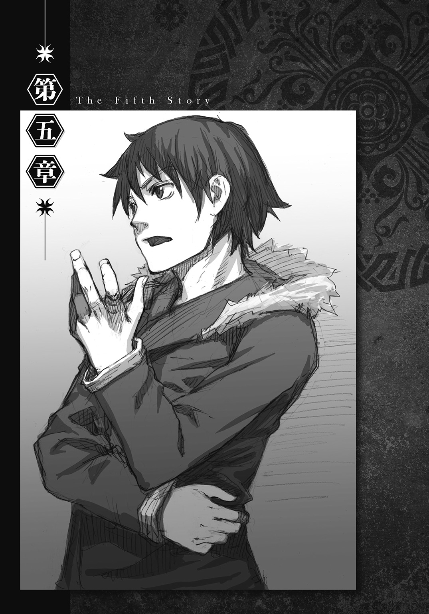
１
『ふ、ふざけないで！』
ミシェルは狼狽しながらも、イグリの提案をはねつける。
「いいえ、私は至って真面目に申し上げております。王族の自害は不名誉であるとお考えなのでしたら、御心配には及びません。マフィニ大臣が自害に見せかけて殺害したということにしておきます」
『...............』
「さあ、殿下。苦痛と醜悪を伴う最期を迎えるよりも、潔く御自身の手で人生の終止符を打たれてはどうですか？」
イグリはミシェルの眼前で小瓶をチラつかせる。
すると、数秒の沈黙が過ぎた後だった。
『――――分かったわ』
ミシェルはスッと手を伸ばすと、イグリから小瓶を受け取る。
『でもね......お母様の所へ行く前に、どうしても教えてもらいたいことがあるの』
「何でしょうか？」
『どうしてあなたは、ストベルシア王国を崩壊させようと思ったの？』
イグリの顔から笑みが消える。
『ストベルシア王家の人間として、それだけはどうしても知っておきたいの』
「......了解しました、殿下。理由はこれです」
イグリは礼儀正しい仕草で、黒い手袋を嵌めた左手をミシェルに向ける。
『バトロジカ紋が？』
「ええ、私がバトロジカであること。それこそが、ストベルシアの崩壊を目論んだ動機です」
イグリが告白をはじめる。
「マフィニ大臣を介してストベルシアに入国するずっと以前――私がまだ、顔と名前を変える前の話です。協会の訓練課程を修了した私は、故郷で仕事に就こうと考えておりました。他の多くの修了者と異なり、私にはバトロジカの力で日々の糧を得るつもりなど、毛頭なかったのです」
ホールにイグリの声がこだまする。
「当然ながら、ある程度の心構えはしておりました。バトロジカがバトロジカでない者たちと共に働くことが、どれほど軋轢を生む行為であるか。十分にそれを理解したつもりで、私はそうすることに決めたのです。ですが、現実は私の理解を遥かに超えておりました」
イグリは遠くを見つめながら言った。
「勤め先に選んだのは、祖国の行政機関の一つでした。採用試験は年に一度。その合格率が一パーセントを切ることもあるほど、厳しい試験でした。バトロジカであることを明確にした上で、非常に狭き門を潜り抜けねばならなかったのですが、私はその試験に一発で合格したのです」
ミシェルは、イグリの口元が微かに緩むのを確認する。
「バトロジカであることを明かした上での合格――厳正に試験の成績だけで選ばれたことを知った私は、くるわんばかりに喜びました......歯車として一生を終えようと決意したほどに。それからの十年間、それは私の人生で最も輝いていた時間でした......ええ、十年間は」
イグリの瞳に、ふと影が落ちる。
「公務に就いて十一年目のことでした。祖国で最も大きな貿易商会の隊商が、輸送中に大規模な盗賊団に襲われるという事件が何度も起きるようになりました。事件発生から半年も経つ頃には、国家規模での対策を講じるほどまで被害が拡大し、そのため我々は、国税を費やして優秀な討伐隊を結成しました。その結果、盗賊団の首領は捕らえられたのですが、それは私の身に降りかかった『理不尽』が誕生するきっかけとなったのです」
無意識に右手を固く握り締めながら、イグリは話を続ける。
「その首領が官憲から取り調べを受けた時のことです。どうして貿易商会を標的にしたのかを問い質されると、首領は『内通者がいたからだ』と返答しました。それからその内通者として、首領は何と、私の名前を挙げたのです。突然、官憲から出頭を命じられて、それを告げられた時、私は何が起きたのかまるで理解できませんでした。顔も知らない盗人風情が、どうして私の名前を知っており、内通者として告発したのか......それについて捜索する時間を一切与えられることなく、私は地獄のような取り調べを受けることとなりました」
表情のなかった顔に歪みが生じ、平坦だった口調に感情がこもり始める。
「仕打ちに耐え切ることができたのは、信じていたからでした。真実は必ず白日の下に晒される――そう信じていたからこそ、私は歯を食いしばりながら一心に耐えたのです。ですが、その努力は実を結びませんでした。盗賊団の首領が、私しか知り得ないはずの個人情報をいくつも知っていたことが決め手となり、私は逆賊として、国の最高審議会の場に駆り出されることになったのです」
口調がさらに熱を帯びる。
「しかし、事態がそこまで進展したことで、私は理解することができました。バトロジカである私には私的な交際相手は誰一人おりませんでしたので、個人情報を漏洩したのが誰なのか、難なく突き止めることができたのです」
『誰......だったの？』
「私の上司です。彼こそが裏切り者でした」
ミシェルの唇を読むと、イグリはすぐに答える。
「盗賊団が強奪した積み荷を国外へ持ち出す経路を提供する見返りとして、私の上司は首領から報酬を受け取っていたのです。そしてそれだけでなく、彼は内通者として私の名前を出すよう首領に指示まで与えていたのです」
イグリの声が高くなる。
「それに気づいた私は、身の潔白を証明するために一週間の猶予を与えてほしいと、最高審議会の席で訴えました。その直訴が受け入れられると、私はバトロジカの力も含めて、使える手段を全て利用し、その結果、証拠を手にすることに成功しました――――しかし、七日後の審議会の席で、私が意気揚々とそれらの証拠を並べ立てた時......まさに、その時でした......『理不尽』が襲いかかったのは、あろうことかその瞬間だったのです」
その話し方には、静かな怒りが込められていた。
「審議会長は私に言いました......『君の用意した証拠は、確かに君の無実を証明している。だが、我々は君の潔白など求めていない。我々が求めているのは、速やかな国権の回復だ』と」
『国権......国家権力の回復？』
「ええ、そうです。『行政機関に内通者がいた』という情報が民間に漏れてしまったせいで、祖国は、国としての機能を維持するのが危うくなるほどの事態にまで陥っていました。そのため、祖国は必要としていたのです......国民の怒りを一身に引き受ける、『生贄となる存在』を」
瞳の中の闇が一段と深さを増す。
「積み上げられた証拠をはたき落とすと、審議会長は語りました。今回の責任を引き受ける『人材』として、流浪のバトロジカがどれだけ相応しいか......ただの人間には不可能な犯罪計画でも、流浪のバトロジカであれば簡単に実行に移せる。そればかりか、流浪のバトロジカが犯人であれば、国は同情を得ることすら可能だと......何と滑稽な話でしょう」
イグリは心の底から憐れむように言った。
「全ては流浪のバトロジカが画策したこと......そういうことにしておけば万事丸く収まる......そう結論づけると、祖国は『国策』として、私の上司が仕組んだ計画に便乗する道を選んだのです。流浪のバトロジカは生まれながらの嫌われ者......あの時ほど、この言葉を痛感したことはありませんでした」
高かった声が、徐々に落ち着きを取り戻す。
「まあ、他にも『理不尽』がまかり通った原因としては、その上司が交渉事に長けていたことや、代々国政に携わる名門の一族の人間だったというお決まりの理由もありましたがね......」
『では、祖国に抹殺されそうになったからストベルシアに......？』
「いえいえ。勘違いをなさらないでください、殿下。抹殺されたのは祖国の方でございます。私は被害者になりたいという、彼らの望みを叶えて差し上げたのです」
ミシェルはハッとする。
『まさか......自分の生まれた国を滅ぼしたの？』
「当然でしょう。国を維持するために、流浪のバトロジカ一人に責任を押しつけようなどと考えた時点で、私の祖国は弱小国であることを証明しました。弱小国の犠牲になる必要がどこにあるというのです？」
イグリはさらに言葉を継ぐ。
「殿下。この時の体験を通じて、私は理解したのです......バトロジカはバトロジカとして生きることこそ至上なのです。持てる力を存分に発揮すれば、バトロジカは世界の勢力図を思うように塗り変えることすら可能です。それだけの力を持って生まれてきたのです。その力がどこまで通用するかを突き詰めたくなるのは、至って自然なことなのです。弱小国の次は、辺境ながらも自治を貫いてきた小国、その次は中央大陸の国々――そうやって標的を大きくしていきながら、世界の形を変える......それこそが、バトロジカの本懐なのです」
２
「御清聴を感謝します。私の話は以上です」
告白を終えると、イグリは元の無機質な言い方に戻る。
「さて、それでは殿下。約束通り......」
『つまり......』
イグリの発言をミシェルが遮る。
『あなたがストベルシアを崩壊させたかったのは......自分の力がどこまで通用するかを計るため......腕試しだったってことなのね？』
「ええ、そういうことです」
小刻みに震えるミシェルの両肩を眺めながら、イグリは平然と答える。
『それが、お母様を殺した理由なのね？』
「ええ、そうです」
『それが、私が自害しなければならない理由なのね？』
「ええ、そうです」
『馬鹿言ってんじゃないわよ！』
ミシェルは小瓶を床に叩きつける。
「殿下、話が違いますね。理由を聞けば、薬を飲むと言われたはずですが？」
飛び散った液体を見下ろしながらイグリが問うと、少女は小さく首を左右に振る。
『最初から死ぬつもりなんてなかったわ。時間稼ぎがしたかっただけよ。クロードやあいつがここに到着するまでに必要な、ほんの少しの時間さえ稼げれば良かったの』
「往生際の悪いことを言われますね、殿下。先ほども言ったように、彼らが何の手掛かりもなしにここを突き止めることは......」
『一時間』
ミシェルは人差し指を立てる。
『何の時間か教えてあげるわ。グラッド副官が私を部屋から連れ出すまでの間に、私が考え事のために使えた時間よ』
「それが何だと言われるのです？」
『今の自分にできることがないか、私は一時間も考え続けていたのよ。そんな私が部屋から連れ出されると聞かされて、何の疑いも抱かなかったと思う？』
「疑いを抱かなかったから、こうしてここにいるのでしょう？」
『違うわ。素直に従ったのは、出るのを嫌がったら乱暴な手段を使われるかもしれないと思ったからよ。もしも身動きが取れない状態にされて連れ出されちゃったら、私の行き先を知らせることができなくなるもの』
イグリの無表情に変化が起きる。
『御存知かしら、イグリ秘書官？ あなたが塗り変えたがっている『世界』はね、納得でできているの。納得させた回数が多いほど、『世界』は私に味方してくれる......だから私は思ったのよ。あいつを納得させよう......私がどこにいるかを納得させようって』
「行き先を聞いても、副官は何も告げなかったはずです」
『ええ。何回聞いても答えてもらえなかったから、行き先を書いた紙を置いておくなんてことはできなかったわ。それでどうしようかしらと悩んでいたらね、そしたら自然と目についたのよ』
「......いったい、何が目についたというのです？」
イグリは、ミシェルの身辺を注意深く観察する。
『ティーセットよ。昼食と一緒に、ハンナが部屋まで持ってきてくれていたの』
ミシェルは胸元から小さな革袋を取り出すと、イグリに見せる。
袋の底には小さな穴が開けられており、その穴から、キラキラと輝く白い粒が零れ出す。
『途中でなくならないように注意して、少しずつ撒きながらここまで来たわ』
「撒いて来た......？」
視線を足元に向けた時。その時になって、イグリは初めて気がつく。
「まさか......」
ホールの床に、粒が集まってできた白い線がうっすらと引かれていることに。
「砂糖か！」
『ええ、そうよ。ストベルシアが誇る最高級品をこんなことに使うのは、ちょっと気が咎めたけどね』
ミシェルはイタズラが成功した子供のように微笑む。
「このような......このような小細工を弄していたとは............」
『私を格下だと思って油断するから、こういうことになるのよ』
「くっ......」
『――――いかがかしら？』
絶句するイグリに、少女は澄ました顔で尋ねた。
『納得されまして？』
「小娘がっ！」
渾身の強がりは見事に功を奏し、挑発されたイグリが怒りの声を上げた時だった。
凄まじい音を立てながら、離れの扉が蹴り破られる。
「ぐっ！」
隙間から差し込んできた光をまともに受けて、イグリは瞼を閉じる。すると直後、聞き覚えのある声が、イグリの耳から侵入する。
「間に合ったみたいだな」
イグリが瞼を開くと、人影が一つ。太陽を背にして、ホールに足を踏み入れるのが見える。
「どうした？ 随分と早いうちから待機しているじゃねえか。開廷まであと一時間はあるぜ？」
ワード＝ラゲッジだった。
「時計はちゃんと合わせておくべきだな」
「ちいっ......！」
イグリは再び指を鳴らす。すると、グラッド副官がミシェルから手を離してイグリのもとへ駆け寄り、彼の盾となる。
「助かったよ、お姫様」
ワードは解放されたミシェルの傍らに立つと、真っ先に感謝の言葉を述べる。
『全く......もっと早く来られなかったの？ 気づいてないのかと思ったわよ』
「気づくに決まっているだろ」
ミシェルの唇を読むと、ワードは言い返す。
「心の底から愛しているからな」
その視線の先には、少女の手に載せられた革袋があった。
３
「危うく出し抜かれるところだったぜ、イグリ」
ミシェルとの再会を果たしたワードは、イグリに挑むような調子で言った。
「どうしてマフィニ大臣に会いに来たのか疑問に思わなかったら、てめえが軟禁部屋に現れた本当の理由には気づけなかったよ。あの行動は、俺たちを足止めするためだったんだよな？」
イグリを庇うグラッド副官を見ながら、ワードは告げる。
「副官がお姫様を連れ出すところを、万が一にも俺やクロード長官に邪魔されることがないように、自分自身を囮にして俺たちを引きつけておく――普通なら、戦闘論者の力をかけた人間にやらせるような役割を、敢えて自分が引き受けることで、真の狙いを読みにくくして目的を果たす......つくづく裏をかくのが好きだな」
「ほう。よく見抜きましたね、ワード＝ラゲッジ」
「そりゃ見抜くさ。もう二度と、てめえの言葉に納得するわけにはいかないからな」
「ですが、この後はどうなさるおつもりですか？ 私が操作するグラッド副官とバトロジカ――格闘したら、勝つのはどちらだと思いますか？」
「そりゃ本職には勝てねえだろうな」
ワードが肩をすくめて答えると、イグリは含めるように説明する。
「人間の肉体は脳から抑制を受けているために、普段は一〇〇パーセントの力を出していません。全力を出すことで肉体を傷つけるのを防ぐためです。ですが、バトロジカの命令を使えば、肉体の損傷を無視した全力での攻撃が可能です」
「火事場の馬鹿力のことなら知っているよ。副官の攻撃が一発でも当たれば、致命傷になることもな。でも、それは取っ組み合いをした時の話だ。イグリ、俺たちは戦闘論者だ。論戦で決着をつけるのが筋じゃないか？」
「今の有利な状況を崩してまで、私がそんな誘いに乗ると思いますか？」
「ああ、乗るね」
そう言うと、ワードは首を離れの外に向けて大声を上げる。
「こっちだ、ハンナちゃん！」
その言葉通り、おかっぱ頭の小柄な世話係が、離れに姿を見せる。
そしてハンナに引き続いて、クロードを従えて「もう一人の人物」が離れに入ってくると、イグリは我が目を疑う。
「こっ......国王陛下！」
『お父様！』
ストベルシア王の登場に、ミシェルも驚きを隠せない。
「ワード殿、メイドの話は本当かね？」
「ええ、マフィニ大臣は黒幕ではございません。それを今から、この場で明らかにします」
ワードとストベルシア王の会話する光景を目の当たりにしても、イグリはそれが現実だと信じられなかった。
まさか、最後の標的であるストベルシア王を、ワードがわざわざ自分の前に差し出してくるとは、イグリは全く想定していなかったのだ。
（イグリが、まだ陛下に力をかけるための具体的な策を立てていないことを見越して、論戦に持ち込むための条件として陛下を同席させる――敵の盲点を衝いた大胆な作戦なのは分かる）
ストベルシア王にぴったりと寄り添いながら、クロードはメモを読み返す。ついさっきハンナから渡されたそのメモには、ワードがこれから仕掛ける作戦内容が記されていた。
（だが、対等の立場で議論を行うためとはいえ、ここまで思い切った手を打った以上、決して敗北は許されないぞ。分かっているだろうな、バトロジカ？）
そんなクロードの懸念をよそに、ワードはイグリに軽い口調で誘いをかける。
「イグリ。昨晩礼拝堂で起きた出来事を、陛下の前で互いに証言し合わないか？」
その誘いは、論戦の舞台を整えるための足固めの作業だった。
「そして、もしも俺とあんたの証言に食い違いがあれば、その時はどちらの証言が真実なのかを、陛下に判断してもらうんだ。陛下を納得させた方の証言が真実ってわけだ」
『ちょっと！ 本気で言っているの？』
提案を聞いたミシェルが、すぐさまワードに嚙みつく。
『イグリ秘書官の証言を聞いて、お父様が納得しちゃったらどうするのよ！』
まさしくその通りだった。論戦に持ち込むために、ワードはイグリに標的を差し出すだけでなく、力を行使できる機会まで与えようとしているのだ。
しかし、ワードはミシェルの反論には取り合わず、イグリにだけ集中する。
「さあ、どうするイグリ？ 俺の提案には乗らずに、副官に国王陛下を襲わせるか？」
「副官に陛下を襲わせる？ あなたは何を言っているのですか？」
皮肉の込もったワードの質問をかわすと、イグリは言った。
「私の口から礼拝堂で起きたことを聞きたいのでしたら、別に構いませんよ。マフィニ様の裁判で証言をする際の、良い予行練習にもなりますしね」
イグリは誘いに乗ることを決めると、辺りを見渡す。
「法廷の準備は済んでいますね。すると、あと必要なのは進行役ですが......そうですね、グラッド副官にお願いすることにしましょうか」
そう言いながらイグリが命令を解除すると、グラッド副官が途端に我に返る。
「......ええっと、あれ......うん？」
「グラッド副官、何をボンヤリなさっているのです。国王陛下の御前ですよ？」
「へ......？ あっ、へ、陛下！」
ストベルシア王の姿を目にして慌てて頭を下げた副官に、今度はワードは言った。
「グラッド副官。マフィニ大臣の裁判の前に、俺とイグリ秘書官の証言に矛盾がないかどうか確認することになったんだ。進行役を頼めないか？」
状況が飲み込めていない副官を、二人の戦闘論者は言葉巧みに誘導する。
決戦の舞台が整ったのは、それから数分後のことだった。
４
「それではただいまから、本日未明に礼拝堂で起きた出来事を明らかにしたいと思います」
全員が指定の席に着いたのを確認すると、グラッド副官が開始を宣言する。
「まずはイグリ秘書官、証言をお願いします」
名前を呼ばれると、イグリは証言台の前に立つ。
「イグリ秘書官。あなたが礼拝堂で見たことを、可能な限り正確に証言してください」
「了解しました」
礼拝堂で事情聴取を受けた時に語った説明を、イグリは再び始める。
「私がマフィニ様と執務室で待機していましたところ、ミシェル殿下の御遺体が発見されたという報告が飛び込んで参りました。遺体の確認のために礼拝堂に向かうよう言われましたのでその通りにしますと、祭壇の手前にあった台の上に、白い布が被せられた人の形をしたものが置かれていました」
イグリの発言が事実と一致しているのは、ここまでだった。
「布を取ると、中から現れたのは町娘の格好をしたミシェル殿下でした。私は殿下が本当にお亡くなりになられたと思い、マフィニ様に御報告するために礼拝堂を出ようとしました。すると扉を通ろうとした際に、付き添いの兵士に、急に腕を摑まれたのです」
イグリは少しも言い淀むことなく、すらすらと言葉を紡いでいく。
「私が驚いて振り払おうとしますと、その兵士は私に向かって『王女殿下を殺したのはお前だ』と言い放ちました。これを聞いて私は察知しました。目の前の兵士は、殿下と共に行方をくらましていたバトロジカ、ワード＝ラゲッジの変装であり、自分の罪を私になすりつけようとしているのだと」
堂々とした態度で、イグリは偽証を並べる。
「やっとの思いで腕を解きますと、私は奥へ逃れることにしました。ワード＝ラゲッジに出入り口を塞がれてしまったので、そうする以外に方法がなかったのです。ワード＝ラゲッジは、なおも私の後を追いかけてきます。私は護身用のナイフを駆使して、彼の襲撃を必死に凌ぎました。すると、何度目かの攻防の後でした。ワード＝ラゲッジが突然バタリと床に倒れ込んだのです。それはあたかも、糸を切断された繰り人形のようでした」
イグリの話に、副官が全身を耳にして聞き入る。
「それから数分が経った頃でしょうか......ミシェル殿下の寝かされていた台から物音が聞こえましたので、何かと思って振り向きますと、何とお亡くなりになっていたはずの殿下が起き上がってこられたのです。殿下は眠らされていただけだったのです」
「どうして殿下は生かされていたのでしょうか？」
「おそらく、まず私を殺してから、その後で王女殿下を殺す――そういう計画だったのだと思われます」
グラッド副官が質問を挟むと、イグリは焦ることなく返答する。
「先に殿下を殺しておきながら、もしも私を殺し損ねてしまったら、王女殿下を殺害した罪を私に着せる計画がダメになってしまいますからね」
咄嗟の質問にもすらすらと答えた上で、イグリはまとめに入る。
「さて、生命に別状はございませんでしたが、王女殿下には一つだけ悲しい出来事が生じておりました。一晩のうちに衝撃的な体験をいくつもなされたためでしょう、お声が出なくなっていたのでございます。そのことに気づいてから少し経ちますと、最初にクロード長官、続いて兵士の方々が五名、礼拝堂に到着されました。ですから、私は兵士の方に今申し上げたのと同じ内容を説明し、それが済むと、礼拝堂から立ち去りました」
「イグリ秘書官、今の証言に偽りはありませんね？」
グラッド副官が確認すると、イグリはストベルシア王とミシェルが座る席を向いて言った。
「はい、決して噓偽りは申しておりません」
イグリが、全く臆することなく虚偽を述べた理由は二つある。
理由の一つは、偽証に対してワードが真実で応戦したところで、ミシェル以外にそれを見ていた人間が誰も存在しない以上、その真実を客観的に立証することが不可能だからである。礼拝堂に自分一人だけが招き入れられたことを、イグリはまんまと逆手に取ったのだ。
もう一つの理由は、軟禁部屋でワードが推理した通り、イグリがマフィニの発言と行動を完全にコントロールしていたからである。政務における助言等で、イグリは常にマフィニを「納得」させ続けていた。その結果、現在マフィニに仕込まれている「禁句」は、優に三桁を越している。そのためイグリは、たとえ偽証がばれたとしても、いざとなれば仕込んでおいた「禁句」を行使することで、「マフィニが戦闘論者の力でイグリに偽証するよう仕向けていた」ように見せかけ、たやすく責任逃れすることが可能だったのである。
「では、次の証言に移りたいと思います」
イグリの証言が済むと、副官はワードに証言台の前に立つよう指示を出す。
（本当に大丈夫なんでしょうね......）
ミシェルが心配そうにワードを見つめる。
（任せとけ、お姫様）
その視線に気づくと、ワードはそれを受け止めながら心の中で言った。
（反撃の準備なら、既に整えてある）
「ワード＝ラゲッジ、礼拝堂で何があったかを述べてください」
５
二分後。
「ワ、ワード＝ラゲッジ......」
証言を終えたワードに、グラッド副官がうろたえた声を上げる。
「あなたの言っていることは、イグリ秘書官の証言とはかなり食い違っていますが......」
「そうだな。だが、俺もイグリと同様に、噓偽りを言っているつもりは全くないぜ」
ワードはそう答えると、イグリを睨みつける。
「え、ええっと......あ、あなたの証言では、あなたは礼拝堂で秘書官との攻防の末に突然倒れてなどおらず、また、ミシェル王女殿下の声が失われたのはショックのためではない――声の消失は、イグリ秘書官の仕業によるもの......そして......」
「私が王女殿下から声をちょうだいすることができたのは、バトロジカなのがマフィニ大臣ではなく、この私だから」
そう言いながら、イグリの方もワードを睨み返す。
（ど、どうなっているんだ......）
グラッド副官は、わけが分からずおろおろする。
すると、事態を収拾できなくなった副官の代わりに、ストベルシア王が進行の舵を取る。
「ワード殿。そなたの証言が真実であれば、この後の裁判は根底から覆されることとなる」
「その通りです、陛下」
「そなたが自分の証言の正当性を主張することは、被告であるマフィニ大臣の無実を主張していることと等しい。そのことはお分かりか？」
「ええ、存じております」
「それでは聞かせてくれ、ワード殿。『自分の証言こそが真実である』という主張を裏づける根拠を、そなたはお持ちなのか？」
「いいえ、残念ですが持ってはおりません。ですから、これから生み出すのです」
「生み出す？ どういうことかね？」
王から尋ねられると、ワードは言った。
「国王陛下。互いの証言の正当性を懸けて、これからイグリ秘書官と一対一で討論させてください。そうすれば、俺は自分の証言が真実であることを、必ず証明してみせます」
この申し出が開戦の合図となり、二人の戦闘論者による直接対決の幕が上がることとなった。
「イグリ、さっきのあんたの証言は実に良くできていたよ。上手に噓をつく方法は、噓にほんの少し真実を混ぜることだって言うけれど、見事にその好例が披露されていたな」
先手を仕掛けたのはワードの方だった。
「あの証言が真実として認められれば、礼拝堂での出来事は戦闘論者であるマフィニ大臣が俺を操って起こしたこと。そして、大臣があっさり自白したのは、俺を操作し切れずに途中で計画が失敗したことで、敗北を観念したから――――そんな解釈になったんだろうな？」
「ワード＝ラゲッジ、私は真実を述べたと言ったはずです。そのような発言で、私の証言が虚偽であるかのような印象を植えつけるのはやめていただきましょう」
イグリは続けて言った。
「それより早く聞かせていただきたいですね。私とあなた、どちらの証言が真実であるかを、一体どのようにして証明するつもりですか？」
「お姫様の声を取り戻すことで証明するのさ」
『私から？』
ミシェルは驚いた顔でワードを見つめる。
「礼拝堂で起きたことを知っているのは三人――俺、あんた、そしてお姫様だ。二人の発言が食い違うのなら、残った一人から話を聞けばいい。簡単な理屈だろ？ お姫様の証言と一致した方の証言こそが、礼拝堂で起きた真実だってことになる」
「別に声を取り戻さずとも、王女殿下に礼拝堂で何があったかを紙にでも書いていただければよろしいのではないですか？」
「戦闘論者の力は、意志に作用する力だ。声が出せないのは、あんたの行使した戦闘論者の力が、『真相を伝えたいという意志』に作用しているからだ。お姫様は、単に発声を封じられたわけじゃなく、あんたの不利になるような行動を一切取れなくされている。だから、その手段は使えないのさ」
「ではお聞きしますが、声の戻った王女殿下の証言が、仮にあなたの証言内容と一致したとしましょう。ですが、その証言が私を陥れる目的で、あなたの力によって操作された証言である可能性はないでしょうか？」
ワードが鋭い口調で力の仕組みを暴露すると、イグリは即座に反撃する。
「それはない。契約者であるお姫様に対し、俺は戦闘論者の力を行使できない。だから俺には、お姫様の証言を操作することはできない」
「契約を交わす前に、殿下に『状況を限定した命令』を仕込んでおけば、操作は可能です」
「知らない振りはなしにしようぜ、イグリ」
「何のことでしょう？」
イグリは惚けた様子で聞き返す。
「契約を交わせば、契約以前に契約者にかけられていた戦闘論者の力は、全て取り消される。『洗浄』と呼ばれている現象だ。つまり、声が戻った後のお姫様の証言には、俺の戦闘論者の力は一切関与していないことになる」
「ほう、そんな現象があるとは知りませんでした。でしたら私と対決などなさらずとも、あなたが殿下との契約を解除して、すぐに再契約をなされば、その『洗浄』によって殿下の声を取り戻せるのではないでしょうか？」
「知らない振りはなしにしようぜ、イグリ」
ワードはイグリから視線を外さずに、同じ言葉で畳みかける。
「一度契約が終了すれば、戦闘論者は協会に報告書を提出してからでないと、次の契約を結べない。この後の裁判が延期できない以上、その提案は時間的に不可能だ」
これを聞いたイグリは、攻撃の矛先を変えることにする。
「ふむ、分かりました。殿下の証言が、あなたの力によって操作されていないことは認めましょう。ですが、殿下の証言が操作されているという可能性自体は、まだ残っています」
「どうしてだ？」
「マフィニ大臣が力をかけたかもしれないからです。マフィニ大臣は殿下の契約者ではありません。ですから、殿下にバトロジカの力を使えます。あなたと契約した後で、マフィニ大臣が殿下と密かに接触していれば、あなたとの契約後であっても、殿下に『禁句』が仕込まれた可能性があります」
マフィニが戦闘論者であると誤解されているが故に成り立つ、偽りの可能性――それを口にすることで、イグリはワードの妨害に打って出る。
「さっきのあんたの証言だと、マフィニ大臣は俺にお姫様を殺させるつもりだったはずだ。礼拝堂で亡き者にするつもりだったお姫様に、礼拝堂で起きたことを自分に都合良く証言するよう『禁句』を仕込んでおくなんて、不自然だと思わないか？」
「暗殺が失敗した時に備えて、用心深く対策を取っておいたということも考えられます」
「へえ。だったら、マフィニ大臣はどうして自白なんてしたんだ？ お姫様に思い通りの証言を言わせることができるのなら、自白する必要なんか全くなかったはずだ」
「――――いいでしょう」
ワードの反撃が見事に決まると、イグリは緒戦の勝利を譲ることにする。
「声が戻った後の殿下の証言には、バトロジカの力が関与していない――殿下御自身の意志による証言であることを認めます。そして、その証言が礼拝堂で起きた真実を述べていることも」
勝利こそ得られなかったが、精神的な余裕を十分残した状態で、イグリは次の対決に備える。
（ふう......今の討論で、イグリを納得させることはできなかったな......）
一方、ワードはイグリの脅威を改めて思い知らされ、やや動揺していた。
ワードやイグリのように十分な経験を積んだ戦闘論者は、自分の言葉に相手が納得したかどうかを直感で理解できる。いかに相手が納得した素振りを見せたとしても、それが本心からなのか、それとも単に納得した振りをしているだけなのかを見抜けるのである。
（マフィニ大臣が戦闘論者だと誤解されているのを利用して、イグリが『事実と異なる状況を前提にした仮説』を用いて攻撃してくるのは想定していたから、反論はすぐにできた......だが、その反論に納得しなかったってことは、イグリは単に攻撃を仕掛けた訳じゃなく、それに俺がどう反論するかも読んでいたってことだ......つくづく用心深い野郎だぜ......やっぱりてめえは強敵だ......）
戦闘論者同士による対決の決着は大きく二つ。
迂闊な発言をしないよう注意を払いながら持論を展開して相手を納得させるか、あるいは相手の思考の穴や論理の矛盾に相手よりも先に気づき、それを指摘することで相手を納得させる。
そうして初めて、相手を操る力を手にすることができる。
（隙を衝けるのは一度だけ......だから決めた......）
どちらの決着を狙うにしろ、相手の思考をどれだけ先読みできるかに勝敗の要がある。相手が強敵であればあるほど、対決中に必要とされる集中力は跳ね上がる。
（次で最後だ......）
従って、自分より同等以上の戦闘論者を相手にする場合、必要な戦略は「できるだけ短期戦に持ち込むこと」である。
（次の討論で、一気に片をつける！）
ワードの全身を緊張が駆け巡る。
６
「ワード殿。そなたとイグリ秘書官のやり取りを聞いて、この論戦が真実の解明に繫がることは理解した。だが、そなたはどうやってミシェルから証言を得る？」
ストベルシア王のこの一言により、最終戦の幕が上がる。
「バトロジカの力によって、今のミシェルはイグリ秘書官の不利になるような行動は取れない――そなたはそう主張しておるが、本当にそうであれば、余はミシェルの口から真実を聞くことは不可能としか思えん」
「おっしゃられるように、今のままでは不可能です。ですが、イグリ秘書官が戦闘論者であることを明らかにすれば、不可能を可能にできます」
ワードは王にそう説明してから、イグリに告げる。
「バトロジカ・ルール第八十五条『戦闘論者協会は、戦闘論者が原因であると協会が認めた紛争に対し、戦闘論者の力を用いて介入する』。あんたが戦闘論者であることを証明できれば、戦闘論者協会を動かすことができる。そして協会の力を使えば、お姫様に下した命令を取り消させることができる。そうすればどちらの証言が真実かが判明し、万事解決ってわけだ」
「どのようにして私を戦闘論者だと証明するのですか？ その証明は、この後の裁判が始まるまでに終わらせていただけるのでしょうね？」
イグリは余裕たっぷりに問いかける。
「一瞬で済むさ。あんたが嵌めている左手の手袋を取ってもらえるか？ 戦闘論者だけが持つ独特の紋様、バトロジカ紋があるかどうか調べさせてくれ」
（ああ、そうよ。その手があったわ）
ワードの発言を聞いて、ミシェルがそう思った時だった。
「この手袋ですか？ ええ、別に構いませんよ」
イグリはあっさりと手袋を外すと、ホールにいる全員に見えるように、手の甲を外にして肩の高さまで上げる。
（えっ......）
ミシェルは目を見張る。
イグリの左手はどす黒い色をしており、肌の色を留めている箇所は全くなかった。
「若い頃、戦場に出た時にドジを踏んでしまいまして、左手に毒矢を受けました。幸いにも解毒が上手くいきまして、手首の付け根までの皮膚を侵されただけで済みましたがね」
イグリはそう言うと、痛々しい様相を呈している左手に元通り手袋を嵌め直す。
「まあそうは言っても、御覧のように見映えは良くありませんから、人前に出る時は、こうして常に手袋で隠しているのです」
（くっ、やはり対策済みか......どうするつもりだ、バトロジカ......？）
クロードが奥歯を嚙み締める。
「申し訳ありませんねえ、ワード＝ラゲッジ。私の左手の皮膚は、どのような手段を用いても回復は不可能......私が戦闘論者であったとしても、バトロジカ紋を根拠にそれを証明することはできません」
イグリは嘲りの混じった口調で告げる。
「時間も残り少ないわけですが、あなたは一体どうやって、私がバトロジカであると証明されるおつもりでしょうか？」
その言葉がホールに完全に吸い込まれ、沈黙が訪れようとする一歩手前だった。
「――最初におかしいと思ったのは、市場で騒ぎを起こした件で取り調べを受けた時だった」
ワードは唐突に口を開く。
「おかしいと思った点は三つ。一つめは、ストベルシアが辺境に位置しながら、戦闘論者の対策をしっかり取っていたこと。二つめは、王妃陛下のことを尋ねても何も答えてもらえなかったこと。そして三つめは、俺の師匠と王妃陛下の関係についてだった」
突然始まったワードの独演に、イグリは思わず言葉を失う。
「その後、二つめの疑問については、お姫様から解答を得ることができた。王妃陛下のことについて何も教えてもらえなかったのは、実はメリッサ王妃が三年前に病死していて、対外的にはその事実が伏せられているためだった」
その場にいた全員の顔色が一斉に変わる――中でも、クロードのそれは凄まじいものだったが、ワードは気にすることなく話を続ける。
「だけど、残り二つの疑問は、結局明らかにならなかった。加えて、お姫様の印象では、メリッサ王妃の死因は病気ではなく、別の原因が隠されているとのことだったから、死因の謎も残ったままになった。礼拝堂でイグリの返り討ちに遭って眠らされた時点では、俺は何にも知っちゃいなかったんだ」
ここで、ワードは一旦独演を中断すると、ストベルシア王に進言する。
「ですが、陛下。今の俺は、あなたが誰にも言わずに隠し通していた『秘密』を知っています。これから先は、そのことについても言及しますが、よろしいでしょうか？」
「......構わん。遠慮は不要だ」
ストベルシア王は首を縦に振ると、静かに言った。
「知ることを全て話すが良い。もしかしたら、余は大きな『勘違い』をしておるのやもしれん」
それだけ言うと、王は口を噤む。
「感謝します、陛下」
ストベルシア王に一礼すると、ワードは続きを述べる。
「地下牢に放り込まれていた間、事件の流れを整理していた時だった。さらに俺は、新たな疑問を抱くことになった。この時に感じた疑問は、イグリの計画内容についてだった」
ワードは二つの計画――「王族の醜聞を蓄積する元々の遠回りな計画」と、「ワードの入国により差し替えられた王女殿下暗殺計画」を暴露する。
「おかしいと思った点は、またも三つだ。一つめは、『差し替えられた計画』が何の罪もないハンナちゃんの生命まで奪うという無慈悲な内容だったのに対し、『元々の計画』が随分と手ぬるい内容だったこと。二つめは、ロケットに仕掛けた罠の存在をわざわざ仄めかしたこと......」
ワードは再び言葉を切る。
「そして三つめ。イグリがお姫様の身動きを止めるために戦闘論者の力を使ったこと。俺にしてみれば、これは一番大きな疑問だった」
「何がそんなに疑問だったのですか？」
グラッド副官が質問すると、ワードは言った。
「計画の最終目標は、王女殿下の暗殺だ。礼拝堂で戦闘論者の力をかけることに成功した時、イグリはその時点で王女殿下を自害させることが可能だった。イグリの放った言葉は、それほど深く彼女を納得させていたからな。だが、それにもかかわらずイグリは、『説得した相手を操ることができる力』を生命を奪うためではなく、身動きを封じるために使った。このことが、俺には不思議でならなかった」
ワードがさらに話を進めようとした時だった。
「ワード＝ラゲッジ、いい加減にしてください！」
業を煮やしたイグリが、遂に声を荒らげる。
「何を言いだすのかと思えば、国王陛下を巻き込んで根拠のない妄言を延々と披露し続けるとは......不愉快極まりないですね！」
「そいつは済まなかった。だけど安心しな、イグリ。あと少しで全てが終わる。もう少しだけ話させてくれ」
「何が終わるというのです？ あなたの為すべきことは、私が戦闘論者だと証明することでしょう」
軽口で対応するワードに、イグリはますます声を荒らげる。
「終わるべきなのは、あなたのその自由奔放な発言の方です」
「いいや」
その反論に、ワードは答えて言った。
「終わるのはイグリ、あんたへの説得さ」
ワードは話を元に戻す。
「俺が抱えることになった六つの疑問は、七つめの疑問が揃ったことで一気に解明されることになった。七つめの疑問――それは、どうして国王陛下が、マフィニ大臣が戦闘論者であると誤解したかという疑問だ」
再び邪魔されるのを防ぐために、ワードは一気にまくし立てる。
「七つのうち、王妃陛下の死因以外の六つには、全て戦闘論者が関わっていた――それに気づいた俺は、王妃陛下の死因についても戦闘論者が関与しているんじゃないかと考えた。すると、それがきっかけとなって、俺はストベルシア王とイグリがひた隠しにしていた、ある『秘密』を突き止めることに成功した。その『秘密』が、全ての疑問の答えを俺に与えてくれたんだ」
そう言うと、ワードはイグリの目をじっと見据えながら言った。
「イグリ。さっき手袋を脱いでもらったばかりだが、もう一つ頼まれてくれ」
ワードの表情に今まで以上の強い意志が込められていることを、ミシェルは瞬時に見て取る。
「今度は背中を見せてくれ」
その一言で、イグリの顔から一気に表情が消え失せる。
「どうした、随分と顔色が悪いな？」
ワードの視線に貫かれたイグリは、かすれた声を上げる。
「ワー......ド......ラゲッジ......まさか......あなたの目的は......協会を動かすことではなく......」
「ああ、そうさ。あの発言は、俺の『狙い』が気づかれないようにするための仕込みだ。協会の力なんてこれっぽっちも当てにはしていなかった。俺は最初から、自分の力であんたを仕留めることしか考えていなかった」
二人のやり取りを聞いても、周りの人間は誰一人――――事情を知るストベルシア王ですら、イグリがどうして衝撃を受けたのかを理解できない。
「最初に言っただろ？ この討論は、『俺の主張が真実であることを裏づける根拠』を生み出すために始めるって」
「が......あ.........」
ワードはイグリに告げる。
「納得したな？」
７
「バトロジカ。イグリはなぜ突然取り乱した？ 背中を見せろというのはどういうことだ？ 陛下とイグリが隠していた『秘密』とは、一体何を意味している？」
対決を終えたワードに、クロードが立て続けに質問する。
「順を追って説明するよ、長官。そのための時間がたった今、ようやく手に入ったからな。この国には、ある大きな『秘密』があったのさ。メリッサ王妃陛下に関する、とても大きな『秘密』がね」
ワードは最後の作業――真相の公開に取りかかる。
「今回の事件には、実は王妃陛下がかなり密接に関わっていた。俺の感じた七つの疑問が、王妃陛下に関する『秘密』を知っただけで全て解決したくらい、密接にだ」
「七つ全て？ どういうことだ？」
クロードは不可解な顔をしながら言った。
「この国のバトロジカ対策が厳重なことや、イグリの計画に関わる三つの疑問には、王妃陛下が関係しているとはとても思えんが？」
「いいや、その四つにも『秘密』は関与しているぜ。なぜなら、この国の戦闘論者対策が厳重なのも、もともとの計画が悠長だったことも、罠のヒントを提示したことも、イグリがお姫様の生命を奪うために力を使わなかったことも、全て王妃陛下がそう仕組んだことだったからさ」
ワードが本格的に説明を開始する。
「イグリの計画に関する三つの疑問には、実は戦闘論者が関与しているという共通点とは別の、『もう一つの共通点』がある――――それはお姫様の生命を奪うことに対し、イグリが自ら歯止めをかけているという共通点さ」
ワードはさらに嚙み砕いて説明する。
「もともとの悠長な計画には、王女殿下の生命を奪う行為は含まれていない。ロケットが罠であることを示す手掛かりは、少し考えれば何が罠なのかすぐに分かる、かなり親切な内容になっていた。そして何より、イグリはお姫様に生命を奪う命令を下さなかった――――おかしいだろ？ まるでイグリは、本気でお姫様を殺すつもりがないかのようだ」
俯くイグリを見つめながら、ワードは話を続ける。
「だがその一方で、イグリはハンナちゃんを自害させる命令を下していたり、マフィニ大臣を死刑にするつもりでいたりと、明確な殺意を伴う行動も取っている。この矛盾に関わっていたのが王妃陛下だった」
クロード、グラッド副官、ハンナ、そしてミシェルが、ワードの次の言葉を待ちわびる。
「イグリは、メリッサ王妃陛下から命令を下されていたのさ――――『ミシェル王女を殺すな』っていう強力な命令をね」
四人は天地が引っくり返ったかと思うほどの衝撃を受ける。
「もともとの計画が悠長だったのも、暗殺計画が中途半端だったのも、王妃陛下が下した『命令』によって、イグリがお姫様をどんなに殺したくても決して殺せなかったからだった―――このことに気づけば、最後の疑問以外の六つの疑問はあっという間に明らかになった。協会に指導を依頼していないのに対策がしっかりしていたのは、王妃陛下が戦闘論者の対策に精通していたから。俺の師匠との繫がりについても説明がつく。そして今思えば、お姫様が戦闘論者について何も知らされていなかったのも、この『秘密』が原因だったのさ」
「すると......つまり......」
クロードが代表して確認を取る。
「陛下がお隠しになっていた、秘密というのは......」
「メリッサ王妃陛下は流浪の戦闘論者だったという秘密さ」
ワードは返答すると、ミシェルに尋ねる。
「お姫様、思い出してみてくれ。おそらく王妃陛下は、人前で手袋を外したことは一度もなかったんじゃないか？」
『あっ......』
ミシェルは幼かった頃の母親との語らいを思い返す。
（言われてみれば......お母様は、上等のシルクの手袋をした手で私の頰を撫でていた......そして......そうよ......棺の中でたくさんのお花に囲まれたお母様は、両手に白い手袋を......）
『だけど、お母様がバトロジカだなんて......そんな重大な事実が隠し通せるものなの？』
驚きを露にしながら唇を動かすミシェルに、ワードは一度頷いてから答える。
「国王陛下だけだったら、隠し通すことはできなかっただろうな。隠し通せたのは、『もう一人の秘密を知る人間』の協力があったからさ。今はもうストベルシアにはいない人間のな」
『今はいない......誰のことを言っているのよ？』
「メリッサ王妃陛下を診ていた、前の御殿医だよ。おそらくその御殿医は、病気を治せなかった責任を取って国外退去になったんじゃなく、本当は......」
「そのことについては余から話すとしよう」
ワードの代わりを務めるために、ストベルシア王が沈黙を破る。
「まずはメリッサの正体を伏せていたことを皆に詫びよう。だが、誓って申す。メリッサはたった一度を除き、この国で自らの力を使ったことは決してなかった」
王は最初にそう告げた後で、ワードの話を引き継ぐ。
「ワード殿が言ったように、御殿医はメリッサがバトロジカであることを知っておった。メリッサが亡くなると同時に彼を国外へ出したのは、この国で余だけが、『メリッサの秘密を知る唯一の人間』になるためだった。秘密を知る人間が少ないほど、その秘密は秘密であることができるのでな......秘密の保持に関して言えば、余の判断は間違っていなかったと自負しておる」
「陛下......それでは王妃陛下が亡くなったのは、我々が聞かされていた理由――――御殿医の不手際ではなかったのですか？」
クロードが声を震わせながら聞くと、ストベルシア王はこくりと頷く。
「うむ、その通りだ......余はミシェルだけではなく、そなたや大臣らにも、これまでメリッサが亡くなった本当の理由を伏せておった。真実を言えば、メリッサがバトロジカであることも明かさねばならんかったからだ」
「では、亡くなられた本当の理由とは？」
「この国に潜んでおったバトロジカ――――イグリとの対決により生命を落としたのだ」
再びホールを衝撃が襲う。
（やっぱりイグリ秘書官は、お母様を............）
既に真相を聞かされていたミシェルも、その衝撃から逃れることはできなかった。
「三年前のあの日――――事切れる寸前、メリッサは余の寝室を訪ねてきた。腹から大量の血を流しておった。余は急いで御殿医を呼ぼうとしたが、メリッサはそれを制した。もう自分が助からないことが分かっておったのだ......」
ストベルシア王は封印していた記憶を呼び覚ます。
「息も絶え絶えの状態で、メリッサは余に何が起きたかを語った。メリッサは......メリッサだけが気づいておったのだ。王政の崩壊を密かに目論んでおった、悪しき輩の存在を......」
三年前の情景――愛する妻が息絶えた「あの時」を思い浮かべながら、ストベルシア王はメリッサ王妃の最期を語る。
「メリッサは余に申した......国内で悪しきバトロジカが暗躍しておることを。その正体不明のバトロジカと対決した結果、力をかけることには成功したが、自分はまもなく天に召されることを。そして力をかけた際に、覆面で顔を隠していた敵の背中に、『自分の左手の紋様と同じ形の痣』を付けておいたことを」
「『刻印』――戦闘論者の間で、そう呼ばれている技術だ。『禁句』と同じように、限られた戦闘論者だけが使える力の使い方で、力をかけた相手の背中に、自分のバトロジカ紋を刻むことができる。かけた命令が取り消されない限り、『刻印』はずっと残ることになる」
そう補足すると、ワードはストベルシア王に言った。
「七つめの疑問の答えをお聞かせください。陛下がマフィニ大臣を戦闘論者だと誤解したのは、大臣の背中にメリッサ王妃陛下のバトロジカ紋があったからですね？」
「その通りだ。先ほど、余が申した『大きな勘違い』というのは、マフィニ大臣を暗殺者だと思い込んでおったことだ。軟禁部屋で大臣の背中に痣を見つけた時、余は全身に雷を浴びた気分だった。背中に痣のある人間がバトロジカ――メリッサは余にそう伝えた。背中の痕は、メリッサが病で尽きる寸前にあった自分の余命を、ミシェルを守るために用いた証......故に、余は露ほども疑わなんだ。マフィニ大臣がバトロジカであることを、どうして疑うことができよう......だが、大臣の痣は、メリッサの力によるものではなかったのだな？」
「そうです。『刻印』を刻まれたことに気づいたイグリが、マフィニ大臣に偽の刻印をつけておいたのです。本物は、今もイグリの背中に刻まれているはずです」
ワードは続けて質問する。
「それで陛下。王妃陛下が亡くなられた後、陛下はどのように事後処理をなされたのですか？」
「メリッサの最期を見届けると、余はすぐに御殿医を呼び、事の次第を全て打ち明けた。それから二人だけで話し合い、大臣らには御殿医の治療が至らなかったことが原因で、ミシェルには持病の悪化が原因であると説明することに決めた」
王の告白が終盤に差しかかる。
「ミシェルにだけは別の理由を告げることにしたのは、そうすることで、御殿医の失態という大臣らへの噓に、多少なりとも真実味を持たせられると思ってのことだ。そしてその後で、濡れ衣を着せてしまうことを詫びた上で、御殿医にはこの国を去ってもらった」
「王妃陛下の死を公表しなかったのはどうしてですか？」
「大臣らには、『長年世話になった御殿医が次の土地で働く際に困らぬようにするため』と弁明した。しかし真の理由は、メリッサを襲った者の正体が判明するまでは、波風を立てるような真似をしたくなかったからだ。そやつの口から、メリッサの『秘密』が暴露される危険を避けたかったのだ......」
ストベルシア王は深く息を吐く。
「メリッサは王妃の公務として、世界中の国々の王族や為政者と会談しておった。会話の巧みだったメリッサの言葉に、誰もが納得した。言葉を交わした要人の数は千を下らん......メリッサの秘密が世に知られれば、ストベルシアの国としての信用は地に落ちる......この国の王である余にとって、メリッサがバトロジカであることは何としてでも、何をおいても隠し通さねばならん秘密だった」
王は、隣に座るミシェルに視線を移す。
「ミシェル、そなたには辛い思いをさせてしまい本当に済まなんだ。全てはこの国の崩壊を避けるためだったのだ......余はこの国の王、ストベルシアの国土と国民を守る義務がある......それは何よりも、親子の情よりも優先せねばならぬ義務なのだ。本当に......本当に済まなんだ」
ミシェルは黙って首を振ると、ストベルシア王にそっと寄り添った。
８
「クク......ククク......ククククク............」
ストベルシア王の告白が終わると、突如、神経に障る笑い声がホールに響き渡る。
「クク......こんな結果になるのでしたら、私の背中の『刻印』を証拠として、メリッサ王妃が戦闘論者であることを、広く世に知らしめるべきでしたねえ......」
イグリのその言葉が、場の空気を瞬く間に一変させる。
「先ほどのクロード長官からの質問――残る最後の一つには、私自身の口から答えさせていただきましょう。ああ、私の言葉に納得することを恐れる必要はありません。既にワード＝ラゲッジは、私に力を使うなという命令を下してありますからね」
誰とも視線を合わさずに、イグリは下を向いたまま自らの敗因を語りだす。
「私が取り乱したのは、二つの理由からです。一つは、ワード＝ラゲッジが、メリッサ王妃の『秘密』と私の背中の『刻印』に気づいていたことを知らされて、私がミシェル王女を殺せないことを見抜かれていたことに『納得』してしまったから......そしてもう一つは、私が彼の仕掛けた罠を見抜けていなかったことに『納得』してしまったからです」
イグリはさらに解説する。
「私が戦闘論者であることを証明して戦闘論者協会を動かし、協会の力を使って命令を取り消させて王女の証言を得る――ワード＝ラゲッジのこの発言は、私を誤った考えに導くための罠だったのです......彼の狙いは『私が戦闘論者であること』を証明して『ミシェル王女の証言を得ること』ではなく、その逆――『ミシェル王女の証言を得ること』で、『私が戦闘論者であること』を証明することにあったのです。対決を始める前に、『一対一で討論すれば自分の証言が真実である根拠を生み出せる』と彼が言っていたのは、そういう意味だったのです。それに気づけなかったのは、ワード＝ラゲッジが意図的に順序を逆に伝えて、『私が戦闘論者であること』を証明するために躍起になっていると、私に思い込ませていたからでした......私はまんまと、彼の狙い通りに思考してしまっていたのです」
イグリは顔を俯けたままで言った。
「ワード＝ラゲッジ、私の負けです。どうやら私は、あなたの実力を見誤っていたようです」
「そうか、だったらイグリ」
その敗北宣言を聞くと、ワードはイグリに呼びかける。
「俺が下した命令じゃなく、あんたの意志でお姫様に声を返してやってくれないか？」
すると、イグリはゆっくりと首を起こす。
その瞳は、極限まで見開かれていた。
「いけません......それはいけませんねえ、ワード＝ラゲッジ......全く何を言っているのです」
ワードを覗き込むように見つめながら、イグリは吠える。
「戦闘論者が戦闘論者に敗北したのです！ その後に行われることは決まり切っています！ 勝者は敗者に命令を下すのです！ 絶対不可避の命令を下すのです！」
全てを失ったイグリが、ワードを高らかに諭す。
「ワード＝ラゲッジ！ 王女の声は、契約者であるあなたが、自分の力で取り戻すのです！」
「そうか......そうだな......だったら、遠慮なく使わせてもらう」
その忠告に従い、ワードは手袋を外すと、自分のバトロジカ紋をイグリに向ける。
「バトロジカ・ルール第二十二条」
今では誰もやらなくなった、古式に則ったやり方だった。
「堅気の戦闘論者は、己の契約者の命令に基づき、説得した相手に対し、己の力により生じた全ての結果の責任を負うことなく、己の力を行使することができる」
雄弁なる戦士は命令する。
「我が契約者にかけた力を解除せよ」
それからすぐのことだった。
「――――私の証言がどちらと一致するかは、言わなくても分かるわよね？」
離れのホールに、少女の第一声がこだました。
「この三年間、『あの時』のことは一瞬たりとて忘れたことはありませんでした......」
何の前触れもなく、イグリがそう呟く。
「心の底から驚きましたよ......あの病弱で、人を疑うことをまるで知らないかのように振る舞っていたメリッサ王妃が、私と同じ戦闘論者だったことが判明した時はねえ......」
先ほどまでとは異なり、憑き物が取れたかのような穏やかな声だった。
「本当に大したお方でした......王妃は見抜かれていたのです......決して失敗の許されない大役であるが故に、暗殺の実行犯に傀儡を用いるはずがないことを......自分を殺しに来る相手が、戦闘論者本人であることを......」
イグリは怪しく微笑みながら、ミシェルの方を向く。
「ミシェル王女、お教えしておきましょう......これは勝利を収めたあなたへの、私からのほんのささやかな贈り物だと思ってください......私がナイフを向けた時、メリッサ王妃はその瞬間、何とナイフに自ら飛び込んでこられたのです......身体を密着させた状態で、真っ赤に染まっていく腹部を見せられ、私は驚きを隠せませんでした......そんな私の耳元で、メリッサ王妃は最初にこう言われました......『何者かは知りませんが感謝します。これであなたは、私の娘を手にかけることが永遠に不可能になりました』という謎の言葉を......そして、その後......次に聞かされた言葉ほど、私を震え上がらせたものはこの世に存在しません......王妃は続けてこう言ったのです......」
イグリの瞳に恐怖が宿る。
「『バトロジカ・ルール第十三条。流浪の戦闘論者は、己の生命に危険を及ぼした相手に対し、一度だけに限り、己の正体を明かさず己の力を行使しても罪には問われない――今から用いるのが、その一度です』と......そして言い終えると、メリッサ王妃は御自分の手袋を外し、左手の戦闘論者の証を私に見せたのです......」
そう言うと、イグリは恐怖で全身を震わせる。
「それは、王妃が御自身の生命と引き換えに仕掛けた『罠』でした......彼女は、まず自分の死を確定させ、次に謎の言葉を私に告げ、最後に自分が戦闘論者であることを明かしました......この手順こそが罠の本質......『力をかけた戦闘論者が死んでしまえば、力をかけられた相手が戦闘論者であった場合、下された命令は永遠に取り消されることはない』......謎の言葉はそういう意味だったのです......『洗浄』したくても、戦闘論者が戦闘論者と契約することは禁じられていますからね......」
恐怖が去ると、イグリの口元に笑みが戻る。
「最後に自分の正体を明かすことで、はじめて言葉の謎が解明する仕掛け......クク......何という悪魔的な......そして、美しい......ククク......何と美しい罠なのでしょう......そんな罠を仕掛けられては、私は納得するしかないではないですか......」
イグリは心の底から可笑しそうに笑う。
「思い知らされました......嫌というほど思い知らされましたよ......娘を想う母親の愛情......その凄まじさ......恐ろしさ............狡猾さを......ミシェル王女、だから私は決意したのです......」
「何を決意したの？」
「全力であなたを抹殺することをですよ......」
ミシェルが聞くと、イグリは笑顔で答えた。
「私に下された命令は生涯持続する......それは、もはや呪いとも呼べる代物......その呪いに打ち勝つ方法、王妃に穢された私の誇りを取り戻す唯一の方法、それはあなたの生命を奪うこと以外にはありません......抹殺こそが私の『勝利』......結局、それは叶いませんでしたがね......」
ミシェルから視線を外すと、イグリは誰にともなく語りかける。
「私には、メリッサ王妃の行動がまるで理解できません......全ては、私を納得させるためでした......自分の娘のためでした......『娘を殺すな』という命令を下すため......死の直前ですらルールを遵守した上で、我が子を私の魔手から守るため......そんな目的のためだけに、王妃は自らの生命を罠の材料とした......ああ、そうでしたか......」
ここでイグリは、何かに気づいた素振りで言った。
「ミシェル王女、礼拝堂での言葉は訂正します......私は王妃を殺してなどおりませんでした......私はただ、無様に利用されただけだったのです......あなたを守る鉄壁の盾を作るために......」
だが、そう話すイグリの瞳はミシェルではなく、虚空に向けられていた。
それを見ると、ワードはクロードに確認する。
「長官、この後のマフィニ大臣の裁判は中止だよな？」
「そうだな――代わりに、イグリ秘書官を被告とする裁判を始めることになるがな」
クロードがそう答えた時だった。
「その必要はありません」
声色を急に戻したかと思うと、イグリは右手を素早く懐に入れる。
「引き際は心得ていますので」
再び現れた手にはナイフが握られていた。
（しまった！ 今のは、俺の注意を自分から逸らすための芝居だったのか！）
悟ると同時に、ワードはイグリに飛びかかろうとする。
「待て、イグリ！」
しかし、それよりも一瞬早く、ナイフがイグリの頸動脈を切り裂いた。
（ククク......やはり......あれは......）
噴き出す鮮血の量に比例して、イグリの意識はどんどん遠くなる。
（あのセリフは......幻聴ではなかったのですね......）
そして、意識が完全に途切れる直前。
（そうでなければ......ミシェル王女がこのような小生意気に育つわけがない......それに......戦闘論者は......本性を隠したがる......ものですからねえ......）
イグリの頭の中を満たしていたのは、メリッサ王妃の声だった。
王妃の反撃から逃げ出した際に、追撃のごとく耳に入ってきた声だった。
「てめえにミシェルは殺させねえよ、クソ野郎。あの子は死んでも私が守る」
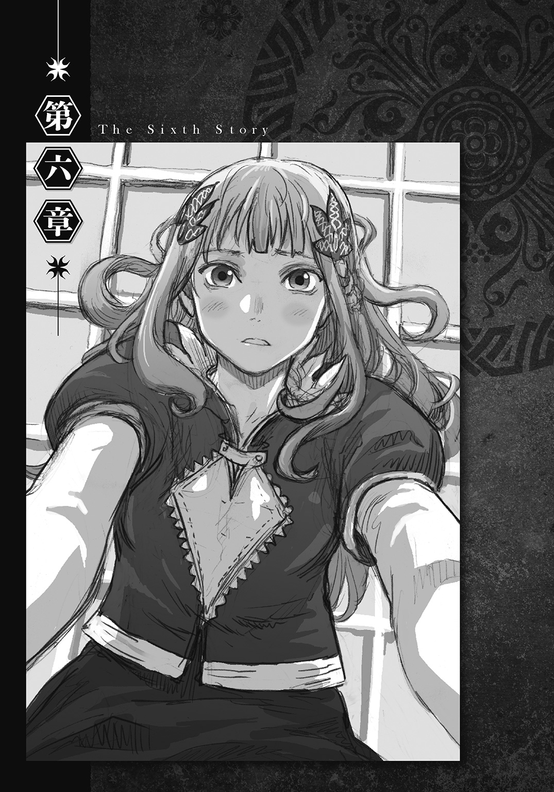
１
ノックの音がしたのは、時計の針が午後十時を指した時だった。
ワードはソファから立ち上がると、貴賓室の扉を開ける。
「来てあげたわよ」
ミシェルは昨晩と同じ口調で告げると、ワードが何か言う前に中に入る。
「こんな時間なのに、今回はきちんと許可を取ってきたみたいだな」
ミシェルの服装を見れば、今回の訪問が秘密裏でないことはすぐに分かった。昨晩客室を訪れた時のフード姿とは異なり、今晩の彼女の装いは、誰が見ても一国の王女にしか見えないほど、気品に満ち溢れていたからである。
「どうやって許可を取ったんだ？」
「まだあんたとの契約を解除していないって言ったのよ」
「何言ってんだ。離れを去る直前に、きちんと解約したじゃねえか」
ワードは呆れた顔でそう言うが、ミシェルを帰そうとはしなかった。
「離れといえば、『片づけ』はまだ済んでいないのか？」
「ええ......」
ミシェルは一度窓の外を眺めてから、その問いに答える。
「まさか、あんな結末になるなんてね......」
二人の脳裏に同じ場面――イグリの最期が甦る。
「マフィニ大臣から何か新しい情報は得られたか？」
ミシェルは首を横に振る。
「いいえ、今のところは何も。ああ、そうだわ。国務大臣たちがね、イグリ秘書官の『禁句』が仕込まれたままになっている人たちが暴走したりしないか心配しているんだけど、どう思う？」
「うーん......その心配は無用だと思うぜ」
ワードはソファに腰を下ろしながら返答する。
「『禁句』に仕込める命令は規模の小さなものだし、その命令だって何が『禁句』なのかを知らないと有効に使えない。現実的に考えて、実害が出る危険性はゼロだ。気にする必要はないさ」
「分かった、そう伝えておくわね」
「それが聞きたくて来たのか？」
「そんなわけないでしょ。用件だったら、他にもまだあるわよ」
ミシェルはソファに腰を据えると、向かい合うワードに尋ねる。
「先に聞きたいことを聞いて、すっきりさせておくわね。一つめ、『イグリ秘書官が実は私を殺せなかった』なんていう突拍子もない結論を、あんたはどうやって導き出したの？」
「別に自慢できるような理由なんかないさ、何となくそう考えたんだ」
「それにしたって、そう考えるきっかけになった、種みたいなものがあったはずよ」
「種......ああ、それだったらあるな。逆かなって思ったことだ」
ワードは、空き部屋での推理を回想しながら説明する。
「クロード長官はイグリが首謀者だと分かっていても、それを示す証拠がなくて困っていた。ちょうどその時、俺の方は手掛かりはいくつもあるのに、それらを繫ぐ鍵になる何かが分からなくて悩んでいたんだ。俺と長官の悩みどころが『逆の関係』になっているなって思ったらな、ふっと浮かんだのさ――――イグリの行動もそうだったんじゃないかって考えが」
「どの行動よ？」
「お姫様の動きを封じるために力を使った行動だよ。イグリが一見不可解な行動を取る時、その行動には、毎回自身が有利になる裏の理由があった。だけど、煙玉にヒントを仕込んだ行動と、お姫様の生命を奪うために力を使わなかった行動だけは、どれだけ考えても裏の理由が分からなかった。それで思ったのさ。イグリは殺さなかったんじゃなく、その逆――殺せなかったんじゃないかって」
「ああ、なるほどね」
ミシェルは素直に頷くと、ワードに言った。
「改めて振り返ってみると、イグリ秘書官の計画って結構穴の開いた内容だったわね。ロケットに罠を仕掛けたことを仄めかしたのも、そうしておかないとお母様の命令が下されて、罠そのものが使えなかったからだなんて......イグリ秘書官にしてみれば、あれは苦肉の策だったわけね」
「いや、俺に言わせりゃ苦肉どころか次善の策さ。あれはイグリが俺たちに仕掛けたことのなかでも、一、二を争う秀逸な仕掛けだったと思うぜ？」
「どうしてよ？」
「もう少しのところで、イグリが狙った通りの結末になったからさ。ロケットの罠が見抜かれなければ暗殺に成功することになるし、たとえ見抜かれて外されたとしても、お姫様に心理的なダメージを与えられる――イグリはそこまで考えて、つまり、罠が見抜かれる可能性もきちんと考慮した上でロケットに火薬を仕掛けたのさ」
ワードは目の前で母親の形見を爆破されて、自暴自棄になったミシェルの様子を思い出す。
「イグリは、物理的な手段でお姫様の生命を奪うのが困難なことに、早くから気づいていた。だから、お姫様を精神的に追い込んで、自殺を教唆することで生命を奪おうと考えたのさ。離れでイグリが毒薬を渡した行為は、王妃陛下の命令を免れていただろ？ それは、『自殺の教唆が他殺的な手段とは見なされない』ことを意味している。上手くお膳立てして、王女殿下が自分から死にたくなるように仕向けてやればいい――ロケットの仕掛け火薬には、イグリのそんな思惑が込められていたんだ」
ワードは少し意地の悪い表情になってから言った。
「案外、イグリは、お姫様が火薬で死ななかったことを喜んでいたかもしれねえぜ？ 火薬であっさりと目的を果たすより、じわじわと追い込んで苦しむさまを眺めた後で目的を果たした方が、王妃陛下に対する恨みがより晴れるだろうからな」
「気持ち悪いこと言うんじゃないわよ。それに、どんなに追い込まれたって自分から死のうなんて考えたりしないわ」
バラク山で一歩手前の状態まで陥ったことなど、全く覚えていない様子で言うと、ミシェルは強引に話題を切り替える。
「さて、じゃあ二つめ。どうしてイグリ秘書官は、バトロジカ紋と同じように、背中の『刻印』も潰しておかなかったのかしら？ 『刻印』を消しておけば、言い逃れできたわよね？」
「その理由なら簡単さ。イグリのプライドが原因だ」
ワードは即答する。
「イグリにとって『刻印』を潰して追及を逃れるっていう行為は、心の底から王妃陛下に『敗北』することを意味していたのさ。あるいは、自分の手でお姫様を始末した後、『勝利』の記念として『刻印』を消そうって考えていたのかもな」
「ふーん、そういうことだったの。どっちも私にはピンとこない考え方だけど、まあ分からなくはないわね」
「聞きたいことはまだあるのか？」
「ええ、あるわ。三つめ、結局あんたがストベルシアに来た目的って何だったの？」
「変なこと気にするんだな、お姫様。王妃陛下から話を聞けなくなったから、正確な依頼内容は分からねえけど、おそらく俺はイグリの正体を暴くために来たんだ。王妃陛下が戦闘論者だったことを踏まえると、それが一番しっくりくる。俺の師匠はな、戦闘論者たちの間では、有能な『問題解決屋』で通っているんだ」
「問題解決屋？」
「戦闘論者が原因で起きた揉め事を解決するために、世界中を回っている戦闘論者のことさ。複数の依頼が重なって独りで対処し切れなくなってくると、師匠は自分の代わりとして、弟子の俺を現地へ派遣するんだ」
「つまり、お母様はあんたのお師匠様に救援を依頼していたってこと？」
「だな。だが師匠があちこち飛び回っているせいか、それとも他の手違いが原因で、師匠が王妃陛下からの依頼を受理するのに三年以上の月日がかかった......かなり時間が経ってしまってはいたが、王妃陛下の崩御は世間に知らされていなかった。だから依頼はまだ生きていると判断して、師匠は代わりに俺を派遣した――――おそらくそんな背景があって、俺はここに来ることになったのさ」
「それじゃあ、あんたは結果的に、ストベルシアで目的を果たしたってことね？」
「そういうことになるな」
「もうストベルシアにいる理由はなくなったのね？」
「ああ」
「..............................」
「何だ、質問はもう終わりか？」
黙り込んだミシェルにワードが尋ねる。
「いいえ、もう一つだけ。これで最後よ」
ミシェルは言いながらソファから腰を上げると、ワードに一歩詰め寄る。
「あんた、どうして私と契約を交わしたの？」
「言っただろ。あの時は、契約を交わすこと自体が対価に......」
「噓よ、もっといい方法があったわよね？ 私に関わらないっていう最善の方法が」
「うっ......」
ワードは返事に窮する。
「そ、そんな細かいことは、もうどうだっていいんじゃねえか？」
「全然良くないわ」
ミシェルは真剣な表情でワードを問い質す。
「戦闘論者は誰よりも賢く生きなきゃいけないのよね？ だったらあの時、契約なんか交わさないで手を引けばよかったじゃない。どうして私と契約したの？」
「いや......その......」
どう答えるべきか、ワードが必死で言葉を探している時だった。
「――――ありがとう」
ミシェルはワードの胸に飛び込んだ。
「えっ......おわっ！」
不意を衝かれたワードはソファから身体ごとずり落ちると、背中から床に倒れ込む。
「痛てて......突然どうしたんだよ、お姫様......？」
「名前で呼んでいいわよ」
ミシェルは、ワードに馬乗りになったまま瞳をうるませる。
その両頰は上気していた。
「あんた、これからどうするの？」
「こ、今回のことを報告するために、明日にでも北方支部に戻ってから、その後は、し、師匠の所へ......」
「お師匠様への報告が済んだら、すぐにまたストベルシアに戻ってきなさい」
少女は、これまで誰にも見せたことのない表情をワードに向ける。
「お母様がお亡くなりになって以来、私はずっと暗闇の中にいるような気分だった......でも、あんたはそんな私に、光を当ててくれたわ......それは、まるで......まるで夜空を照らす、朝の日の光のようだった......」
ミシェルの柔らかな肉体が、ワードにさらに密着する。
「だからね......だから......あんたが良ければ、これからもずっと............」
「......ミシェル、すまない」
ワードは言葉を返す。
「悪いが、それは無理だ。俺にはやらなきゃいけないことがある......師匠の手伝いをしているのもその一環だ。ストベルシアに留まるわけにはいかねえんだ」
「そう......」
その言葉を聞くと、ミシェルは身体を起こしながら、ゆっくりとワードから離れる。
「だったら......これでもう二度と、あんたと会うことはないわね......」
「そうとは限らねえさ。この先、俺とミシェルの道が再び交わる可能性は十分あると思うぜ。もしも戦闘論者が必要になれば、いつでも俺を呼んでくれたらいい」
ワードは起き上がると、少女をソファへ導きながら言った。
「ま、そんな必要はないに限るけどな」
「そうね......変なこと言って悪かったわね。今言ったことは忘れなさい」
ミシェルはそう言うと、ソファではなく扉に向かった。
２
翌朝、ハンナが貴賓室を訪れた時、ワードは既にストベルシア王国から姿を消していた。
「何と......では夜中の間に、もうこの国を去っておったというのか？」
「はい。門番の報告によると、『夜明けまでに協会へ戻る必要ができた。国王陛下への挨拶は既に済ませてある』と言ったとのことです」
クロードからワードの出国を聞かされると、ストベルシア王は残念そうに言った。
「それは何とも慌ただしい......ワード殿には、与えねばならんものが山ほどあったというのに。クロード、そなたも話しておきたいことがあったのではないか？」
「いえ、陛下。私は別に......」
クロードはそう返答するものの、何か重要な機会をふいにした気分になっている自分に気づく。
「仕方ないわよ。用事が済めば、もうストベルシアにいる必要なんてないもの。出ていくに決まっているわ」
ストベルシア王の隣にいたミシェルが、二人の会話に加わる。
一見すると普段と変わらない表情をしている。しかし、それはこれから開始する作戦を気取られないよう、そう装っているに過ぎなかった。
「そうか......できればワード殿にはこの国に残ってもらい、ミシェルの専属として、ずっと契約を交わしたままでいてもらいたかったのだが......」
すると、ミシェルはからかうように尋ねる。
「あら？ そんなことをして、もしもお父様とお母様のように、私とあいつが恋仲になってしまったら、お父様はどうなさるおつもりなの？」
「な、何！」
ストベルシア王は目を白黒させる。
「ミシェル......そなた、ワード殿のことを......」
一国の王にあるまじき表情を見せられて、ミシェルは吹き出しそうになるのを堪えながら告げる。
「御心配なさらなくても結構よ、お父様」
少女はそう言うと、作戦を決行する。
「私、そんな感情なんて全く抱いてないわ――――――だからね......」
「ドルート連邦？」
ワード＝ラゲッジは、依頼書に書かれていた国名を口に出す。
「北の北にある大国からの依頼の代理かよ......相変わらずこき使ってくれるじゃねえか」
戦闘論者協会北方支部。
その施設内の一室に置かれてある、自分の机にどさりと積まれていた書類一式に全てサインをすると、ワードは書類を抱え上げて部屋を出る。
書類を事務室へ提出し終えると、ワードは正面玄関のホールを訪れる。そして、玄関と向かい合う壁に掛けられてある巨大な世界地図の前で足を止めると、次の派遣先をチェックする。
「おっ......」
支部の位置と派遣先を交互に眺めていると、ワードの視線が、中央大陸から小さく突き出た半島にふと固定される。
ストベルシア王国の所在地である。
（あれからもう一カ月か......）
これから向かう大国とは対照的な、辺境の小国。そこで出会った人々の顔が次々と脳裏を過る。
（地図で見たらあんなに小さな国なのに、あれだけのことが起こったんだよな。今度は北の大国ドルート......いったい、どんな目に遭うことになるのやら――――）
そう考えながら地図を眺めていると、腰の辺りに何かがドンとぶつかった。
「あっと、悪い」
ワードが視線を下げると、すぐ隣で尻餅をついている、後ろ姿の女の子が目に入る。
「ごめん、大丈夫か？」
心配そうに聞きながらワードが駆け寄ると、小柄な少女はすぐに言った。
「大丈夫なのです。御心配には及びませんなのです」
「えっ？」
どこかで聞いた声と言い回しだなと、ワードが感じた次の瞬間だった。
「ちょっと、どうしたのよハンナ！」
これまた聞き覚えのある声を上げながら、前方から「フードのついた肩掛け」を着た少女が近づいてくる。
「なっ......なっ......」
「あら、出迎えてくれたの？」
フードの少女――ミシェルはハンナを抱え起こした後で、口を開けっ放しにしているワードの存在に気づくと、さらりと声をかける。
「ミシェル！」
ワードはホール中に響き渡るほどの大声で叫んだ。
「お前、どうして.........おごあ！」
ミシェルは無言でワードの鳩尾に膝蹴りを命中させる。
「ミ・シェ・ル......？」
少女は身体をくの字に曲げているワードに言い放つ。
「いきなり大声で一国の王女を呼び捨てにするなんていい度胸ね、地下牢にぶち込むわよ？」
「ど、どうして......ここ......に......ハンナちゃんまで......」
痛みを堪えながらワードが聞くと、ミシェルは意外そうに首を傾げる。
「ハンナはここに来るまでの付き添いだけど......もしかして何も聞いてないの？」
「何のことだ？」
「仕方ないわね」
ミシェルはそう言うと、肩に提げている鞄から一枚の書類を取り出してワードに見せる。
「何だよ、これ？」
「それに書いてある通りよ」
「おい..................どういうことだよ？」
受け取った書類の文字を目で追っていくにつれて、ワードの表情が徐々に曇っていく。
「何で俺が、お姫様を同伴してドルートへ行くことになっているんだ！」
「だから書いてある通りよ。イグリ秘書官の起こした事件の詳細を戦闘論者協会へ報告することになった時にね、私、一つ書き加えてくれないかしらってお父様にお願いしたのよ――自分の娘の見聞を広めてやってはもらえないかって」
協会へ報告書を送ることになったのは、ワードがストベルシアを発った日の翌日、ミシェルがそう提案したためだった。
「そしたら、次の日に協会本部の人が来てね、『我々にできることであれば何でも協力させてください』って言われたの。だったら素性が知れてるあんたをって、話がトントン拍子でまとまってね。『ストベルシアの王女殿下の御供に指名していただけるほど、我々を信用してくださり光栄の極みです』って、協会本部の人、すごく喜んでいたわよ」
「お、俺はそんなこと、一言も知らされて............あっ！」
ワードはさっき事務所に提出したばかりの書類の中に、これまで見たことのなかった誓約書が混じっていたのを思い出す。
「ほら、あんたが心の底から愛しているって言っていたから、ちゃんと手土産も持ってきてあげたわよ」
ミシェルが鞄から甘い香りのする紙箱を取り出すと、続いてハンナがぺこりと頭を下げる。
「ワード様、ミシェル殿下を宜しくお願いしますなのです」
「ちょっと待て............」
あまりに突然だったため、ワードは次の言葉を発するまでに十数秒を要する。
「そんな無茶が、この世界でまかり通ってたまるかよ！」
「ホント広いわよね、世界って」
何気ない調子で言うと、ミシェルはホールの右手にあるカフェテリアへ向かって歩きだす。
「さ、後の続きはシュークリームを食べながらにするわよ」
（了）
あ と が き
はじめまして、大保志雄二と申します。
まずは、本作「暁の戦闘論者」を手に取ってくださり、誠にありがとうございます。
さて、ライトノベルでよく描かれるファンタジー世界では、伝説の剣が振るえたり、大陸を吹き飛ばすほどの魔法が唱えられたり、竜族や神族の血が混じっていたりといったことが、そのキャラクターの強さだったりします。一方、我々が暮らす現実世界では、頭が切れることや身体能力が高いこと、特殊技能に秀でていること、あるいは財力や政治力があるといったことが、その人の強さ、すなわち「力」になります。そんなことを考えていると、それら以外にも「現実世界で重要な力」として、ふと思い浮かんだ力がありました。
「物事や自分の意志を相手に分かり易く説明する力」――――いわゆるプレゼン力です。
会議、討論、面接、謝罪、勧誘、教育、指導、交渉、挨拶は言うに及ばず、道案内、訪問販売、企画書作成、愛の告白、喧嘩の仲裁、故郷の自慢、感想・レビューの投稿、電話での自己紹介、メールでのやり取り、最初の打ち合わせ、改稿作業、二度目の打ち合わせ、二度目の改稿作業、締め切りを守れなかった時の言い訳、あとがきの執筆......このように、現実世界で生じる様々な場面において、プレゼン力はとても重要です。
ならば、この「現実世界で重要な力」が、もしもファンタジー世界においても強大な力として作用するとしたら、それは一体どんな世界観だろう――――こうした経緯を踏まえた結果生まれたのが、本作の主人公、ワード＝ラゲッジが持つ「戦闘論者の力」です。
以上、本作のメインアイディアの誕生秘話を簡単に紹介させていただきました。
既に本編を読み終えた方には食後のコーヒーに、あとがきから先に読まれる方には食前のウェルカムドリンクになれば幸いです――――いや、締め切りはちゃんと守りましたよ。
最後になりましたが、素晴らしい挿絵を描いてくださった安倍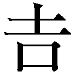俊先生、デビューまで導いてくれた担当編集Ｈ氏に、心より感謝の言葉を述べたいと思います。
本当にありがとうございました。
二〇一五年五月
大保志雄二
著者紹介
大保志雄二 おおほし ゆうじ
和歌山県出身＆在住。４月16日生まれのＢ型。
20年以上の歳月を漫画とミステリーの愛読で消費した結果、ダッシュエックス文庫よりデビューを果たす。
中身の詰まったシュークリームはすすりながら食べれば手が汚れない事に最近気付く。
illustration
安倍俊 あべ よしとし
独特の世界観の物語で、どのように絵にしてゆくか悩みました。
僕は今年でデビューして20年になるのですが、一度初心に立ち返ろうと思い、デジタルに移行していた線画を鉛筆に戻し、描いてはネリケシで消し、を繰り返して描き上げました。
気に入っていただければ幸いです。
ダッシュエックス文庫DIGITAL
暁の戦闘論者
著者 大保志雄二
© YUJI OHOSHI 2015
２０１５年７月31日発行
この電子書籍は、ダッシュエックス文庫「暁の戦闘論者」
２０１５年６月30日発行の第１刷を底本としています。
発行者 鈴木晴彦
発行所 株式会社 集英社
〒１０１－８０５０
東京都千代田区一ツ橋２丁目５番10号
０３－３２３０－６０８０（読者係）
制作所 株式会社デジタルディレクターズ
本作品の全部また一部を無断で複製、転載、改竄、インターネット上に掲載すること、および有償無償に関わらず、本データを第三者に譲渡することを禁じます。なお個人利用の目的であっても、コピーガードを解除しての複製は、法律で禁じられています。